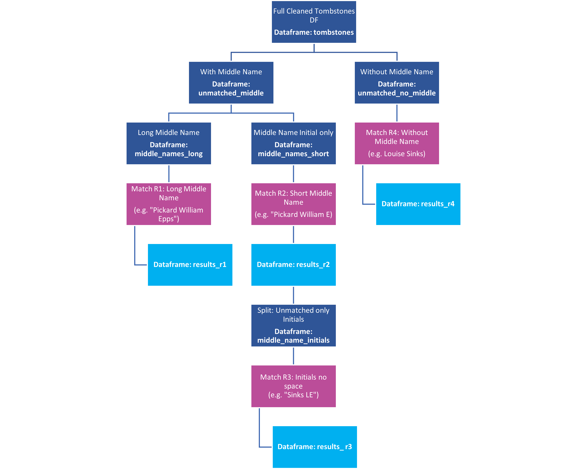

library(tidyverse) # who doesn't want to be tidy?
library(gt) # For nice tables
library(openxlsx) # importing excel files from a URL
library(fuzzyjoin) # for joining on inexact matches
library(sf) # for handling geo data
library(leaflet) # mapping
library(here) # reproducible file paths
library(magick) # makes panel picturesData Cleaning for the Tombstone Project
Data-Viz
R
fuzzyjoin
quarto
leaflet
regex
stringr
data cleaning
problem solving
mapping
sf
Code-Along
Using StringR to clean a human created excel sheet full of typos and formatting inconsistencies. Then matching excel data to photo names.
Project Overview
I’m working on a project for my father that will culminate in a website for his genealogy research. There are a couple of different parts that I’m working on independently. This part involves linking photos of family gravestones to an Excel sheet that records the GPS location of the tombstones. This combined dataset is used to generate a leaflet map. This portion focused on data cleaning and the photo matching. I do generate a leaflet map at the end, but it is not the final map. I’ll do the styling of the map in a separate post.
This post is intended both to document what I did for my father so he understands any changes to the data and what results were obtained, but also as a tutorial on how to approach a messy problem. I’ve been solving problems using code for a long time. There are a ton of tutorials that focus on how to solve a specific problem, but fewer that show how to approach an undefined problem. And even fewer tutorials show mistakes and false starts. But these things happen when you are solving real world problems. Constantly checking your results against what you expect to get is critical and then figuring out how you messed up and fixed it is also important. The hard errors to find and fix are the logic errors. Everything runs fine. You get an output that may look right. But you still might not be getting the correct result. You have to approach every output critically and check your work carefully.
I generally write my posts in a “code-along” style. I include almost everything I do, including dead ends. I could present more polished posts, where I write everything after I achieved the end result. This style of post would only include the steps that directly lead to the end result. I don’t do that because I don’t think the mechanics of getting to an end result is necessarily the hard part. Thinking your way through and self-checking the work is the hard part. If you know what you are trying to do, you can always find some code snippets to achieve that result. If you don’t know what you are trying to do, then all the code snippets in the world won’t help.
Some sections I do omit mistakes and go to the final product, just so this tutorial doesn’t end up being 5 million pages long. Generally, the first time I do something, I will go into more detail than following times. For the data cleaning portion, the Cleaning Up Cemetery Names section shows the entire process, including mistakes. For the matching part, everything before Round 2 is in detail, including mistakes, and then the other rounds are much less detailed.
I did also code a simplified version of this project all the way through using only one round of matching and 30 photos, just to make sure the basic elements were working. That isn’t shown here.
If for some reason you want to run this yourself, you can get a zipped copy of all the photos from here. I don’t upload the photos in this repo because the files size is too large.
Setting Up
Loading Libraries
I’ll include more info and reference information about the packages at the code blocks where I use them.
File Folder Names and Loading Data
Here set-up some variables that I use for the file/ folder structure and I read in the spreadsheet.
# folder names
blog_folder <- "posts/2023-08-04-data-cleaning-tombstone"
photo_folder <- "Photos"
archive_folder <- "Archived Photos"
unmatched_folder <- "Unmatched Photos"
match1 <- "Matched_Round1"
match2 <- "Matched_Round2"
match3 <- "Matched_Round3"
match4 <- "Matched_Round4"
#data_file <- "Tombstone_Data_small.xlsx"
data_file <- "Tombstone Data.xlsx"
# read in excel sheet
tombstones_raw <-
read.xlsx(here(blog_folder, data_file),
sheet = 1
)The here Package for Reproducible File Structures
I have folder structure that reflected the sequential nature of the matching, so photos get moved into different folders depending on what round they were matched in. I am use here to generate the paths. Quarto documents start the file path in the folder where the document resides, while r files start in the project folder. here always starts in the project folder, so it allows for easy recycling of code between r files and Quarto files and generally prevents you from getting lost in your file structure. It also allows me to easily move between an independent project and the project that is my website without having to recode all the folder names in the code. All I need to do is setup the sub-folder structure and names (as I did above) and then use them to generate file paths relative to here. You can see that usage in the loading of the excel sheet.
Reformat and Clean the Data
Cleaning the data is an iterative process. A quick scan of the data reveals a bunch of really obvious issues, but as the analysis proceeds, other errors pop up that can be traced back to improperly cleaned data. Continually checking the results against expected results is critical to find the mistakes. This is part of the reason I have temporary variables (tombstone_1, tombstone_2, etc.). If I’m not sure about something, I’ll store the results in the temporary variable, so I don’t have to rerun everything from the start to get a clean copy to work with. I can just go back one or two code blocks and regenerate from a working partially cleaned version.
Deciding on ground rules for what you will and will not correct is important. For this project, I decided I would not change any photo file names. I’m working with a copy of his photo archive; he has his own filing and naming scheme, and he also corresponds with other genealogists and shares information. Changing photo names on my copy would lead to a set of photos that no longer matched those out there in various places. This decision will lead to missed matches since some photos do appear to have typos in the names such as Octava instead of Octavia. Other photos seem to not follow his normal naming convention of last name first name middle name. Some use first name last name. This again is something that could be corrected programatically, but I won’t because of my ground rules. For another project, a different decision might make more sense. (I’d definitely correct file names if it were my own data!)
I also decided that any inferred data in the spreadsheet (usually denoted in [] here) would not be used. Everything going into the map is data directly from the photos.
The tidyverse packages stringr and tidyr both have very powerful tools for data cleaning and tidying. For most tasks, there are multiple ways to accomplish the goal. I’ll illustrate several different ways to perform tasks; there is likely one that is best suited for your application so it is good to know the various methods.
Fixing the GPS data
The GPS data is stored as a string representing degrees, minutes, and seconds of latitude and longitude. I’m going to want this as a decimal lat/long (numerical) as I know that is accepted by many mapping programs. Dealing with this data has two parts: cleaning up the typos/ formatting and then converting to the decimal number.
Viewing the GPS Data (strings)
When you view the GPS data you can see a couple of issues.
tombstones_raw %>%
select(Surname, N, W) %>%
gt() %>%
tab_options(container.height = px(300), container.padding.y = px(24))| Surname | N | W |
|---|---|---|
| Anderson | 36o56.472 | 86 86.961 |
| Anderson | 36 56.472 | 86 86.961 |
| Anderson | 37 53.396 | 88 41.321 |
| Anderson | 37 52.856 | 88 39.163 |
| Anderson | 37 52.856 | 88 39.163 |
| Anderson | 37 52.855 | 88 39.163 |
| Anderson | 37 52.853 | 88 39.164 |
| Anderson | 37 52.853 | 88 39.167 |
| Anderson | 37 52.852 | 88 39.165 |
| Appleton | 36 29.552 | 86 46.793 |
| Baldwin | 38 33.025 | 87 06.328 |
| Baldwin | 38 33.025 | 87 06.328 |
| Baggett | 36 29.553 | 86 46.793 |
| Beasley | 36 35.891 | 86 43.204 |
| Beasley | 36 36.755 | 86 43.145 |
| Beasley | 36 36.755 | 86 43.145 |
| Bell | 36 15.064 | 86 11.669 |
| Bell | 36 15.064 | 86 11.669 |
| Brazelton | 35 09.411 | 86 03.624 |
| Brazelton | 35 09.410 | 86 03.624 |
| Brown | 40O 40.760’ | 75O 31.705' |
| Brown | 40O 40.760’ | 75O 31.705' |
| Bundy | 37 45.623 | |
| Bundy | 37 53.380 | 88 44.474 |
| Bundy | 37 53.380 | 88 44.474 |
| Bundy | 37 53.380 | 88 44.474 |
| Bundy | 37 53.379 | 88 44.474 |
| Bundy | 37 52.875 | 88 39.118 |
| Bundy | 37 52.875 | 88 39.118 |
| Bundy | 37 52.873 | 88 39.188 |
| Bundy | 37 52.873 | 88 39.188 |
| Burgess | 37 49.224 | 88 54.527 |
| Burgess | 37 49.224 | 88 54.527 |
| Clayton | 37 50.788 | 88 50.968 |
| Clayton | 37 50.788 | 88 50.968 |
| Clayton | 37 50.795 | 88 50.977 |
| Clayton | 37 50.795 | 88 50.977 |
| Chapman | 37 29.894 | 88 54.045 |
| Chapman | 37 29.894 | 88 54.046 |
| Chapman | 37 25.692 | 88 53.951 |
| Chapman | 37 25.691 | 88 53.949 |
| Chapman | 37 25.691 | 88 53.949 |
| Chapman | 37 25.692 | 88 53.951 |
| Chapman | 37 25.692 | 88 53.951 |
| Chapman | 37 25.694 | 88 53.951 |
| Chapman | 38 33.026 | 87 06.327 |
| Crockett | 36 22.801 | 86 45.985 |
| Crockett | 36 22.804 | 86 45.984 |
| Davis | 37 44.682 | 88 55.994 |
| Davis | 37 44.683 | 88 55.993 |
| Davis | 36 14.260 | 86 43.129 |
| Dolch | 38 44.563 | 82 58.988 |
| Dolch | 38 44.584 | 82 58.987 |
| Dolch | 38 44.564 | 82 58.987 |
| Doley | 38 44.615 | 82 58.882 |
| Doley | 38 44.615 | 82 58.882 |
| Doley | 38 44.615 | 82 58.882 |
| Doley | 38 44.615 | 82 58.882 |
| NA | 38 44.618 | 82 58.884 |
| NA | 38 44.618 | 82 58.884 |
| NA | 38 44.618 | 82 58.885 |
| NA | 38 44.618 | 82 58.885 |
| NA | 38 44.618 | 82 58.886 |
| Doley | 38 44.615 | 82 58.882 |
| Doley | 38 44.610 | 82 58.923 |
| Doley | 38 44.611 | 82 58.922 |
| Doley | 38 44.611 | 82 59.012 |
| Doley | 38 44.611 | 82 59.013 |
| Doley | 37 49.907 | 88 35.306 |
| Doley | 37 49.907 | 88 35.306 |
| Doley | 37 49.907 | 88 35.306 |
| Doley | 37 58.810 | 88 55.084 |
| Doley | 37 58.810 | 88 55.084 |
| Doley | 37 58.751 | 88 55.161 |
| Doley | 37 58.751 | 88 55.161 |
| Dorris | 36o28.798’ | 86o46.011’ |
| Dorris | 36 28.811 | 86 46.008 |
| Dorris | 36 28.812 | 86 46.008 |
| Dorris | 36 28.812 | 86 46.008 |
| Dorris | 36 28.813 | 86 46.007 |
| Dorris | NA | NA |
| Dorris | NA | NA |
| Dorris | 36 26.485 | 86 48.329 |
| Dorris | 36 26.484 | 86 48.329 |
| Dorris | 38 07.067 | 88 51.870 |
| Dorris | 38 07.067 | 88 51.870 |
| Dorris | 38 07.067 | 88 51.870 |
| Dorris | 38 07.081 | 88 51.903 |
| Dorris | 38 07.081 | 88 51.903 |
| Dorris | 37 54.310 | 88 58.084 |
| Dorris | 37 54.309 | 88 58.083 |
| Dorris | 37 54.309 | 88 58.083 |
| Dorris | 37 54.310 | 88 58.084 |
| Dorris | 37 54.310 | 88 58.084 |
| Dorris | 37 58.746 | 88 55.204 |
| Dorris | 37 58.749 | 88 55.205 |
| Dorris | 37 47.990 | 88 53.488 |
| Dorris | 37 47.988 | 88 53.489 |
| Dorris | 37 51.571 | 88 54.939 |
| Dorris | 37 51.571 | 88 54.939 |
| Dorris | 37 50.787 | 88 50.972 |
| Dorris | 37 50.788 | 88 50.971 |
| Dorris | 37 50.794 | 88 50.975 |
| Dorris | 37 50.794 | 88 50.975 |
| Dorris | 37 50.786 | 88 50.974 |
| Dorris | 37 50.771 | 88 50.986 |
| Dorris | 37 50.783 | 88 50.983 |
| Dorris | 37 50.775 | 88 50.986 |
| Dorris | 37 50.775 | 88 50.986 |
| Dorris | 37 50.775 | 88 50.980 |
| Dorris | 37 50.775 | 88 50.980 |
| Dorris | 524 | 783 |
| Dorris | 528 | 783 |
| Drake | 36 35.870 | 86 43.184 |
| Dreisbach | 40o 44.177' | 75 29.596' |
| Dreisbach | 40o 44.177' | 75 29.593' |
| Everett | 38 33.026 | 87 06.327 |
| Farris | 37 24.687 | 88 50.538 |
| Farris | 37 24.678 | 88 50.538 |
| Finch | 44 34.662' | 37 27.129' |
| Follis | 37 51.764' | 88 56.897 |
| Follis | 37 51.758' | 88 56.894 |
| Follis | 37 51.761' | 88 56.893 |
| Follis | 37 51.761' | 88 56.896 |
| Follis | 37 51.759' | 88 56.895 |
| Follis | 37 51. | 88 56 |
| Follis | 37 51.758' | 88 56.896 |
| Follis | 37 51.758' | 88 56.901' |
| Follis | 37 51.758' | 88 56.901' |
| Follis | 37 51.758' | 88 56.904 |
| Ford | 37 52.851 | 88 39.161 |
| Fox | 37 48.023 | 88 53.449 |
| Frost | 37 17.909 | 87 28.852 |
| NA | 37 17.910 | 87 28.852 |
| Frost | 37 17.909 | 87 28.854 |
| Fuqua | 36 38.189 | 86 51.516 |
| Gregory | 38 44.609 | 82 58.922' |
| Gregory | 38 44.611' | 82 58.922' |
| Hart | 37 51.757' | 88 56.900 |
| Hess | 37 25.687 | 88 53.947 |
| Hess | 37 25.687 | 88 53.949 |
| Hess | 37 25.688 | 88 53.952 |
| Hess | 37 25.688 | 88 53.952 |
| Hess | 37 25.688 | 88 53.952 |
| Hess | 37 25.687 | 88 53.947 |
| Hess | 37 25.688 | 88 53.952 |
| Hess | 37 25.687 | 88 53.948 |
| Hess | 37 25.689 | 88 53.952 |
| Hess | 37 25.689 | 88 53.952 |
| Hess | 37 25.693 | 88 53.949 |
| Hess | 37 25.693 | 88 53.947 |
| Hess | 37 25.693 | 88 53.949 |
| Hess | 37 25.690 | 88 53.951 |
| Holt | NA | NA |
| Holt | NA | NA |
| Horlacher | 40o 30.928' | 75o 25.072' |
| Horlacher | 40o30.930’ | 75o 25.070’ |
| Horrall | 37 54.090 | 88 54.218 |
| Horrall | 38 33.026 | 87 06.326 |
| Horrall | 38 36.963 | 87 11.369 |
| Hurt | 36 28.804 | 86 46.007 |
| Jacobs | 38 21.315' | 85 41.307' |
| Jacobs | 38 21.317' | 85 41.306' |
| Johnson | 37 52.872 | 88 39.183 |
| Johnson | 37 52.872 | 88 39.183 |
| Jones | 37 47.994 | 88 53.504 |
| Jones | 37 47.994 | 88 53.504 |
| Jones | 37 47.997 | 88 53.483 |
| Jones | 37 47.995 | 88 53.483 |
| Jones | 37 47.995 | 88 53.483 |
| Jones | 37 48.024 | 88 53.451 |
| Jones | 37 48.024 | 88 53.451 |
| Jones | 37 48.020 | 88 53.465 |
| Jones | 37 48.020 | 88 53.465 |
| Jones | 37 51.747 | 88 52.933 |
| Karnes | 37 58.749 | 88 55.161 |
| Karnes | 37 58.749 | 88 55.161 |
| Keith | NA | NA |
| Keth | 35 09.410 | 86 03.624 |
| Kleppinger | 40o 44.178' | 75 29.601' |
| Lipsey | 38 33.917 | 89 07.571 |
| Lockwood | NA | NA |
| Lockwood | NA | NA |
| Loomis | 37 36.925 | 89 12.220 |
| Mensch | 40o 39.557' | 75 25.586' |
| Merrell | 35 43.945 | 80 18.669 |
| Merrell | 35 43.942 | 80 18.671 |
| Meredith | 39O 41.114’ | 76O 35.858' |
| Meredith | 39O 41.115’ | 76O 35.855' |
| Meredith | 39O 41.116’ | 76O 35.855' |
| Meredith | 39O 41.116’ | 76O 35.854' |
| Meredith | 39O 41.117’ | 76O 35.853' |
| Bell | 39O 41.117’ | 76O 35.853' |
| John | 39O 41.117’ | 76O 35.853' |
| Meredith | 39O 41.118’ | 76O 35.852' |
| Meredith | 39O 41.112’ | 76O 35.857' |
| Meredith | 39O 41.112’ | 76O 35.857' |
| Meredith | 39O 41.112’ | 76O 35.856' |
| Meredith | 39O 41.112’ | 76O 35.856' |
| Meredith | 39O 41.112’ | 76O 35.855' |
| Meredith | 39O 41.112’ | 76O 35.854' |
| Meredith | 39O 41.113’ | 76O 35.855' |
| Meredith | 39O 41.113’ | 76O 35.855' |
| Tipton | 39O 41.114’ | 76O 35.855' |
| Meredith | 39O 41.114’ | 76O 35.854' |
| Meredith | 39O 41.114’ | 76O 35.854' |
| Mildenberger | 40o 44.194’ | 75O 29.608 |
| Mildenberger | 40o 44.179 | 75 29.574 |
| Miller | 37 48.023 | 88 53.449 |
| Minnich | 40o 40.757’ | 75O 31.679' |
| Minnich | 40o 40.759’ | 75O 31.679' |
| Mory | 40o 33.585' | 75 23.776' |
| Mory | 40o 33.586' | 75 23.776' |
| Mory | 40o 33.586' | 75 23.774' |
| Mory | 40o 33.585' | 75 23.776' |
| Nagel | 40o 33.585' | 75 23.745' |
| Nagel | 40o 44.191' | 75 29.603' |
| Nagel | 41 13.033' | 75 57.329' |
| Nagel | 40o39.575' | 75o25.555' |
| Nagel | 40o39.577' | 75o25.549' |
| Nagel | 40o 44.197' | 75O 29.605’ |
| Nagel | 41 13.031' | 75 57.333' |
| Nagel | 40o 39.575' | 75 25.555' |
| Nagle | 38 44.582' | 82 58.978' |
| Nagle | 38 44.582' | 82 58.978' |
| Nagel | 38 44.582' | 82 58.978' |
| Nagel | 38 44.582' | 82 58.978' |
| Nagel | 38 44.582' | 82 58.978' |
| Nagel | 38 44.582' | 82 58.978' |
| NA | NA | NA |
| Nutty | 37 25.674 | 88 54.020 |
| Nutty | 37 25.682 | 88 54.020 |
| Nutty | 37 25.678 | 88 54.020 |
| Ritter | 37 52.861 | 88 39/178 |
| Ritter | 37 52.861 | 88 39/178 |
| Odom | 37 58.794 | 88 55.324 |
| Odom | 37 58.795 | 88 55.326 |
| Odom | 37 47.993 | 88 53.510 |
| Odom | 37 47.994 | 88 53.510 |
| NA | 37 47.992 | 88 53.506 |
| Odum | NA | NA |
| Odum | 37 47.187 | 88 50.175 |
| Odum | 37 47.187 | 88 50.175 |
| Peters | 37 47.244 | 88 55.354 |
| Peters | 37 47.244 | 88 55.354 |
| Pickard | 38 04.918 | 88 52.028 |
| Pickard | 38 04.919 | 88 52.028 |
| Pickard | 38 04.917 | 88 52.028 |
| Pletz | 37 44.684 | 88 55.998 |
| Russell | 37 44.683 | 88 55.998 |
| Pickard | 38 04.918 | 88 54.028 |
| Pickard | 38 04.919 | 88 54.028 |
| Pickard | 38 04.917 | 88 54.028 |
| Pulliam | 37 25.697 | 88 53.922 |
| Pulliam | 37 25.697 | 88 53.922 |
| Rex | 37 45.776 | 88 55.111 |
| Rex | 37 45.776 | 88 55.111 |
| Rex | 37 45.777 | 88 55.110 |
| Rex | 37 45.777 | 88 55.115 |
| Rex | 37 45.776 | 88 55.112 |
| Rex | 37 45.774 | 88 55.109 |
| Rex | 37 45.776 | 88 55.108 |
| Rex | 37 45.776 | 88 55.108 |
| Rex | 37 45.776 | 88 55.108 |
| Rex | 32 22 549 | 90 52.100 |
| Rex | 37 44.784 | 88 55.855 |
| Rex | 37 44.785 | 88 55.855 |
| Richardson | 37 44.766 | 88 55.776 |
| Richardson | 37 44.787 | 88 55.775 |
| Riegel | 37 49.828 | 88 35.346 |
| Riegel | 37 49.828 | 88 35.346 |
| Ritter | 37 52.853 | 88 39.174 |
| Ritter | 37 52.853 | 88 39.174 |
| Rockel | 40o 39.556' | 75 25.585' |
| Rockel | 40o 39.555' | 75 25.585' |
| Rockel | 40o 39.560' | 75 25.560' |
| Rockel | 40o 39.560' | 75 25.559' |
| Ross | 37 58.752 | 88 58.162 |
| Ross | 37 58.752 | 88 58.162 |
| Ruckel | NA | NA |
| Ruckel | NA | NA |
| Russell | 37 44.681 | 88 55.998 |
| Russell | 37 44.682 | 88 55.998 |
| NA | 37 44.682 | 88 55.994 |
| NA | 37 44.682 | 88 55.994 |
| NA | 37 44.682 | 88 55.994 |
| Siliven | 37 28.189 | 88 48.007 |
| Sinks | 36 14.451' | 86 43.526' |
| Sinks | 37 54.081' | 88 54.293' |
| Sinks | 37 54.081' | 88 54.293' |
| Sinks | 37 54.089' | 88 54.207' |
| Sinks | 37 52.619 | 88 55.430 |
| Sinks | 37 52.619 | 88 55.430 |
| Sinks | 37 52.619 | 88 55.430 |
| Sinks | 37 47.989 | 88 53.489 |
| Sinks | 37 47.989 | 88 53.489 |
| Sinks | 37 47.986 | 88 53.489 |
| Sinks | 37 47.985 | 88 53.491 |
| Sinks | 37 47.984 | 88 53.490 |
| Sinks | 37 47.984 | 88 53.490 |
| Sinks | 37 47.984 | 88 53.488 |
| Sinks | 37 47.982 | 88 53.491 |
| Sinks | 37 48.024 | 88 53.464 |
| Sinks | 37 48.024 | 88 53.463 |
| Sinks | 37 48.020 | 88 53.463 |
| Sinks | 37 44.702 | 88 55.998 |
| Sweet | 37 44.704 | 88 55.995 |
| Sinks | 37 44.702 | 88 55.997 |
| Sinks | 37 44.704 | 88 55.998 |
| Sinks | 37 44.704 | 88 55.998 |
| Sinks | 38 33.836 | 89 07.580 |
| Sinks | 38 33.837 | 89 07.579 |
| Sinks | 38 33.917 | 89 07.572 |
| Sinks | 38 02.272 | 88 50.161 |
| Sinks | 37 44.770 | 88 55.779 |
| Sinks | 37 44.770 | 88 55.779 |
| Solt | 40o 48.686' | 75 37.120 |
| Solt | 40o 48.693' | 75 37.119 |
| Solt | 40o 48.690' | 75 37.113 |
| Sfafford | 37 52.608 | 88 55.434 |
| Sfafford | 37 52.608 | 88 55.434 |
| Steen | 38 33.025 | 87 06.328 |
| VanCleve | 37 25.694 | 88 53.921 |
| VanCleve | 37 25.694 | 88 53.921 |
| VanCleve | 37 33.397 | 88 46.363 |
| VanCleve | 37 33.397 | 88 46.363 |
| VanCleve | 37 33.397 | 88 46.363 |
| VanCleave | 38 04.924 | 88 52.030 |
| VanCleave | 38 04.924 | 88 52.030 |
| Veach | 37 29.916 | 86 54.044 |
| Veach | 37 29.916 | 86 54.044 |
| Veach | 37 29.895 | 86 54.023 |
| Veach | 37 29.895 | 86 54.022 |
| Veach | 37 29.895 | 86 54.020 |
| Veach | 37 25.692 | 88 53.942 |
| Veach | 37 26.692 | 88 53.942 |
| Veatch | 37 26.692 | 88 50.527 |
| Veatch | 37 26.692 | 88 50.527 |
| Veach | 37 26.693 | 88 50.540 |
| Veach | 37 26.692 | 88 50.531 |
| Veach | 37 26.692 | 88 50.531 |
| Veach | 37 29.895' | 88 54.022 |
| Veach | 37 29.897' | 88 54.022 |
| Veatch | 37 28.187' | 88 49.000' |
| Veatch | 37 28.187' | 88 48.999' |
| Veatch | 37 28.187' | 88 49.001' |
| Veatch | 37 28.186 | 88 48.005 |
| Veach-Nutty | 37 25.682 | 88 54.017 |
| Veach | 37 25.681 | 88 54.017 |
| Veach | 37 25.679 | 88 54.017 |
| Veach | 37 25.682 | 88 54.017 |
| Ware | 37 52.856 | 88 39.186 |
| Ware | 37 52.856 | 88 39.186 |
| Ware | 37 52.867 | 88 39.176 |
| Ware | 37 52.867 | 88 39.176 |
| Webber | 37 49.829 | 88 35.336 |
| Webber | 37 49.826 | 88 35.336 |
| Weir | 36 15.064 | 86 11.669 |
| Weir | 36 15.064 | 86 11.669 |
| Wier | 37 49.208 | 88 46.787 |
| Whiteside | 37 26.743 | 88 50.534 |
| Whiteside | 37 26.743 | 88 50.534 |
| Willis | 36 35.889 | 86 43.203 |
| Wilson | 36 26.350 | 86 47.072 |
| Wilson | 36 26.361 | 86 47.070 |
| Wilson | 36 29.553 | 86 46.791 |
| Wilson | 36 28.812 | 86 46.023 |
| Wilson | 36 28.803 | 86 46.007 |
| Wilson | NA | NA |
| Wilson | 37 48.034 | 88 53.443 |
| Wilson | 37 48.034 | 88 53.443 |
| Wilson | 36 26.351 | 86 47.070 |
| Wilson | 36 26.351 | 86 47.070 |
| Wilson | 36 26.351 | 86 47.070 |
| Wilson | 36 26.350 | 86 47.073 |
| Wilson | 36 26.350 | 86 47.073 |
| Wilson | 36 26.351 | 86 47.071 |
| Wilson | NA | NA |
| Wilson | NA | NA |
| Wilson | NA | NA |
| Wilson | NA | NA |
| Wise | 37 50.352 | 88 31.612 |
| Wollard | 37 54.076' | 88 54.322' |
| Woolard | 37 54.075' | 88 54.322' |
| Woolard | 37 58.721 | 88 55.211 |
| Woolard | 37 58.721 | 88 55.211 |
| Woolard | 37 58.721 | 88 55.211 |
| Woolard | 37 58.723 | 88 55.212 |
| Woolard | 37 58.721 | 88 55.213 |
| Woolard | 37 58.720 | 88 55.213 |
| Woolard | 37 58.720 | 88 55.213 |
| Woolard | 37 51.394 | 88 41.745 |
| Woolard | 37 51.395 | 88 41.746 |
| Woolard | 37 51.396 | 88 41.747 |
| Woolard | 37 51.391 | 88 41.742 |
| Woolard | 37 51.397 | 88 41.741 |
| Woolard | 37 52.853 | 88 39.160 |
| Woolard | 37 52.853 | 88 39.161 |
| Woolard | 37 52.853 | 88 39.160 |
| Woolard | 37 52.853 | 88 39.159 |
| Woolard | 37 52.854 | 88 39.160 |
| Woolard | 37 51.742 | 88 52.935 |
| Woolard | 37 51.742 | 88 52.935 |
Latitude and longitude data contains some stray degree and minute symbols. The degree symbol appears both as a straight and curved apostrophe and the degree symbols appear both as o and O. This cleaning needs to be done on both N and W columns. The str_replace_all() function from stringr looks at a string, finds a pattern, and replaces it with a replacement. Here, the pattern is each of those symbols and the replacement is a space.
Styling Tables with gt
I’m using the gt package to format my tables. Here I’m not doing much styling, but it is super easy to make really nice tables with just a few lines of code.
I write and code in RStudio using Quarto. This allows you to alternate text and code chunks. You can run all the code chunks normally in RStudio or you can “render” the quarto document, which runs all the code chunks and produces the html page that becomes the page I publish on my website. When just running the code chunks, I get a table with scroll bars, but when rendering the webpage, I get a multi-page table that displays everything. This is fixed by specifying the size of the container for the table. With the container, the table is truncated to a few rows and a scroll bar appears. The container.padding option just makes sure the data isn’t truncated in the middle of a row.
Cleaning up Typos in the GPS Data (strings)
I put all my cleaned data in a new dataframe. If something unexpected happens, I can check against the original data without having to reload it. I tend to use separate mutates for operation. I know it could be all in one mutate, but even when being careful about indents, I end up missing commas and parentheses as I add and remove steps. Individual mutates makes visually checking for syntax errors much easier for me.
tombstones <- tombstones_raw %>%
mutate(N = str_replace_all(N, pattern = "’", " ")) %>%
mutate(N = str_replace_all(N, pattern = "O", " ")) %>%
mutate(N = str_replace_all(N, pattern = "o", " ")) %>%
mutate(N = str_replace_all(N, pattern = "'", " ")) %>%
mutate(W = str_replace_all(W, pattern = "’", " ")) %>%
mutate(W = str_replace_all(W, pattern = "O", " ")) %>%
mutate(W = str_replace_all(W, pattern = "o", " ")) %>%
mutate(W = str_replace_all(W, pattern = "'", " ")) Look at the cleaned data.
tombstones %>%
select(Surname, First.Name, N, W) %>%
gt() %>%
tab_options(container.height = px(300), container.padding.y = px(24))| Surname | First.Name | N | W |
|---|---|---|---|
| Anderson | Abraham | 36 56.472 | 86 86.961 |
| Anderson | Elizabeth | 36 56.472 | 86 86.961 |
| Anderson | Zady | 37 53.396 | 88 41.321 |
| Anderson | Albert | 37 52.856 | 88 39.163 |
| Anderson | Adesia | 37 52.856 | 88 39.163 |
| Anderson | May | 37 52.855 | 88 39.163 |
| Anderson | E | 37 52.853 | 88 39.164 |
| Anderson | William | 37 52.853 | 88 39.167 |
| Anderson | Nancy | 37 52.852 | 88 39.165 |
| Appleton | Richard | 36 29.552 | 86 46.793 |
| Baldwin | John | 38 33.025 | 87 06.328 |
| Baldwin | William | 38 33.025 | 87 06.328 |
| Baggett | Mahalia | 36 29.553 | 86 46.793 |
| Beasley | E | 36 35.891 | 86 43.204 |
| Beasley | Josephine | 36 36.755 | 86 43.145 |
| Beasley | Fanning | 36 36.755 | 86 43.145 |
| Bell | John | 36 15.064 | 86 11.669 |
| Bell | Mary | 36 15.064 | 86 11.669 |
| Brazelton | Wm | 35 09.411 | 86 03.624 |
| Brazelton | Esther | 35 09.410 | 86 03.624 |
| Brown | Elizabeth | 40 40.760 | 75 31.705 |
| Brown | Joel | 40 40.760 | 75 31.705 |
| Bundy | Hope | 37 45.623 | |
| Bundy | Clem | 37 53.380 | 88 44.474 |
| Bundy | Nancy | 37 53.380 | 88 44.474 |
| Bundy | W | 37 53.380 | 88 44.474 |
| Bundy | Charles | 37 53.379 | 88 44.474 |
| Bundy | Thomas | 37 52.875 | 88 39.118 |
| Bundy | Octavia | 37 52.875 | 88 39.118 |
| Bundy | George | 37 52.873 | 88 39.188 |
| Bundy | Lora | 37 52.873 | 88 39.188 |
| Burgess | W | 37 49.224 | 88 54.527 |
| Burgess | Alzada | 37 49.224 | 88 54.527 |
| Clayton | G | 37 50.788 | 88 50.968 |
| Clayton | Ellen | 37 50.788 | 88 50.968 |
| Clayton | L | 37 50.795 | 88 50.977 |
| Clayton | Mary | 37 50.795 | 88 50.977 |
| Chapman | Daniel | 37 29.894 | 88 54.045 |
| Chapman | Elizabeth | 37 29.894 | 88 54.046 |
| Chapman | Caroline | 37 25.692 | 88 53.951 |
| Chapman | Daniel | 37 25.691 | 88 53.949 |
| Chapman | Lucretia | 37 25.691 | 88 53.949 |
| Chapman | Samuel | 37 25.692 | 88 53.951 |
| Chapman | Elizabeth | 37 25.692 | 88 53.951 |
| Chapman | Laura | 37 25.694 | 88 53.951 |
| Chapman | Polly | 38 33.026 | 87 06.327 |
| Crockett | Mandy | 36 22.801 | 86 45.985 |
| Crockett | John | 36 22.804 | 86 45.984 |
| Davis | Ezra | 37 44.682 | 88 55.994 |
| Davis | Lizzie | 37 44.683 | 88 55.993 |
| Davis | Fred | 36 14.260 | 86 43.129 |
| Dolch | Catherine | 38 44.563 | 82 58.988 |
| Dolch | Christian | 38 44.584 | 82 58.987 |
| Dolch | Peter | 38 44.564 | 82 58.987 |
| Doley | George | 38 44.615 | 82 58.882 |
| Doley | Katie | 38 44.615 | 82 58.882 |
| Doley | Mary E | 38 44.615 | 82 58.882 |
| Doley | Henriettie | 38 44.615 | 82 58.882 |
| NA | MED | 38 44.618 | 82 58.884 |
| NA | HD | 38 44.618 | 82 58.884 |
| NA | GD | 38 44.618 | 82 58.885 |
| NA | Mother | 38 44.618 | 82 58.885 |
| NA | Father | 38 44.618 | 82 58.886 |
| Doley | George | 38 44.615 | 82 58.882 |
| Doley | James | 38 44.610 | 82 58.923 |
| Doley | May | 38 44.611 | 82 58.922 |
| Doley | John | 38 44.611 | 82 59.012 |
| Doley | Maggie | 38 44.611 | 82 59.013 |
| Doley | William | 37 49.907 | 88 35.306 |
| Doley | Dora | 37 49.907 | 88 35.306 |
| Doley | L[eaman] | 37 49.907 | 88 35.306 |
| Doley | G[uilford] | 37 58.810 | 88 55.084 |
| Doley | D[ora] | 37 58.810 | 88 55.084 |
| Doley | Eugene | 37 58.751 | 88 55.161 |
| Doley | Lou | 37 58.751 | 88 55.161 |
| Dorris | J[oseph] | 36 28.798 | 86 46.011 |
| Dorris | Joseph | 36 28.811 | 86 46.008 |
| Dorris | Sarah | 36 28.812 | 86 46.008 |
| Dorris | W | 36 28.812 | 86 46.008 |
| Dorris | A | 36 28.813 | 86 46.007 |
| Dorris | J | NA | NA |
| Dorris | Elizabeth | NA | NA |
| Dorris | Robert | 36 26.485 | 86 48.329 |
| Dorris | Rebecca | 36 26.484 | 86 48.329 |
| Dorris | Monroe | 38 07.067 | 88 51.870 |
| Dorris | Della | 38 07.067 | 88 51.870 |
| Dorris | Mary M | 38 07.067 | 88 51.870 |
| Dorris | Harve | 38 07.081 | 88 51.903 |
| Dorris | Carrie | 38 07.081 | 88 51.903 |
| Dorris | Smith | 37 54.310 | 88 58.084 |
| Dorris | Ada | 37 54.309 | 88 58.083 |
| Dorris | William | 37 54.309 | 88 58.083 |
| Dorris | Harvey | 37 54.310 | 88 58.084 |
| Dorris | Cora | 37 54.310 | 88 58.084 |
| Dorris | John | 37 58.746 | 88 55.204 |
| Dorris | W | 37 58.749 | 88 55.205 |
| Dorris | Gustavus | 37 47.990 | 88 53.488 |
| Dorris | Sarah | 37 47.988 | 88 53.489 |
| Dorris | Joseph | 37 51.571 | 88 54.939 |
| Dorris | Della | 37 51.571 | 88 54.939 |
| Dorris | William | 37 50.787 | 88 50.972 |
| Dorris | Harriet | 37 50.788 | 88 50.971 |
| Dorris | William | 37 50.794 | 88 50.975 |
| Dorris | Mary | 37 50.794 | 88 50.975 |
| Dorris | James | 37 50.786 | 88 50.974 |
| Dorris | Sarah | 37 50.771 | 88 50.986 |
| Dorris | W[illiam] | 37 50.783 | 88 50.983 |
| Dorris | E[lisha] | 37 50.775 | 88 50.986 |
| Dorris | Sarah | 37 50.775 | 88 50.986 |
| Dorris | James | 37 50.775 | 88 50.980 |
| Dorris | Georgia | 37 50.775 | 88 50.980 |
| Dorris | William | 524 | 783 |
| Dorris | Malinda | 528 | 783 |
| Drake | Mary | 36 35.870 | 86 43.184 |
| Dreisbach | Catherina | 40 44.177 | 75 29.596 |
| Dreisbach | Johannes | 40 44.177 | 75 29.593 |
| Everett | Semantha | 38 33.026 | 87 06.327 |
| Farris | Elizabeth | 37 24.687 | 88 50.538 |
| Farris | Elizabeth | 37 24.678 | 88 50.538 |
| Finch | Isaac | 44 34.662 | 37 27.129 |
| Follis | Fawn | 37 51.764 | 88 56.897 |
| Follis | Ralph | 37 51.758 | 88 56.894 |
| Follis | A | 37 51.761 | 88 56.893 |
| Follis | Christian | 37 51.761 | 88 56.896 |
| Follis | G | 37 51.759 | 88 56.895 |
| Follis | Ralph | 37 51. | 88 56 |
| Follis | E | 37 51.758 | 88 56.896 |
| Follis | William | 37 51.758 | 88 56.901 |
| Follis | Martha | 37 51.758 | 88 56.901 |
| Follis | Jeff | 37 51.758 | 88 56.904 |
| Ford | Florence | 37 52.851 | 88 39.161 |
| Fox | Frances | 37 48.023 | 88 53.449 |
| Frost | Ebenezer | 37 17.909 | 87 28.852 |
| NA | NA | 37 17.910 | 87 28.852 |
| Frost | NA | 37 17.909 | 87 28.854 |
| Fuqua | William | 36 38.189 | 86 51.516 |
| Gregory | Leonard | 38 44.609 | 82 58.922 |
| Gregory | Lucille | 38 44.611 | 82 58.922 |
| Hart | Parmelia | 37 51.757 | 88 56.900 |
| Hess | Amalphus | 37 25.687 | 88 53.947 |
| Hess | Adolphus | 37 25.687 | 88 53.949 |
| Hess | Samuel | 37 25.688 | 88 53.952 |
| Hess | Augusta | 37 25.688 | 88 53.952 |
| Hess | Ulysses | 37 25.688 | 88 53.952 |
| Hess | Ulysses | 37 25.687 | 88 53.947 |
| Hess | William | 37 25.688 | 88 53.952 |
| Hess | William | 37 25.687 | 88 53.948 |
| Hess | Jerome | 37 25.689 | 88 53.952 |
| Hess | Franklin | 37 25.689 | 88 53.952 |
| Hess | Samuel | 37 25.693 | 88 53.949 |
| Hess | Bernice | 37 25.693 | 88 53.947 |
| Hess | Catherine | 37 25.693 | 88 53.949 |
| Hess | George | 37 25.690 | 88 53.951 |
| Holt | Lucinda | NA | NA |
| Holt | William | NA | NA |
| Horlacher | Daniel | 40 30.928 | 75 25.072 |
| Horlacher | Margaretha | 40 30.930 | 75 25.070 |
| Horrall | Polly | 37 54.090 | 88 54.218 |
| Horrall | James | 38 33.026 | 87 06.326 |
| Horrall | William | 38 36.963 | 87 11.369 |
| Hurt | Elizabeth | 36 28.804 | 86 46.007 |
| Jacobs | Jeremiah | 38 21.315 | 85 41.307 |
| Jacobs | Rebecca | 38 21.317 | 85 41.306 |
| Johnson | James | 37 52.872 | 88 39.183 |
| Johnson | Mary | 37 52.872 | 88 39.183 |
| Jones | Levi | 37 47.994 | 88 53.504 |
| Jones | Hester | 37 47.994 | 88 53.504 |
| Jones | Ridley | 37 47.997 | 88 53.483 |
| Jones | James | 37 47.995 | 88 53.483 |
| Jones | Tina | 37 47.995 | 88 53.483 |
| Jones | Ezra | 37 48.024 | 88 53.451 |
| Jones | Nannie | 37 48.024 | 88 53.451 |
| Jones | Samuel | 37 48.020 | 88 53.465 |
| Jones | Melverda | 37 48.020 | 88 53.465 |
| Jones | John | 37 51.747 | 88 52.933 |
| Karnes | Willard | 37 58.749 | 88 55.161 |
| Karnes | Ruth | 37 58.749 | 88 55.161 |
| Keith | James | NA | NA |
| Keth | Nancy | 35 09.410 | 86 03.624 |
| Kleppinger | Anna | 40 44.178 | 75 29.601 |
| Lipsey | Joe | 38 33.917 | 89 07.571 |
| Lockwood | Eugenia | NA | NA |
| Lockwood | Leland | NA | NA |
| Loomis | Jon | 37 36.925 | 89 12.220 |
| Mensch | Abraham | 40 39.557 | 75 25.586 |
| Merrell | Azariah | 35 43.945 | 80 18.669 |
| Merrell | Abigail | 35 43.942 | 80 18.671 |
| Meredith | Eleandra | 39 41.114 | 76 35.858 |
| Meredith | Micajah | 39 41.115 | 76 35.855 |
| Meredith | Samuel | 39 41.116 | 76 35.855 |
| Meredith | Elizabeth | 39 41.116 | 76 35.854 |
| Meredith | Ruth | 39 41.117 | 76 35.853 |
| Bell | Sarah | 39 41.117 | 76 35.853 |
| John | Bell | 39 41.117 | 76 35.853 |
| Meredith | Mary | 39 41.118 | 76 35.852 |
| Meredith | Clarence | 39 41.112 | 76 35.857 |
| Meredith | Cora | 39 41.112 | 76 35.857 |
| Meredith | W | 39 41.112 | 76 35.856 |
| Meredith | Susan | 39 41.112 | 76 35.856 |
| Meredith | Hannah | 39 41.112 | 76 35.855 |
| Meredith | Mary | 39 41.112 | 76 35.854 |
| Meredith | Samuel | 39 41.113 | 76 35.855 |
| Meredith | Belinda | 39 41.113 | 76 35.855 |
| Tipton | Susannah | 39 41.114 | 76 35.855 |
| Meredith | Thomas | 39 41.114 | 76 35.854 |
| Meredith | Sarah | 39 41.114 | 76 35.854 |
| Mildenberger | Anna | 40 44.194 | 75 29.608 |
| Mildenberger | Nicolaus | 40 44.179 | 75 29.574 |
| Miller | Myrtie | 37 48.023 | 88 53.449 |
| Minnich | Elizabeth | 40 40.757 | 75 31.679 |
| Minnich | John | 40 40.759 | 75 31.679 |
| Mory | Catherina | 40 33.585 | 75 23.776 |
| Mory | Gotthard | 40 33.586 | 75 23.776 |
| Mory | Magdelena | 40 33.586 | 75 23.774 |
| Mory | Peter | 40 33.585 | 75 23.776 |
| Nagel | Anna | 40 33.585 | 75 23.745 |
| Nagel | Anna | 40 44.191 | 75 29.603 |
| Nagel | Caty | 41 13.033 | 75 57.329 |
| Nagel | Daniel | 40 39.575 | 75 25.555 |
| Nagel | Frederick | 40 39.577 | 75 25.549 |
| Nagel | Friedrich | 40 44.197 | 75 29.605 |
| Nagel | Johann | 41 13.031 | 75 57.333 |
| Nagel | Maria | 40 39.575 | 75 25.555 |
| Nagle | John | 38 44.582 | 82 58.978 |
| Nagle | Mary | 38 44.582 | 82 58.978 |
| Nagel | Henry | 38 44.582 | 82 58.978 |
| Nagel | Mary | 38 44.582 | 82 58.978 |
| Nagel | Will | 38 44.582 | 82 58.978 |
| Nagel | Adeline | 38 44.582 | 82 58.978 |
| NA | NA | NA | NA |
| Nutty | John | 37 25.674 | 88 54.020 |
| Nutty | Beatrice | 37 25.682 | 88 54.020 |
| Nutty | John | 37 25.678 | 88 54.020 |
| Ritter | NA | 37 52.861 | 88 39/178 |
| Ritter | NA | 37 52.861 | 88 39/178 |
| Odom | Archibald | 37 58.794 | 88 55.324 |
| Odom | Cynthia | 37 58.795 | 88 55.326 |
| Odom | G | 37 47.993 | 88 53.510 |
| Odom | Sarah | 37 47.994 | 88 53.510 |
| NA | Thomas | 37 47.992 | 88 53.506 |
| Odum | Britton | NA | NA |
| Odum | Wiley | 37 47.187 | 88 50.175 |
| Odum | Sallie A | 37 47.187 | 88 50.175 |
| Peters | Daniel | 37 47.244 | 88 55.354 |
| Peters | Charlotte | 37 47.244 | 88 55.354 |
| Pickard | William | 38 04.918 | 88 52.028 |
| Pickard | Harriet | 38 04.919 | 88 52.028 |
| Pickard | Louise | 38 04.917 | 88 52.028 |
| Pletz | Karl | 37 44.684 | 88 55.998 |
| Russell | Caroline | 37 44.683 | 88 55.998 |
| Pickard | William | 38 04.918 | 88 54.028 |
| Pickard | Harriet | 38 04.919 | 88 54.028 |
| Pickard | Louise | 38 04.917 | 88 54.028 |
| Pulliam | Frieda | 37 25.697 | 88 53.922 |
| Pulliam | Amos | 37 25.697 | 88 53.922 |
| Rex | William | 37 45.776 | 88 55.111 |
| Rex | Elmina | 37 45.776 | 88 55.111 |
| Rex | Mamie | 37 45.777 | 88 55.110 |
| Rex | George | 37 45.777 | 88 55.115 |
| Rex | Bertie | 37 45.776 | 88 55.112 |
| Rex | Lulie | 37 45.774 | 88 55.109 |
| Rex | Lily | 37 45.776 | 88 55.108 |
| Rex | Arthur | 37 45.776 | 88 55.108 |
| Rex | George | 37 45.776 | 88 55.108 |
| Rex | Jno | 32 22 549 | 90 52.100 |
| Rex | Guy | 37 44.784 | 88 55.855 |
| Rex | Harlie | 37 44.785 | 88 55.855 |
| Richardson | Annabelle | 37 44.766 | 88 55.776 |
| Richardson | Alfred | 37 44.787 | 88 55.775 |
| Riegel | Solomon | 37 49.828 | 88 35.346 |
| Riegel | Catherine | 37 49.828 | 88 35.346 |
| Ritter | J | 37 52.853 | 88 39.174 |
| Ritter | Mary | 37 52.853 | 88 39.174 |
| Rockel | Balzer | 40 39.556 | 75 25.585 |
| Rockel | Elisabetha | 40 39.555 | 75 25.585 |
| Rockel | Johannes | 40 39.560 | 75 25.560 |
| Rockel | Elizabeth | 40 39.560 | 75 25.559 |
| Ross | George | 37 58.752 | 88 58.162 |
| Ross | Euna | 37 58.752 | 88 58.162 |
| Ruckel | Mary | NA | NA |
| Ruckel | Melchir | NA | NA |
| Russell | James | 37 44.681 | 88 55.998 |
| Russell | Ana | 37 44.682 | 88 55.998 |
| NA | NA | 37 44.682 | 88 55.994 |
| NA | NA | 37 44.682 | 88 55.994 |
| NA | NA | 37 44.682 | 88 55.994 |
| Siliven | Jenniel | 37 28.189 | 88 48.007 |
| Sinks | A | 36 14.451 | 86 43.526 |
| Sinks | Francis | 37 54.081 | 88 54.293 |
| Sinks | Delphia | 37 54.081 | 88 54.293 |
| Sinks | Salem | 37 54.089 | 88 54.207 |
| Sinks | Daniel | 37 52.619 | 88 55.430 |
| Sinks | Martha | 37 52.619 | 88 55.430 |
| Sinks | Roy | 37 52.619 | 88 55.430 |
| Sinks | Elizabeth | 37 47.989 | 88 53.489 |
| Sinks | infant son | 37 47.989 | 88 53.489 |
| Sinks | John | 37 47.986 | 88 53.489 |
| Sinks | Mary | 37 47.985 | 88 53.491 |
| Sinks | William | 37 47.984 | 88 53.490 |
| Sinks | Charlotte | 37 47.984 | 88 53.490 |
| Sinks | Anna | 37 47.984 | 88 53.488 |
| Sinks | Leonard | 37 47.982 | 88 53.491 |
| Sinks | Etta Faye | 37 48.024 | 88 53.464 |
| Sinks | John | 37 48.024 | 88 53.463 |
| Sinks | Sena | 37 48.020 | 88 53.463 |
| Sinks | William | 37 44.702 | 88 55.998 |
| Sweet | Jewell | 37 44.704 | 88 55.995 |
| Sinks | Francis | 37 44.702 | 88 55.997 |
| Sinks | Arlie | 37 44.704 | 88 55.998 |
| Sinks | Viola | 37 44.704 | 88 55.998 |
| Sinks | Leonard | 38 33.836 | 89 07.580 |
| Sinks | Mae | 38 33.837 | 89 07.579 |
| Sinks | Bessie | 38 33.917 | 89 07.572 |
| Sinks | Caroline | 38 02.272 | 88 50.161 |
| Sinks | Arlie | 37 44.770 | 88 55.779 |
| Sinks | Eva | 37 44.770 | 88 55.779 |
| Solt | Conrad | 40 48.686 | 75 37.120 |
| Solt | Conrad | 40 48.693 | 75 37.119 |
| Solt | Maria | 40 48.690 | 75 37.113 |
| Sfafford | Trice | 37 52.608 | 88 55.434 |
| Sfafford | Phebe | 37 52.608 | 88 55.434 |
| Steen | Richard | 38 33.025 | 87 06.328 |
| VanCleve | Martin | 37 25.694 | 88 53.921 |
| VanCleve | Florence | 37 25.694 | 88 53.921 |
| VanCleve | W | 37 33.397 | 88 46.363 |
| VanCleve | Nancy | 37 33.397 | 88 46.363 |
| VanCleve | J | 37 33.397 | 88 46.363 |
| VanCleave | W | 38 04.924 | 88 52.030 |
| VanCleave | Elizabeth | 38 04.924 | 88 52.030 |
| Veach | Pleasant | 37 29.916 | 86 54.044 |
| Veach | Victoria | 37 29.916 | 86 54.044 |
| Veach | Ward | 37 29.895 | 86 54.023 |
| Veach | Cynthia | 37 29.895 | 86 54.022 |
| Veach | James | 37 29.895 | 86 54.020 |
| Veach | James | 37 25.692 | 88 53.942 |
| Veach | Nannie | 37 26.692 | 88 53.942 |
| Veatch | John | 37 26.692 | 88 50.527 |
| Veatch | Eleanor | 37 26.692 | 88 50.527 |
| Veach | William | 37 26.693 | 88 50.540 |
| Veach | James | 37 26.692 | 88 50.531 |
| Veach | Rachel | 37 26.692 | 88 50.531 |
| Veach | Pleasant | 37 29.895 | 88 54.022 |
| Veach | Mary | 37 29.897 | 88 54.022 |
| Veatch | Parmelia | 37 28.187 | 88 49.000 |
| Veatch | Mary | 37 28.187 | 88 48.999 |
| Veatch | Elnor | 37 28.187 | 88 49.001 |
| Veatch | Frelin | 37 28.186 | 88 48.005 |
| Veach-Nutty | NA | 37 25.682 | 88 54.017 |
| Veach | John | 37 25.681 | 88 54.017 |
| Veach | Rose | 37 25.679 | 88 54.017 |
| Veach | Ruth | 37 25.682 | 88 54.017 |
| Ware | Turner | 37 52.856 | 88 39.186 |
| Ware | Martha | 37 52.856 | 88 39.186 |
| Ware | Joseph | 37 52.867 | 88 39.176 |
| Ware | Caroline | 37 52.867 | 88 39.176 |
| Webber | Dick | 37 49.829 | 88 35.336 |
| Webber | Pearl | 37 49.826 | 88 35.336 |
| Weir | James | 36 15.064 | 86 11.669 |
| Weir | Mary | 36 15.064 | 86 11.669 |
| Wier | Leticia | 37 49.208 | 88 46.787 |
| Whiteside | Lucinda | 37 26.743 | 88 50.534 |
| Whiteside | John | 37 26.743 | 88 50.534 |
| Willis | Matha | 36 35.889 | 86 43.203 |
| Wilson | Jessie | 36 26.350 | 86 47.072 |
| Wilson | Mary | 36 26.361 | 86 47.070 |
| Wilson | Joseph | 36 29.553 | 86 46.791 |
| Wilson | Elisha | 36 28.812 | 86 46.023 |
| Wilson | Sallie | 36 28.803 | 86 46.007 |
| Wilson | Lutetita | NA | NA |
| Wilson | Thomas | 37 48.034 | 88 53.443 |
| Wilson | Sarah | 37 48.034 | 88 53.443 |
| Wilson | Elisha | 36 26.351 | 86 47.070 |
| Wilson | Martha | 36 26.351 | 86 47.070 |
| Wilson | Charles | 36 26.351 | 86 47.070 |
| Wilson | Zack | 36 26.350 | 86 47.073 |
| Wilson | Juritha | 36 26.350 | 86 47.073 |
| Wilson | Elisha | 36 26.351 | 86 47.071 |
| Wilson | Drury | NA | NA |
| Wilson | Mary | NA | NA |
| Wilson | Sandifer | NA | NA |
| Wilson | Nancy | NA | NA |
| Wise | Luvena | 37 50.352 | 88 31.612 |
| Wollard | John | 37 54.076 | 88 54.322 |
| Woolard | Nettie | 37 54.075 | 88 54.322 |
| Woolard | Millie | 37 58.721 | 88 55.211 |
| Woolard | Lawrence | 37 58.721 | 88 55.211 |
| Woolard | Etta | 37 58.721 | 88 55.211 |
| Woolard | John | 37 58.723 | 88 55.212 |
| Woolard | James | 37 58.721 | 88 55.213 |
| Woolard | C | 37 58.720 | 88 55.213 |
| Woolard | Blanche | 37 58.720 | 88 55.213 |
| Woolard | L | 37 51.394 | 88 41.745 |
| Woolard | Ama | 37 51.395 | 88 41.746 |
| Woolard | Robert | 37 51.396 | 88 41.747 |
| Woolard | James | 37 51.391 | 88 41.742 |
| Woolard | Romey | 37 51.397 | 88 41.741 |
| Woolard | Anna | 37 52.853 | 88 39.160 |
| Woolard | James | 37 52.853 | 88 39.161 |
| Woolard | Francis | 37 52.853 | 88 39.160 |
| Woolard | Turner | 37 52.853 | 88 39.159 |
| Woolard | William | 37 52.854 | 88 39.160 |
| Woolard | George | 37 51.742 | 88 52.935 |
| Woolard | Nancy | 37 51.742 | 88 52.935 |
Much better. There is some missing data, encoded both as blanks and as NAs. There are also some coordinates that don’t make sense, like 524 (for the entry Dorris William). This will need to be dealt with.
Converting to Decimal Coordinates (Numeric)
Next, I’m converting the N and W data to decimal latitude and longitude. S/W should be “-” and N/E should be “+”. I split the degree/minute/second data into parts and then do the conversion. I delete the intermediate components when done. I used str_split_fixed() here, which stores the parts in a matrix in your dataframe, hence the indexing to access the parts. The related function str_split() returns a list. Both functions take the string, a pattern. str_split_fixed() also requires the number of parts (n) to split into. If it doesn’t find that many parts it will store a blank (““) rather than fail. More info about the str_split family can be found here. (A function like separate() would be more straightforward for this application. I originally included another example here where I use separate, so both methods were illustrated, but I have moved that to a module of this project that isn’t posted yet.)
I want to break a coordinate into 3 parts. So 37 25.687 becomes 37 25 and 687. First I break the coordinate into two parts, using the space as the separator. So 37 and 25.687. I then coerce the first part (which is the degree part of the coordinate) into a numeric. I then split the second part ( 25.687) using the . as the separator and again coerce the results into numbers. The coercion does lead to warning about the generation of NAs during the process, but that is fine. I know not all the data is numeric- there were blanks and NAs to start with. Lastly, I convert my degree, minute, second coordinates to decimal coordinates using the formula degree + minute/60 + second/3600.
Escaping Characters in stringr
It is important to note that stringr defaults to considering that patterns are written in regular expressions (regex). This means some characters are special and require escaping in the pattern. The period is one such character and the correct pattern is “\\.” Otherwise, using “.” will match to every character. The stringr cheat sheet has a high level overview of regular expressions on the second page.
Using Selectors from dplyr
I named all the original output from the string splits such that they contained the word “part” and I can easily remove them using a helper from dplyr, in this case, contains. I highly recommend using some sort of naming scheme for intermediate variables/ fields so they can be easily removed in one go without lots of typing. I retain the original and the numeric parts so I can double check the results.
tombstones <- tombstones %>%
mutate(part1N = str_split_fixed(N, pattern = " ", n = 2) ) %>%
mutate(N_degree = as.numeric(part1N[,1])) %>%
mutate(part2N = str_split_fixed(part1N[,2], pattern = '\\.', n = 2)) %>%
mutate(N_minute = as.numeric(part2N[,1])) %>%
mutate(N_second = as.numeric(part2N[,2])) %>%
mutate(lat = N_degree + N_minute/60 + N_second/3600)Warning: There was 1 warning in `mutate()`.
ℹ In argument: `N_minute = as.numeric(part2N[, 1])`.
Caused by warning:
! NAs introduced by coercion#converting to decimal longitude
tombstones <- tombstones %>%
mutate(part1W = str_split_fixed(W, pattern = " ", n = 2) ) %>%
mutate(W_degree = as.numeric(part1W[,1])) %>%
mutate(part2W = str_split_fixed(part1W[,2], pattern = '\\.', n = 2)) %>%
mutate(W_minute = as.numeric(part2W[,1])) %>%
mutate(W_second = as.numeric(part2W[,2])) %>%
mutate(long = -(W_degree + W_minute/60 + W_second/3600)) Warning: There was 1 warning in `mutate()`.
ℹ In argument: `W_minute = as.numeric(part2W[, 1])`.
Caused by warning:
! NAs introduced by coerciontombstones <- tombstones %>%
select(-contains("part"))Taking a quick look at the results
tombstones %>%
select(Surname, First.Name, N, N_degree, N_minute, N_second, lat) %>%
gt() %>%
tab_options(container.height = px(300), container.padding.y = px(24))| Surname | First.Name | N | N_degree | N_minute | N_second | lat |
|---|---|---|---|---|---|---|
| Anderson | Abraham | 36 56.472 | 36 | 56 | 472 | 37.06444 |
| Anderson | Elizabeth | 36 56.472 | 36 | 56 | 472 | 37.06444 |
| Anderson | Zady | 37 53.396 | 37 | 53 | 396 | 37.99333 |
| Anderson | Albert | 37 52.856 | 37 | 52 | 856 | 38.10444 |
| Anderson | Adesia | 37 52.856 | 37 | 52 | 856 | 38.10444 |
| Anderson | May | 37 52.855 | 37 | 52 | 855 | 38.10417 |
| Anderson | E | 37 52.853 | 37 | 52 | 853 | 38.10361 |
| Anderson | William | 37 52.853 | 37 | 52 | 853 | 38.10361 |
| Anderson | Nancy | 37 52.852 | 37 | 52 | 852 | 38.10333 |
| Appleton | Richard | 36 29.552 | 36 | 29 | 552 | 36.63667 |
| Baldwin | John | 38 33.025 | 38 | 33 | 25 | 38.55694 |
| Baldwin | William | 38 33.025 | 38 | 33 | 25 | 38.55694 |
| Baggett | Mahalia | 36 29.553 | 36 | 29 | 553 | 36.63694 |
| Beasley | E | 36 35.891 | 36 | 35 | 891 | 36.83083 |
| Beasley | Josephine | 36 36.755 | 36 | 36 | 755 | 36.80972 |
| Beasley | Fanning | 36 36.755 | 36 | 36 | 755 | 36.80972 |
| Bell | John | 36 15.064 | 36 | 15 | 64 | 36.26778 |
| Bell | Mary | 36 15.064 | 36 | 15 | 64 | 36.26778 |
| Brazelton | Wm | 35 09.411 | 35 | 9 | 411 | 35.26417 |
| Brazelton | Esther | 35 09.410 | 35 | 9 | 410 | 35.26389 |
| Brown | Elizabeth | 40 40.760 | 40 | 40 | 760 | 40.87778 |
| Brown | Joel | 40 40.760 | 40 | 40 | 760 | 40.87778 |
| Bundy | Hope | 37 45.623 | 37 | 45 | 623 | 37.92306 |
| Bundy | Clem | 37 53.380 | 37 | 53 | 380 | 37.98889 |
| Bundy | Nancy | 37 53.380 | 37 | 53 | 380 | 37.98889 |
| Bundy | W | 37 53.380 | 37 | 53 | 380 | 37.98889 |
| Bundy | Charles | 37 53.379 | 37 | 53 | 379 | 37.98861 |
| Bundy | Thomas | 37 52.875 | 37 | 52 | 875 | 38.10972 |
| Bundy | Octavia | 37 52.875 | 37 | 52 | 875 | 38.10972 |
| Bundy | George | 37 52.873 | 37 | 52 | 873 | 38.10917 |
| Bundy | Lora | 37 52.873 | 37 | 52 | 873 | 38.10917 |
| Burgess | W | 37 49.224 | 37 | 49 | 224 | 37.87889 |
| Burgess | Alzada | 37 49.224 | 37 | 49 | 224 | 37.87889 |
| Clayton | G | 37 50.788 | 37 | 50 | 788 | 38.05222 |
| Clayton | Ellen | 37 50.788 | 37 | 50 | 788 | 38.05222 |
| Clayton | L | 37 50.795 | 37 | 50 | 795 | 38.05417 |
| Clayton | Mary | 37 50.795 | 37 | 50 | 795 | 38.05417 |
| Chapman | Daniel | 37 29.894 | 37 | 29 | 894 | 37.73167 |
| Chapman | Elizabeth | 37 29.894 | 37 | 29 | 894 | 37.73167 |
| Chapman | Caroline | 37 25.692 | 37 | 25 | 692 | 37.60889 |
| Chapman | Daniel | 37 25.691 | 37 | 25 | 691 | 37.60861 |
| Chapman | Lucretia | 37 25.691 | 37 | 25 | 691 | 37.60861 |
| Chapman | Samuel | 37 25.692 | 37 | 25 | 692 | 37.60889 |
| Chapman | Elizabeth | 37 25.692 | 37 | 25 | 692 | 37.60889 |
| Chapman | Laura | 37 25.694 | 37 | 25 | 694 | 37.60944 |
| Chapman | Polly | 38 33.026 | 38 | 33 | 26 | 38.55722 |
| Crockett | Mandy | 36 22.801 | 36 | 22 | 801 | 36.58917 |
| Crockett | John | 36 22.804 | 36 | 22 | 804 | 36.59000 |
| Davis | Ezra | 37 44.682 | 37 | 44 | 682 | 37.92278 |
| Davis | Lizzie | 37 44.683 | 37 | 44 | 683 | 37.92306 |
| Davis | Fred | 36 14.260 | 36 | 14 | 260 | 36.30556 |
| Dolch | Catherine | 38 44.563 | 38 | 44 | 563 | 38.88972 |
| Dolch | Christian | 38 44.584 | 38 | 44 | 584 | 38.89556 |
| Dolch | Peter | 38 44.564 | 38 | 44 | 564 | 38.89000 |
| Doley | George | 38 44.615 | 38 | 44 | 615 | 38.90417 |
| Doley | Katie | 38 44.615 | 38 | 44 | 615 | 38.90417 |
| Doley | Mary E | 38 44.615 | 38 | 44 | 615 | 38.90417 |
| Doley | Henriettie | 38 44.615 | 38 | 44 | 615 | 38.90417 |
| NA | MED | 38 44.618 | 38 | 44 | 618 | 38.90500 |
| NA | HD | 38 44.618 | 38 | 44 | 618 | 38.90500 |
| NA | GD | 38 44.618 | 38 | 44 | 618 | 38.90500 |
| NA | Mother | 38 44.618 | 38 | 44 | 618 | 38.90500 |
| NA | Father | 38 44.618 | 38 | 44 | 618 | 38.90500 |
| Doley | George | 38 44.615 | 38 | 44 | 615 | 38.90417 |
| Doley | James | 38 44.610 | 38 | 44 | 610 | 38.90278 |
| Doley | May | 38 44.611 | 38 | 44 | 611 | 38.90306 |
| Doley | John | 38 44.611 | 38 | 44 | 611 | 38.90306 |
| Doley | Maggie | 38 44.611 | 38 | 44 | 611 | 38.90306 |
| Doley | William | 37 49.907 | 37 | 49 | 907 | 38.06861 |
| Doley | Dora | 37 49.907 | 37 | 49 | 907 | 38.06861 |
| Doley | L[eaman] | 37 49.907 | 37 | 49 | 907 | 38.06861 |
| Doley | G[uilford] | 37 58.810 | 37 | 58 | 810 | 38.19167 |
| Doley | D[ora] | 37 58.810 | 37 | 58 | 810 | 38.19167 |
| Doley | Eugene | 37 58.751 | 37 | 58 | 751 | 38.17528 |
| Doley | Lou | 37 58.751 | 37 | 58 | 751 | 38.17528 |
| Dorris | J[oseph] | 36 28.798 | 36 | 28 | 798 | 36.68833 |
| Dorris | Joseph | 36 28.811 | 36 | 28 | 811 | 36.69194 |
| Dorris | Sarah | 36 28.812 | 36 | 28 | 812 | 36.69222 |
| Dorris | W | 36 28.812 | 36 | 28 | 812 | 36.69222 |
| Dorris | A | 36 28.813 | 36 | 28 | 813 | 36.69250 |
| Dorris | J | NA | NA | NA | NA | NA |
| Dorris | Elizabeth | NA | NA | NA | NA | NA |
| Dorris | Robert | 36 26.485 | 36 | 26 | 485 | 36.56806 |
| Dorris | Rebecca | 36 26.484 | 36 | 26 | 484 | 36.56778 |
| Dorris | Monroe | 38 07.067 | 38 | 7 | 67 | 38.13528 |
| Dorris | Della | 38 07.067 | 38 | 7 | 67 | 38.13528 |
| Dorris | Mary M | 38 07.067 | 38 | 7 | 67 | 38.13528 |
| Dorris | Harve | 38 07.081 | 38 | 7 | 81 | 38.13917 |
| Dorris | Carrie | 38 07.081 | 38 | 7 | 81 | 38.13917 |
| Dorris | Smith | 37 54.310 | 37 | 54 | 310 | 37.98611 |
| Dorris | Ada | 37 54.309 | 37 | 54 | 309 | 37.98583 |
| Dorris | William | 37 54.309 | 37 | 54 | 309 | 37.98583 |
| Dorris | Harvey | 37 54.310 | 37 | 54 | 310 | 37.98611 |
| Dorris | Cora | 37 54.310 | 37 | 54 | 310 | 37.98611 |
| Dorris | John | 37 58.746 | 37 | 58 | 746 | 38.17389 |
| Dorris | W | 37 58.749 | 37 | 58 | 749 | 38.17472 |
| Dorris | Gustavus | 37 47.990 | 37 | 47 | 990 | 38.05833 |
| Dorris | Sarah | 37 47.988 | 37 | 47 | 988 | 38.05778 |
| Dorris | Joseph | 37 51.571 | 37 | 51 | 571 | 38.00861 |
| Dorris | Della | 37 51.571 | 37 | 51 | 571 | 38.00861 |
| Dorris | William | 37 50.787 | 37 | 50 | 787 | 38.05194 |
| Dorris | Harriet | 37 50.788 | 37 | 50 | 788 | 38.05222 |
| Dorris | William | 37 50.794 | 37 | 50 | 794 | 38.05389 |
| Dorris | Mary | 37 50.794 | 37 | 50 | 794 | 38.05389 |
| Dorris | James | 37 50.786 | 37 | 50 | 786 | 38.05167 |
| Dorris | Sarah | 37 50.771 | 37 | 50 | 771 | 38.04750 |
| Dorris | W[illiam] | 37 50.783 | 37 | 50 | 783 | 38.05083 |
| Dorris | E[lisha] | 37 50.775 | 37 | 50 | 775 | 38.04861 |
| Dorris | Sarah | 37 50.775 | 37 | 50 | 775 | 38.04861 |
| Dorris | James | 37 50.775 | 37 | 50 | 775 | 38.04861 |
| Dorris | Georgia | 37 50.775 | 37 | 50 | 775 | 38.04861 |
| Dorris | William | 524 | 524 | NA | NA | NA |
| Dorris | Malinda | 528 | 528 | NA | NA | NA |
| Drake | Mary | 36 35.870 | 36 | 35 | 870 | 36.82500 |
| Dreisbach | Catherina | 40 44.177 | 40 | 44 | 177 | 40.78250 |
| Dreisbach | Johannes | 40 44.177 | 40 | 44 | 177 | 40.78250 |
| Everett | Semantha | 38 33.026 | 38 | 33 | 26 | 38.55722 |
| Farris | Elizabeth | 37 24.687 | 37 | 24 | 687 | 37.59083 |
| Farris | Elizabeth | 37 24.678 | 37 | 24 | 678 | 37.58833 |
| Finch | Isaac | 44 34.662 | 44 | 34 | 662 | 44.75056 |
| Follis | Fawn | 37 51.764 | 37 | 51 | 764 | 38.06222 |
| Follis | Ralph | 37 51.758 | 37 | 51 | 758 | 38.06056 |
| Follis | A | 37 51.761 | 37 | 51 | 761 | 38.06139 |
| Follis | Christian | 37 51.761 | 37 | 51 | 761 | 38.06139 |
| Follis | G | 37 51.759 | 37 | 51 | 759 | 38.06083 |
| Follis | Ralph | 37 51. | 37 | 51 | NA | NA |
| Follis | E | 37 51.758 | 37 | 51 | 758 | 38.06056 |
| Follis | William | 37 51.758 | 37 | 51 | 758 | 38.06056 |
| Follis | Martha | 37 51.758 | 37 | 51 | 758 | 38.06056 |
| Follis | Jeff | 37 51.758 | 37 | 51 | 758 | 38.06056 |
| Ford | Florence | 37 52.851 | 37 | 52 | 851 | 38.10306 |
| Fox | Frances | 37 48.023 | 37 | 48 | 23 | 37.80639 |
| Frost | Ebenezer | 37 17.909 | 37 | 17 | 909 | 37.53583 |
| NA | NA | 37 17.910 | 37 | 17 | 910 | 37.53611 |
| Frost | NA | 37 17.909 | 37 | 17 | 909 | 37.53583 |
| Fuqua | William | 36 38.189 | 36 | 38 | 189 | 36.68583 |
| Gregory | Leonard | 38 44.609 | 38 | 44 | 609 | 38.90250 |
| Gregory | Lucille | 38 44.611 | 38 | 44 | 611 | 38.90306 |
| Hart | Parmelia | 37 51.757 | 37 | 51 | 757 | 38.06028 |
| Hess | Amalphus | 37 25.687 | 37 | 25 | 687 | 37.60750 |
| Hess | Adolphus | 37 25.687 | 37 | 25 | 687 | 37.60750 |
| Hess | Samuel | 37 25.688 | 37 | 25 | 688 | 37.60778 |
| Hess | Augusta | 37 25.688 | 37 | 25 | 688 | 37.60778 |
| Hess | Ulysses | 37 25.688 | 37 | 25 | 688 | 37.60778 |
| Hess | Ulysses | 37 25.687 | 37 | 25 | 687 | 37.60750 |
| Hess | William | 37 25.688 | 37 | 25 | 688 | 37.60778 |
| Hess | William | 37 25.687 | 37 | 25 | 687 | 37.60750 |
| Hess | Jerome | 37 25.689 | 37 | 25 | 689 | 37.60806 |
| Hess | Franklin | 37 25.689 | 37 | 25 | 689 | 37.60806 |
| Hess | Samuel | 37 25.693 | 37 | 25 | 693 | 37.60917 |
| Hess | Bernice | 37 25.693 | 37 | 25 | 693 | 37.60917 |
| Hess | Catherine | 37 25.693 | 37 | 25 | 693 | 37.60917 |
| Hess | George | 37 25.690 | 37 | 25 | 690 | 37.60833 |
| Holt | Lucinda | NA | NA | NA | NA | NA |
| Holt | William | NA | NA | NA | NA | NA |
| Horlacher | Daniel | 40 30.928 | 40 | 30 | 928 | 40.75778 |
| Horlacher | Margaretha | 40 30.930 | 40 | 30 | 930 | 40.75833 |
| Horrall | Polly | 37 54.090 | 37 | 54 | 90 | 37.92500 |
| Horrall | James | 38 33.026 | 38 | 33 | 26 | 38.55722 |
| Horrall | William | 38 36.963 | 38 | 36 | 963 | 38.86750 |
| Hurt | Elizabeth | 36 28.804 | 36 | 28 | 804 | 36.69000 |
| Jacobs | Jeremiah | 38 21.315 | 38 | 21 | 315 | 38.43750 |
| Jacobs | Rebecca | 38 21.317 | 38 | 21 | 317 | 38.43806 |
| Johnson | James | 37 52.872 | 37 | 52 | 872 | 38.10889 |
| Johnson | Mary | 37 52.872 | 37 | 52 | 872 | 38.10889 |
| Jones | Levi | 37 47.994 | 37 | 47 | 994 | 38.05944 |
| Jones | Hester | 37 47.994 | 37 | 47 | 994 | 38.05944 |
| Jones | Ridley | 37 47.997 | 37 | 47 | 997 | 38.06028 |
| Jones | James | 37 47.995 | 37 | 47 | 995 | 38.05972 |
| Jones | Tina | 37 47.995 | 37 | 47 | 995 | 38.05972 |
| Jones | Ezra | 37 48.024 | 37 | 48 | 24 | 37.80667 |
| Jones | Nannie | 37 48.024 | 37 | 48 | 24 | 37.80667 |
| Jones | Samuel | 37 48.020 | 37 | 48 | 20 | 37.80556 |
| Jones | Melverda | 37 48.020 | 37 | 48 | 20 | 37.80556 |
| Jones | John | 37 51.747 | 37 | 51 | 747 | 38.05750 |
| Karnes | Willard | 37 58.749 | 37 | 58 | 749 | 38.17472 |
| Karnes | Ruth | 37 58.749 | 37 | 58 | 749 | 38.17472 |
| Keith | James | NA | NA | NA | NA | NA |
| Keth | Nancy | 35 09.410 | 35 | 9 | 410 | 35.26389 |
| Kleppinger | Anna | 40 44.178 | 40 | 44 | 178 | 40.78278 |
| Lipsey | Joe | 38 33.917 | 38 | 33 | 917 | 38.80472 |
| Lockwood | Eugenia | NA | NA | NA | NA | NA |
| Lockwood | Leland | NA | NA | NA | NA | NA |
| Loomis | Jon | 37 36.925 | 37 | 36 | 925 | 37.85694 |
| Mensch | Abraham | 40 39.557 | 40 | 39 | 557 | 40.80472 |
| Merrell | Azariah | 35 43.945 | 35 | 43 | 945 | 35.97917 |
| Merrell | Abigail | 35 43.942 | 35 | 43 | 942 | 35.97833 |
| Meredith | Eleandra | 39 41.114 | 39 | 41 | 114 | 39.71500 |
| Meredith | Micajah | 39 41.115 | 39 | 41 | 115 | 39.71528 |
| Meredith | Samuel | 39 41.116 | 39 | 41 | 116 | 39.71556 |
| Meredith | Elizabeth | 39 41.116 | 39 | 41 | 116 | 39.71556 |
| Meredith | Ruth | 39 41.117 | 39 | 41 | 117 | 39.71583 |
| Bell | Sarah | 39 41.117 | 39 | 41 | 117 | 39.71583 |
| John | Bell | 39 41.117 | 39 | 41 | 117 | 39.71583 |
| Meredith | Mary | 39 41.118 | 39 | 41 | 118 | 39.71611 |
| Meredith | Clarence | 39 41.112 | 39 | 41 | 112 | 39.71444 |
| Meredith | Cora | 39 41.112 | 39 | 41 | 112 | 39.71444 |
| Meredith | W | 39 41.112 | 39 | 41 | 112 | 39.71444 |
| Meredith | Susan | 39 41.112 | 39 | 41 | 112 | 39.71444 |
| Meredith | Hannah | 39 41.112 | 39 | 41 | 112 | 39.71444 |
| Meredith | Mary | 39 41.112 | 39 | 41 | 112 | 39.71444 |
| Meredith | Samuel | 39 41.113 | 39 | 41 | 113 | 39.71472 |
| Meredith | Belinda | 39 41.113 | 39 | 41 | 113 | 39.71472 |
| Tipton | Susannah | 39 41.114 | 39 | 41 | 114 | 39.71500 |
| Meredith | Thomas | 39 41.114 | 39 | 41 | 114 | 39.71500 |
| Meredith | Sarah | 39 41.114 | 39 | 41 | 114 | 39.71500 |
| Mildenberger | Anna | 40 44.194 | 40 | 44 | 194 | 40.78722 |
| Mildenberger | Nicolaus | 40 44.179 | 40 | 44 | 179 | 40.78306 |
| Miller | Myrtie | 37 48.023 | 37 | 48 | 23 | 37.80639 |
| Minnich | Elizabeth | 40 40.757 | 40 | 40 | 757 | 40.87694 |
| Minnich | John | 40 40.759 | 40 | 40 | 759 | 40.87750 |
| Mory | Catherina | 40 33.585 | 40 | 33 | 585 | 40.71250 |
| Mory | Gotthard | 40 33.586 | 40 | 33 | 586 | 40.71278 |
| Mory | Magdelena | 40 33.586 | 40 | 33 | 586 | 40.71278 |
| Mory | Peter | 40 33.585 | 40 | 33 | 585 | 40.71250 |
| Nagel | Anna | 40 33.585 | 40 | 33 | 585 | 40.71250 |
| Nagel | Anna | 40 44.191 | 40 | 44 | 191 | 40.78639 |
| Nagel | Caty | 41 13.033 | 41 | 13 | 33 | 41.22583 |
| Nagel | Daniel | 40 39.575 | 40 | 39 | 575 | 40.80972 |
| Nagel | Frederick | 40 39.577 | 40 | 39 | 577 | 40.81028 |
| Nagel | Friedrich | 40 44.197 | 40 | 44 | 197 | 40.78806 |
| Nagel | Johann | 41 13.031 | 41 | 13 | 31 | 41.22528 |
| Nagel | Maria | 40 39.575 | 40 | 39 | 575 | 40.80972 |
| Nagle | John | 38 44.582 | 38 | 44 | 582 | 38.89500 |
| Nagle | Mary | 38 44.582 | 38 | 44 | 582 | 38.89500 |
| Nagel | Henry | 38 44.582 | 38 | 44 | 582 | 38.89500 |
| Nagel | Mary | 38 44.582 | 38 | 44 | 582 | 38.89500 |
| Nagel | Will | 38 44.582 | 38 | 44 | 582 | 38.89500 |
| Nagel | Adeline | 38 44.582 | 38 | 44 | 582 | 38.89500 |
| NA | NA | NA | NA | NA | NA | NA |
| Nutty | John | 37 25.674 | 37 | 25 | 674 | 37.60389 |
| Nutty | Beatrice | 37 25.682 | 37 | 25 | 682 | 37.60611 |
| Nutty | John | 37 25.678 | 37 | 25 | 678 | 37.60500 |
| Ritter | NA | 37 52.861 | 37 | 52 | 861 | 38.10583 |
| Ritter | NA | 37 52.861 | 37 | 52 | 861 | 38.10583 |
| Odom | Archibald | 37 58.794 | 37 | 58 | 794 | 38.18722 |
| Odom | Cynthia | 37 58.795 | 37 | 58 | 795 | 38.18750 |
| Odom | G | 37 47.993 | 37 | 47 | 993 | 38.05917 |
| Odom | Sarah | 37 47.994 | 37 | 47 | 994 | 38.05944 |
| NA | Thomas | 37 47.992 | 37 | 47 | 992 | 38.05889 |
| Odum | Britton | NA | NA | NA | NA | NA |
| Odum | Wiley | 37 47.187 | 37 | 47 | 187 | 37.83528 |
| Odum | Sallie A | 37 47.187 | 37 | 47 | 187 | 37.83528 |
| Peters | Daniel | 37 47.244 | 37 | 47 | 244 | 37.85111 |
| Peters | Charlotte | 37 47.244 | 37 | 47 | 244 | 37.85111 |
| Pickard | William | 38 04.918 | 38 | 4 | 918 | 38.32167 |
| Pickard | Harriet | 38 04.919 | 38 | 4 | 919 | 38.32194 |
| Pickard | Louise | 38 04.917 | 38 | 4 | 917 | 38.32139 |
| Pletz | Karl | 37 44.684 | 37 | 44 | 684 | 37.92333 |
| Russell | Caroline | 37 44.683 | 37 | 44 | 683 | 37.92306 |
| Pickard | William | 38 04.918 | 38 | 4 | 918 | 38.32167 |
| Pickard | Harriet | 38 04.919 | 38 | 4 | 919 | 38.32194 |
| Pickard | Louise | 38 04.917 | 38 | 4 | 917 | 38.32139 |
| Pulliam | Frieda | 37 25.697 | 37 | 25 | 697 | 37.61028 |
| Pulliam | Amos | 37 25.697 | 37 | 25 | 697 | 37.61028 |
| Rex | William | 37 45.776 | 37 | 45 | 776 | 37.96556 |
| Rex | Elmina | 37 45.776 | 37 | 45 | 776 | 37.96556 |
| Rex | Mamie | 37 45.777 | 37 | 45 | 777 | 37.96583 |
| Rex | George | 37 45.777 | 37 | 45 | 777 | 37.96583 |
| Rex | Bertie | 37 45.776 | 37 | 45 | 776 | 37.96556 |
| Rex | Lulie | 37 45.774 | 37 | 45 | 774 | 37.96500 |
| Rex | Lily | 37 45.776 | 37 | 45 | 776 | 37.96556 |
| Rex | Arthur | 37 45.776 | 37 | 45 | 776 | 37.96556 |
| Rex | George | 37 45.776 | 37 | 45 | 776 | 37.96556 |
| Rex | Jno | 32 22 549 | 32 | NA | NA | NA |
| Rex | Guy | 37 44.784 | 37 | 44 | 784 | 37.95111 |
| Rex | Harlie | 37 44.785 | 37 | 44 | 785 | 37.95139 |
| Richardson | Annabelle | 37 44.766 | 37 | 44 | 766 | 37.94611 |
| Richardson | Alfred | 37 44.787 | 37 | 44 | 787 | 37.95194 |
| Riegel | Solomon | 37 49.828 | 37 | 49 | 828 | 38.04667 |
| Riegel | Catherine | 37 49.828 | 37 | 49 | 828 | 38.04667 |
| Ritter | J | 37 52.853 | 37 | 52 | 853 | 38.10361 |
| Ritter | Mary | 37 52.853 | 37 | 52 | 853 | 38.10361 |
| Rockel | Balzer | 40 39.556 | 40 | 39 | 556 | 40.80444 |
| Rockel | Elisabetha | 40 39.555 | 40 | 39 | 555 | 40.80417 |
| Rockel | Johannes | 40 39.560 | 40 | 39 | 560 | 40.80556 |
| Rockel | Elizabeth | 40 39.560 | 40 | 39 | 560 | 40.80556 |
| Ross | George | 37 58.752 | 37 | 58 | 752 | 38.17556 |
| Ross | Euna | 37 58.752 | 37 | 58 | 752 | 38.17556 |
| Ruckel | Mary | NA | NA | NA | NA | NA |
| Ruckel | Melchir | NA | NA | NA | NA | NA |
| Russell | James | 37 44.681 | 37 | 44 | 681 | 37.92250 |
| Russell | Ana | 37 44.682 | 37 | 44 | 682 | 37.92278 |
| NA | NA | 37 44.682 | 37 | 44 | 682 | 37.92278 |
| NA | NA | 37 44.682 | 37 | 44 | 682 | 37.92278 |
| NA | NA | 37 44.682 | 37 | 44 | 682 | 37.92278 |
| Siliven | Jenniel | 37 28.189 | 37 | 28 | 189 | 37.51917 |
| Sinks | A | 36 14.451 | 36 | 14 | 451 | 36.35861 |
| Sinks | Francis | 37 54.081 | 37 | 54 | 81 | 37.92250 |
| Sinks | Delphia | 37 54.081 | 37 | 54 | 81 | 37.92250 |
| Sinks | Salem | 37 54.089 | 37 | 54 | 89 | 37.92472 |
| Sinks | Daniel | 37 52.619 | 37 | 52 | 619 | 38.03861 |
| Sinks | Martha | 37 52.619 | 37 | 52 | 619 | 38.03861 |
| Sinks | Roy | 37 52.619 | 37 | 52 | 619 | 38.03861 |
| Sinks | Elizabeth | 37 47.989 | 37 | 47 | 989 | 38.05806 |
| Sinks | infant son | 37 47.989 | 37 | 47 | 989 | 38.05806 |
| Sinks | John | 37 47.986 | 37 | 47 | 986 | 38.05722 |
| Sinks | Mary | 37 47.985 | 37 | 47 | 985 | 38.05694 |
| Sinks | William | 37 47.984 | 37 | 47 | 984 | 38.05667 |
| Sinks | Charlotte | 37 47.984 | 37 | 47 | 984 | 38.05667 |
| Sinks | Anna | 37 47.984 | 37 | 47 | 984 | 38.05667 |
| Sinks | Leonard | 37 47.982 | 37 | 47 | 982 | 38.05611 |
| Sinks | Etta Faye | 37 48.024 | 37 | 48 | 24 | 37.80667 |
| Sinks | John | 37 48.024 | 37 | 48 | 24 | 37.80667 |
| Sinks | Sena | 37 48.020 | 37 | 48 | 20 | 37.80556 |
| Sinks | William | 37 44.702 | 37 | 44 | 702 | 37.92833 |
| Sweet | Jewell | 37 44.704 | 37 | 44 | 704 | 37.92889 |
| Sinks | Francis | 37 44.702 | 37 | 44 | 702 | 37.92833 |
| Sinks | Arlie | 37 44.704 | 37 | 44 | 704 | 37.92889 |
| Sinks | Viola | 37 44.704 | 37 | 44 | 704 | 37.92889 |
| Sinks | Leonard | 38 33.836 | 38 | 33 | 836 | 38.78222 |
| Sinks | Mae | 38 33.837 | 38 | 33 | 837 | 38.78250 |
| Sinks | Bessie | 38 33.917 | 38 | 33 | 917 | 38.80472 |
| Sinks | Caroline | 38 02.272 | 38 | 2 | 272 | 38.10889 |
| Sinks | Arlie | 37 44.770 | 37 | 44 | 770 | 37.94722 |
| Sinks | Eva | 37 44.770 | 37 | 44 | 770 | 37.94722 |
| Solt | Conrad | 40 48.686 | 40 | 48 | 686 | 40.99056 |
| Solt | Conrad | 40 48.693 | 40 | 48 | 693 | 40.99250 |
| Solt | Maria | 40 48.690 | 40 | 48 | 690 | 40.99167 |
| Sfafford | Trice | 37 52.608 | 37 | 52 | 608 | 38.03556 |
| Sfafford | Phebe | 37 52.608 | 37 | 52 | 608 | 38.03556 |
| Steen | Richard | 38 33.025 | 38 | 33 | 25 | 38.55694 |
| VanCleve | Martin | 37 25.694 | 37 | 25 | 694 | 37.60944 |
| VanCleve | Florence | 37 25.694 | 37 | 25 | 694 | 37.60944 |
| VanCleve | W | 37 33.397 | 37 | 33 | 397 | 37.66028 |
| VanCleve | Nancy | 37 33.397 | 37 | 33 | 397 | 37.66028 |
| VanCleve | J | 37 33.397 | 37 | 33 | 397 | 37.66028 |
| VanCleave | W | 38 04.924 | 38 | 4 | 924 | 38.32333 |
| VanCleave | Elizabeth | 38 04.924 | 38 | 4 | 924 | 38.32333 |
| Veach | Pleasant | 37 29.916 | 37 | 29 | 916 | 37.73778 |
| Veach | Victoria | 37 29.916 | 37 | 29 | 916 | 37.73778 |
| Veach | Ward | 37 29.895 | 37 | 29 | 895 | 37.73194 |
| Veach | Cynthia | 37 29.895 | 37 | 29 | 895 | 37.73194 |
| Veach | James | 37 29.895 | 37 | 29 | 895 | 37.73194 |
| Veach | James | 37 25.692 | 37 | 25 | 692 | 37.60889 |
| Veach | Nannie | 37 26.692 | 37 | 26 | 692 | 37.62556 |
| Veatch | John | 37 26.692 | 37 | 26 | 692 | 37.62556 |
| Veatch | Eleanor | 37 26.692 | 37 | 26 | 692 | 37.62556 |
| Veach | William | 37 26.693 | 37 | 26 | 693 | 37.62583 |
| Veach | James | 37 26.692 | 37 | 26 | 692 | 37.62556 |
| Veach | Rachel | 37 26.692 | 37 | 26 | 692 | 37.62556 |
| Veach | Pleasant | 37 29.895 | 37 | 29 | 895 | 37.73194 |
| Veach | Mary | 37 29.897 | 37 | 29 | 897 | 37.73250 |
| Veatch | Parmelia | 37 28.187 | 37 | 28 | 187 | 37.51861 |
| Veatch | Mary | 37 28.187 | 37 | 28 | 187 | 37.51861 |
| Veatch | Elnor | 37 28.187 | 37 | 28 | 187 | 37.51861 |
| Veatch | Frelin | 37 28.186 | 37 | 28 | 186 | 37.51833 |
| Veach-Nutty | NA | 37 25.682 | 37 | 25 | 682 | 37.60611 |
| Veach | John | 37 25.681 | 37 | 25 | 681 | 37.60583 |
| Veach | Rose | 37 25.679 | 37 | 25 | 679 | 37.60528 |
| Veach | Ruth | 37 25.682 | 37 | 25 | 682 | 37.60611 |
| Ware | Turner | 37 52.856 | 37 | 52 | 856 | 38.10444 |
| Ware | Martha | 37 52.856 | 37 | 52 | 856 | 38.10444 |
| Ware | Joseph | 37 52.867 | 37 | 52 | 867 | 38.10750 |
| Ware | Caroline | 37 52.867 | 37 | 52 | 867 | 38.10750 |
| Webber | Dick | 37 49.829 | 37 | 49 | 829 | 38.04694 |
| Webber | Pearl | 37 49.826 | 37 | 49 | 826 | 38.04611 |
| Weir | James | 36 15.064 | 36 | 15 | 64 | 36.26778 |
| Weir | Mary | 36 15.064 | 36 | 15 | 64 | 36.26778 |
| Wier | Leticia | 37 49.208 | 37 | 49 | 208 | 37.87444 |
| Whiteside | Lucinda | 37 26.743 | 37 | 26 | 743 | 37.63972 |
| Whiteside | John | 37 26.743 | 37 | 26 | 743 | 37.63972 |
| Willis | Matha | 36 35.889 | 36 | 35 | 889 | 36.83028 |
| Wilson | Jessie | 36 26.350 | 36 | 26 | 350 | 36.53056 |
| Wilson | Mary | 36 26.361 | 36 | 26 | 361 | 36.53361 |
| Wilson | Joseph | 36 29.553 | 36 | 29 | 553 | 36.63694 |
| Wilson | Elisha | 36 28.812 | 36 | 28 | 812 | 36.69222 |
| Wilson | Sallie | 36 28.803 | 36 | 28 | 803 | 36.68972 |
| Wilson | Lutetita | NA | NA | NA | NA | NA |
| Wilson | Thomas | 37 48.034 | 37 | 48 | 34 | 37.80944 |
| Wilson | Sarah | 37 48.034 | 37 | 48 | 34 | 37.80944 |
| Wilson | Elisha | 36 26.351 | 36 | 26 | 351 | 36.53083 |
| Wilson | Martha | 36 26.351 | 36 | 26 | 351 | 36.53083 |
| Wilson | Charles | 36 26.351 | 36 | 26 | 351 | 36.53083 |
| Wilson | Zack | 36 26.350 | 36 | 26 | 350 | 36.53056 |
| Wilson | Juritha | 36 26.350 | 36 | 26 | 350 | 36.53056 |
| Wilson | Elisha | 36 26.351 | 36 | 26 | 351 | 36.53083 |
| Wilson | Drury | NA | NA | NA | NA | NA |
| Wilson | Mary | NA | NA | NA | NA | NA |
| Wilson | Sandifer | NA | NA | NA | NA | NA |
| Wilson | Nancy | NA | NA | NA | NA | NA |
| Wise | Luvena | 37 50.352 | 37 | 50 | 352 | 37.93111 |
| Wollard | John | 37 54.076 | 37 | 54 | 76 | 37.92111 |
| Woolard | Nettie | 37 54.075 | 37 | 54 | 75 | 37.92083 |
| Woolard | Millie | 37 58.721 | 37 | 58 | 721 | 38.16694 |
| Woolard | Lawrence | 37 58.721 | 37 | 58 | 721 | 38.16694 |
| Woolard | Etta | 37 58.721 | 37 | 58 | 721 | 38.16694 |
| Woolard | John | 37 58.723 | 37 | 58 | 723 | 38.16750 |
| Woolard | James | 37 58.721 | 37 | 58 | 721 | 38.16694 |
| Woolard | C | 37 58.720 | 37 | 58 | 720 | 38.16667 |
| Woolard | Blanche | 37 58.720 | 37 | 58 | 720 | 38.16667 |
| Woolard | L | 37 51.394 | 37 | 51 | 394 | 37.95944 |
| Woolard | Ama | 37 51.395 | 37 | 51 | 395 | 37.95972 |
| Woolard | Robert | 37 51.396 | 37 | 51 | 396 | 37.96000 |
| Woolard | James | 37 51.391 | 37 | 51 | 391 | 37.95861 |
| Woolard | Romey | 37 51.397 | 37 | 51 | 397 | 37.96028 |
| Woolard | Anna | 37 52.853 | 37 | 52 | 853 | 38.10361 |
| Woolard | James | 37 52.853 | 37 | 52 | 853 | 38.10361 |
| Woolard | Francis | 37 52.853 | 37 | 52 | 853 | 38.10361 |
| Woolard | Turner | 37 52.853 | 37 | 52 | 853 | 38.10361 |
| Woolard | William | 37 52.854 | 37 | 52 | 854 | 38.10389 |
| Woolard | George | 37 51.742 | 37 | 51 | 742 | 38.05611 |
| Woolard | Nancy | 37 51.742 | 37 | 51 | 742 | 38.05611 |
The weird coordinates like William Dorris had (524) were turned into NAs by this process, so I don’t need to worry about fixing them. The leading zeros were removed from the seconds data. For this application, it doesn’t matter. For others it might, and you could pad then back using str_pad(). So that’s it for cleaning this variable.
Cleaning up Dates (strings)
Next, I’m going to clean up the dates. They imported as also imported as strings. I don’t think I’m going to use the dates in the map, but I might use them when I’m working with the web scraping data. Like I did with the GPS Data, I’m first going to cleanup the typos then convert to the format I want.
Viewing the Dates
class(tombstones$DOB)[1] "character"tombstones %>%
select(Surname, First.Name,DOB, DOD) %>%
gt() %>%
tab_options(container.height = px(300), container.padding.y = px(24))| Surname | First.Name | DOB | DOD |
|---|---|---|---|
| Anderson | Abraham | 10 Mar 1776 | 15 Aug 1838 |
| Anderson | Elizabeth | 29 Jan 1782 | 13 Oct 1869 |
| Anderson | Zady | 18 Apr 1812 | 12 Dec 1839 |
| Anderson | Albert | 28 Nov 1809 | 5 Nov 1882 |
| Anderson | Adesia | 17 Mar 1808 | 26 Spt 1864 |
| Anderson | May | NA | 9 Aug 1887 |
| Anderson | E | 23 Spt 1877 | 24 Oct 1899 |
| Anderson | William | 26 Feb 1836 | 31 Dec 1895 |
| Anderson | Nancy | 2 Spt 1836 | 18 Oct 1917 |
| Appleton | Richard | 1 Aug 1817 | 6 Oct 1897 |
| Baldwin | John | 25 Sep 1845 | NA |
| Baldwin | William | NA | NA |
| Baggett | Mahalia | 3 June 1832 | 6 June 1897 |
| Beasley | E | 13 May 1826 | NA |
| Beasley | Josephine | 23 Dec 1858 | 25 Aug 1899 |
| Beasley | Fanning | NA | 25 Aug 1899 |
| Bell | John | 1825 | 1872 |
| Bell | Mary | 1826 | 1859 |
| Brazelton | Wm | NA | 10 Dec 1858 |
| Brazelton | Esther | NA | 20 Sept 1840 |
| Brown | Elizabeth | 1 July 1807 | 2 Feb 1888 |
| Brown | Joel | 20 Dec 1803 | NA |
| Bundy | Hope | 1833 | 1918 |
| Bundy | Clem | NA | NA |
| Bundy | Nancy | NA | NA |
| Bundy | W | NA | NA |
| Bundy | Charles | NA | NA |
| Bundy | Thomas | 4 Feb 1881 | 22 Apr 1892 |
| Bundy | Octavia | 16 Apr 1839 | 10 Mar 1932 |
| Bundy | George | 1864 | 1949 |
| Bundy | Lora | 1870 | 1957 |
| Burgess | W | 1844 | 17 Dec 1907 |
| Burgess | Alzada | 1854 | 1931 |
| Clayton | G | 9 Apr 1846 | 9 Mar 1919 |
| Clayton | Ellen | 28 Mar 1852 | 23 May 1917 |
| Clayton | L | NA | 25 May 1909 |
| Clayton | Mary | NA | 18 Jan 1908 |
| Chapman | Daniel | NA | NA |
| Chapman | Elizabeth | NA | NA |
| Chapman | Caroline | NA | 24 Jan 1861 |
| Chapman | Daniel | 5 Jul 1863 | Feb 1842 |
| Chapman | Lucretia | 23 Apr 1769 | Aug 1849 |
| Chapman | Samuel | 14 May 1794 | 15 Apr 1863 |
| Chapman | Elizabeth | 23 May 1796 | 30 Dec 1859 |
| Chapman | Laura | NA | 14 June 1865 |
| Chapman | Polly | NA | NA |
| Crockett | Mandy | 3 Sep 1844 | 5 Nov 1914 |
| Crockett | John | 4 Oct 1844 | 25 July 1919 |
| Davis | Ezra | 1887 | 1949 |
| Davis | Lizzie | 1886 | 1955 |
| Davis | Fred | NA | NA |
| Dolch | Catherine | 11 Feb 1793 | 14 Feb 1867 |
| Dolch | Christian | 24 Dec 1794 | 29 Aug 1874 |
| Dolch | Peter | NA | 16 July 1862 |
| Doley | George | 25 July 1823 | 26 Jan 1868 |
| Doley | Katie | 8 Jan 1833 | 15 Spt 1927 |
| Doley | Mary E | 23 Aug 1851 | 18 July 1853 |
| Doley | Henriettie | 28 Feb 1853 | 18 July 1854 |
| NA | MED | NA | NA |
| NA | HD | NA | NA |
| NA | GD | NA | NA |
| NA | Mother | NA | NA |
| NA | Father | NA | NA |
| Doley | George | 14 Mar 1856 | 26 Jan 1860 |
| Doley | James | 21 Jan 1858 | 11 July 1926 |
| Doley | May | 1869 | 1940 |
| Doley | John | 1864 | [1949?] |
| Doley | Maggie | 1868 | 1917 |
| Doley | William | 20 Dec 1862 | 24 Nov 1934 |
| Doley | Dora | 17 Feb 1864 | 9 Apr 1934 |
| Doley | L[eaman] | 17 Apr 1889 | 19 Nov 1960 |
| Doley | G[uilford] | 5 Aug 1894 | 1 June 1960 |
| Doley | D[ora] | 1897 | 1983 |
| Doley | Eugene | 8 Nov 1886 | 12 June 1958 |
| Doley | Lou | 29 Oct 1895 | 26 June 1963 |
| Dorris | J[oseph] | 12 Feb 1821 | 8 Jan 1893 |
| Dorris | Joseph | 10 Feb 1779 | 5 Nov 1866 |
| Dorris | Sarah | 2 June 1790 | 23 June 1862 |
| Dorris | W | 2 June 1790 | 5 Nov 1873 |
| Dorris | A | NA | 7 Aug 1853 |
| Dorris | J | 15 Jan 1822 | 28 Nov 1911 |
| Dorris | Elizabeth | 7 Jan 1833 | 27 Aug 1895 |
| Dorris | Robert | 24 Mar 1818 | 22 Aug 1894 |
| Dorris | Rebecca | 22 mar 1829 | 24 Apr 1910 |
| Dorris | Monroe | 1848 | 1928 |
| Dorris | Della | 1884 | 1934 |
| Dorris | Mary M | 1855 | 1927 |
| Dorris | Harve | 13 Aug. 1889 | 6 Apr 1966 |
| Dorris | Carrie | 12 July 1892 | 7 Aug 1990 |
| Dorris | Smith | NA | NA |
| Dorris | Ada | NA | NA |
| Dorris | William | NA | NA |
| Dorris | Harvey | NA | NA |
| Dorris | Cora | NA | NA |
| Dorris | John | NA | NA |
| Dorris | W | 1857 | 1936 |
| Dorris | Gustavus | 2 Aug 1847 | 27 Feb 1923 |
| Dorris | Sarah | NA | 17 Spt 1880 |
| Dorris | Joseph | NA | NA |
| Dorris | Della | NA | NA |
| Dorris | William | 28 Nov 1818 | 17 Feb 1905 |
| Dorris | Harriet | 28 Nov 1818 | 17 Feb 1905 |
| Dorris | William | 1867 | 1942 |
| Dorris | Mary | 1872 | 1960 |
| Dorris | James | NA | 24 Mar 1877 |
| Dorris | Sarah | 1 June 1837 | 6 Dec 1908 |
| Dorris | W[illiam] | 2 Jan 1835 | 16 Feb 1898 |
| Dorris | E[lisha] | 17 Dec 1853 | 7 May 1907 |
| Dorris | Sarah | 28 Aug 1858 | 20 Feb 1922 |
| Dorris | James | 1861 | 1921 |
| Dorris | Georgia | 1860 | 1908 |
| Dorris | William | NA | 10 Aug 1857 |
| Dorris | Malinda | NA | 22 Mar 1850 |
| Drake | Mary | 1843 | 1909 |
| Dreisbach | Catherina | 21 Dec 1752 | 20 Spt 1819 |
| Dreisbach | Johannes | 21 Aug 1752 | 20 Spt 1825 |
| Everett | Semantha | NA | Apr 1845 |
| Farris | Elizabeth | NA | 2 Feb 1866 |
| Farris | Elizabeth | NA | 28 Spt 1858 |
| Finch | Isaac | NA | 26 Nov 1813 |
| Follis | Fawn | 9 Feb 1907 | 17 Nov. 1909 |
| Follis | Ralph | 7 Apr 1901 | 27 Feb 1906 |
| Follis | A | NA | 17 Oct 1887 |
| Follis | Christian | NA | 21 Oct 1892 |
| Follis | G | NA | 20 Aug 1899 |
| Follis | Ralph | 6 Oct 1892 | 4 Nov 1892 |
| Follis | E | NA | 15 Mar 1890 |
| Follis | William | 20 Aug 1832 | 25 Aug 1900 |
| Follis | Martha | 10 Aug 1841 | 15 Aug 1881 |
| Follis | Jeff | 10 Sep 1873 | 25 July 1905 |
| Ford | Florence | 3 Spt 1866 | 1 July 1940 |
| Fox | Frances | 27 Spt 1904 | 18 Jan 1997 |
| Frost | Ebenezer | NA | NA |
| NA | NA | NA | NA |
| Frost | NA | NA | NA |
| Fuqua | William | NA | NA |
| Gregory | Leonard | 15 Mar 1887 | 13 June 1963 |
| Gregory | Lucille | 1899 | 1986 |
| Hart | Parmelia | 14 May 1847 | 17 Sep 1878 |
| Hess | Amalphus | NA | 27 Mar 1872 |
| Hess | Adolphus | NA | 23 June 1871 |
| Hess | Samuel | 23 Dec 1823 | 5 Mar 1901 |
| Hess | Augusta | 17 Jan 1828 | NA |
| Hess | Ulysses | 21 Dec 1867 | 16 Feb 1897 |
| Hess | Ulysses | 867 | 1897 |
| Hess | William | 9 Dec 1851 | 26 Apr 1900 |
| Hess | William | 1851 | 1900 |
| Hess | Jerome | 1849 | 1931 |
| Hess | Franklin | 1857 | 1935 |
| Hess | Samuel | 1854 | 1949 |
| Hess | Bernice | 20 Sep 1894 | 27 Sep 1978 |
| Hess | Catherine | 1856 | 1906 |
| Hess | George | 27 Feb 1864 | 3 Dec 1942 |
| Holt | Lucinda | 15 Aug 1832 | 28 Aug 1888 |
| Holt | William | 14 May 1818 | 26 Aug 1903 |
| Horlacher | Daniel | 4 Aug 1735 | 24 Spt 1804 |
| Horlacher | Margaretha | 4 Jan 1741 | 22 Apr 1806 |
| Horrall | Polly | NA | NA |
| Horrall | James | NA | 15 Apr 1848 |
| Horrall | William | NA | NA |
| Hurt | Elizabeth | NA | NA |
| Jacobs | Jeremiah | NA | 30 Dec 1824 |
| Jacobs | Rebecca | NA | 18 July 1813 |
| Johnson | James | 25 Feb 1837 | NA |
| Johnson | Mary | 5 Spt, 1844 | 12 Nov 1895 |
| Jones | Levi | 1828 | 1892 |
| Jones | Hester | 1841 | 1910 |
| Jones | Ridley | NA | 2 Mar 1863 |
| Jones | James | 1863 | 1933 |
| Jones | Tina | 1874 | 1918 |
| Jones | Ezra | 15 Spt 1867 | 19 May 1942 |
| Jones | Nannie | 18 July 1968 | 18 July 1957 |
| Jones | Samuel | 11 Feb 1876 | 22 Nov 1915 |
| Jones | Melverda | 1 Nov 1879 | 2 Apr 1924 |
| Jones | John | NA | NA |
| Karnes | Willard | 1 Dec 1911 | 27 Oct 1990 |
| Karnes | Ruth | 8 Jan 1917 | 8 Jan 2000 |
| Keith | James | NA | 6 Oct 1841 |
| Keth | Nancy | NA | 17 Nov 1827 |
| Kleppinger | Anna | 29 Spt 1748 | 19 June 1817 |
| Lipsey | Joe | 1888 | 1928 |
| Lockwood | Eugenia | 11 July 1910 | 5 Oct 1994 |
| Lockwood | Leland | 19 Feb. 1914 | 24 Dec 1970 |
| Loomis | Jon | NA | NA |
| Mensch | Abraham | 6 Apr 1754 | 16 Mar 1826 |
| Merrell | Azariah | 20 May 1777 | 25 Jan 1844 |
| Merrell | Abigail | 1781 | 11 June 1844 |
| Meredith | Eleandra | NA | 6 Oct 1875 |
| Meredith | Micajah | NA | 26 Oct 1822 |
| Meredith | Samuel | 8 Sept 1753 | 10 Oct 1825 |
| Meredith | Elizabeth | 22 Jan 1757 | 6 Apr 1824 |
| Meredith | Ruth | NA | 28 Aug 1856 |
| Bell | Sarah | NA | 1860 |
| John | Bell | 7 July 1812 | 4 July 1872 |
| Meredith | Mary | 16 Apr 1793 | 11 Dec 1873 |
| Meredith | Clarence | 1899 | 1979 |
| Meredith | Cora | 1900 | 1983 |
| Meredith | W | 1926 | 1945 |
| Meredith | Susan | 28 July 1833 | 2 Mar 1919 |
| Meredith | Hannah | 15 Nov 1830 | 21 Dec 1903 |
| Meredith | Mary | NA | 11 Nov 1882 |
| Meredith | Samuel | NA | 5 Jan 1884 |
| Meredith | Belinda | NA | 4 Aug 1889 |
| Tipton | Susannah | NA | 3 May 1852 |
| Meredith | Thomas | NA | 20 Apr 1840 |
| Meredith | Sarah | NA | 21 Mar 1830 |
| Mildenberger | Anna | 29 Spt 1739 | 11 Oct. 1777 |
| Mildenberger | Nicolaus | 15 Oct 1781 | 19 Oct 1856 |
| Miller | Myrtie | 18 July 1896 | 7 Dec 1991 |
| Minnich | Elizabeth | NA | NA |
| Minnich | John | NA | NA |
| Mory | Catherina | 8 May 1758 | 25 Aug 1837 |
| Mory | Gotthard | 20 Mar 1752 | 26 May 1843 |
| Mory | Magdelena | 17 Spt 1759 | 26 Nov 1827 |
| Mory | Peter | 3 May 1757 | [grass blocks date] |
| Nagel | Anna | 28 Jul 1761 | 27 Mar 1840 |
| Nagel | Anna | 9 Feb 1725 | 9 Spt 1790 |
| Nagel | Caty | NA | 4 May 1817 |
| Nagel | Daniel | NA | 7 May 1866 |
| Nagel | Frederick | 26 Apr 1759 | 10 Mar 1839 |
| Nagel | Friedrich | 1713 | 22 Nov 1779 |
| Nagel | Johann | 15 Feb 1746 | 3 June 1823 |
| Nagel | Maria | NA | NA |
| Nagle | John | NA | 23 Nov 1870 |
| Nagle | Mary | NA | 18 Mar 1870 |
| Nagel | Henry | 1834 | 1913 |
| Nagel | Mary | 1836 | 1921 |
| Nagel | Will | 1858 | 1916 |
| Nagel | Adeline | 1860 | 1941 |
| NA | NA | NA | NA |
| Nutty | John | 1907 | 1977 |
| Nutty | Beatrice | 1909 | 1989 |
| Nutty | John | 1907 | 1977 |
| Ritter | NA | NA | NA |
| Ritter | NA | NA | NA |
| Odom | Archibald | 20 Feb 1838 | 20 May 1915 |
| Odom | Cynthia | NA | NA |
| Odom | G | 1854 | 1943 |
| Odom | Sarah | 14 June 1854 | 24 Oct 1910 |
| NA | Thomas | NA | 15 Nov 1887 |
| Odum | Britton | 1794 | 1863 |
| Odum | Wiley | 21 May 1879 | 2 Mar 1937 |
| Odum | Sallie A | 15 May 1881 | 6 May 1946 |
| Peters | Daniel | NA | 20 Aug 1808 |
| Peters | Charlotte | NA | 20 June 1880 |
| Pickard | William | 19 Feb 1839 | 6 Jan 1907 |
| Pickard | Harriet | 1843 | 1916 |
| Pickard | Louise | 1868 | 1935 |
| Pletz | Karl | 1914 | 1975 |
| Russell | Caroline | 1917 | 1995 |
| Pickard | William | 1839 | 1907 |
| Pickard | Harriet | 1847 | 1916 |
| Pickard | Louise | 1868 | 1935 |
| Pulliam | Frieda | NA | NA |
| Pulliam | Amos | NA | NA |
| Rex | William | NA | 27 Apr 1909 |
| Rex | Elmina | NA | 25 Jan 1900 |
| Rex | Mamie | NA | 7 Aug 1892 |
| Rex | George | NA | 8 Dec 1891 |
| Rex | Bertie | NA | 5 Nov 1887 |
| Rex | Lulie | 10 Oct 1877 | 2 Oct 1878 |
| Rex | Lily | 21 Spt 1871 | 11 Oct 1872 |
| Rex | Arthur | 11 Aug 1870 | 25 Aug 1870 |
| Rex | George | NA | NA |
| Rex | Jno | NA | NA |
| Rex | Guy | 28 May 1889 | 14 Oct 1983 |
| Rex | Harlie | 9 Sep 1890 | 10 May 1979 |
| Richardson | Annabelle | 1916 | 1993 |
| Richardson | Alfred | 1915 | 1987 |
| Riegel | Solomon | NA | 18 May 1827 |
| Riegel | Catherine | NA | 27 Dec 1882 |
| Ritter | J | NA | 11 Nov 1917 |
| Ritter | Mary | NA | 10 Mat 1903 |
| Rockel | Balzer | 10 Nov 1707 | 9 June 1800 |
| Rockel | Elisabetha | 24 June 1719 | 16 Oct 1794 |
| Rockel | Johannes | 23 Mar 1749 | 4 Jan 1838 |
| Rockel | Elizabeth | 7 Oct 1764 | 1 Mar 1835 |
| Ross | George | 1 Aug 1885 | 8 June 1971 |
| Ross | Euna | 2 July 1885 | 19 Mar 1938 |
| Ruckel | Mary | NA | NA |
| Ruckel | Melchir | 27 may 1769 | 15 Apr 1832 |
| Russell | James | NA | NA |
| Russell | Ana | NA | NA |
| NA | NA | NA | NA |
| NA | NA | NA | NA |
| NA | NA | NA | NA |
| Siliven | Jenniel | NA | 30 Aug 1873 |
| Sinks | A | NA | NA |
| Sinks | Francis | 20 Nov 1837 | 17 Jan 1909 |
| Sinks | Delphia | 27 Dec 1838 | 11 Dec 1931 |
| Sinks | Salem | NA | 26 Oct 1869 |
| Sinks | Daniel | 1841 | 1923 |
| Sinks | Martha | 1856 | 1924 |
| Sinks | Roy | 1889 | 1908 |
| Sinks | Elizabeth | 10 Mar 1835 | 10 Aug 1911 |
| Sinks | infant son | 18 Dec. 1898 | 18 Dec. 1898 |
| Sinks | John | NA | 20 Nov 1893 |
| Sinks | Mary | NA | 23 Aug 1906 |
| Sinks | William | NA | 27 Spt 1953 |
| Sinks | Charlotte | NA | 31 Oct 1910 |
| Sinks | Anna | NA | 5 Aug 1909 |
| Sinks | Leonard | NA | 26 Oct 1919 |
| Sinks | Etta Faye | 31 Mar 1910 | 19 Mar 1989 |
| Sinks | John | NA | 28 Jan 1918 |
| Sinks | Sena | 18 Spt 1888 | 13 Dec 1972 |
| Sinks | William | 11 Spt 1914 | 30 Spt 1986 |
| Sweet | Jewell | 1912 | 1990 |
| Sinks | Francis | 1908 | 1988 |
| Sinks | Arlie | 1883 | 1951 |
| Sinks | Viola | 1882 | 1966 |
| Sinks | Leonard | NA | NA |
| Sinks | Mae | NA | NA |
| Sinks | Bessie | 21 Nov 1889 | 24 Apr 1979 |
| Sinks | Caroline | NA | 17 Apr 1876 |
| Sinks | Arlie | 27 July 1916 | 4 July 2009 |
| Sinks | Eva | 15 Jan 1914 | 8 Sep 1002 |
| Solt | Conrad | 29 Spt. 1758 | 24 Dec 1825 |
| Solt | Conrad | 20 Mar 1753 | 25 Aug 1830 |
| Solt | Maria | 1760 | 23 Dec 1839 |
| Sfafford | Trice | NA | NA |
| Sfafford | Phebe | NA | NA |
| Steen | Richard | NA | NA |
| VanCleve | Martin | 1860 | 1946 |
| VanCleve | Florence | 1867 | 1946 |
| VanCleve | W | 1 Jan 1813 | 20 May 1886 |
| VanCleve | Nancy | 26 Nov 1814 | 22 Feb 1902 |
| VanCleve | J | 20 Dec 1850 | 31 Oct 1872 |
| VanCleave | W | 29 June 1838 | 15 Jan 1914 |
| VanCleave | Elizabeth | 3 Sep 1840 | 25 May 1901 |
| Veach | Pleasant | 19 Dec 1845 | 23 Jan 1917 |
| Veach | Victoria | 4 Apr 1849 | 10 Apr 1921 |
| Veach | Ward | 1886 | 1916 |
| Veach | Cynthia | 1861 | 1921 |
| Veach | James | 1860 | 1890 |
| Veach | James | 1857 | 1939 |
| Veach | Nannie | 1863 | 1953 |
| Veatch | John | 11 Nov 1776 | 17 Spt 1844 |
| Veatch | Eleanor | 26 Oct 1773 | 22 July 1852 |
| Veach | William | 1882 | 1957 |
| Veach | James | NA | NA |
| Veach | Rachel | NA | NA |
| Veach | Pleasant | 1 Oct 1837 | 18 Jan 1895 |
| Veach | Mary | NA | 16 Nov 1876 |
| Veatch | Parmelia | 9 Feb 1808 | 31 Jan 1867 |
| Veatch | Mary | 5 Feb 1842 | NA |
| Veatch | Elnor | NA | 1834 |
| Veatch | Frelin | 21 Mar 1825 | 18 Jan 1848 |
| Veach-Nutty | NA | NA | NA |
| Veach | John | 1863 | 1950 |
| Veach | Rose | 1868 | 1948 |
| Veach | Ruth | 1900 | 1901 |
| Ware | Turner | 14 Feb 1817 | 5 Feb 1902 |
| Ware | Martha | NA | 23 Mar 1881 |
| Ware | Joseph | NA | NA |
| Ware | Caroline | NA | NA |
| Webber | Dick | 7 Aug 1881 | 3 Dec 1942 |
| Webber | Pearl | 17 Apr 1889 | 10 Apr 1967 |
| Weir | James | 1799 | 1879 |
| Weir | Mary | 1801 | 1886 |
| Wier | Leticia | 29 Dec 1836 | 26 Mar 1865 |
| Whiteside | Lucinda | 21 Apr 1858 | 31 Jan 1936 |
| Whiteside | John | 2 Apr 1852 | 30 Sep 1913 |
| Willis | Matha | 10 Mar 1830 | 13 Oct 1925 |
| Wilson | Jessie | 14 Apr 1924 | 16 May 1996 |
| Wilson | Mary | 7 Dec 1927 | 2 June 1978 |
| Wilson | Joseph | 26 Feb 1825 | Jan 1862 |
| Wilson | Elisha | 24 May 1800 | 9 July 1873 |
| Wilson | Sallie | 15 Oct 1807 | 4 Apr 1866 |
| Wilson | Lutetita | 1826 | 1907 |
| Wilson | Thomas | NA | 1922 |
| Wilson | Sarah | NA | NA |
| Wilson | Elisha | 1841 | 1907 |
| Wilson | Martha | 1840 | 1929 |
| Wilson | Charles | 23 Jan 1908 | 19 Apr 1955 |
| Wilson | Zack | 1848 | 28 Sep 1918 |
| Wilson | Juritha | 6 Aug 1854 | 28 Sep 1916 |
| Wilson | Elisha | 1841 | 1907 |
| Wilson | Drury | 10 Dec 1827 | 5 Feb 1911 |
| Wilson | Mary | 17 Jan 1837 | 1 Mar 1900 |
| Wilson | Sandifer | 15 Oct 1834 | 8 Jan 1929 |
| Wilson | Nancy | 26 Oct 1842 | 1 Apr 1913 |
| Wise | Luvena | NA | NA |
| Wollard | John | 12 Jul 1846 | 9 Jan 1918 |
| Woolard | Nettie | 8 Spt 1874 | 28 Nov 1910 |
| Woolard | Millie | 13 Nov 1837 | 19 Apr 1932 |
| Woolard | Lawrence | 25 Dec 1877 | 12 May 1923 |
| Woolard | Etta | 14 July 1883 | 7 Dec 1945 |
| Woolard | John | 21 Jan 1872 | 19 Oct 1936 |
| Woolard | James | 30 June 1908 | 12 Oct 1966 |
| Woolard | C | 2 Oct 1882 | 9 Dec 1953 |
| Woolard | Blanche | 1 Jan 1885 | 25 July 1959 |
| Woolard | L | 15 Spt. 1811 | 9 May 1878 |
| Woolard | Ama | 23 May 1819 | 5 Dec 1891 |
| Woolard | Robert | 1863 | 1938 |
| Woolard | James | 12 Apr 1848 | 7 Spt 1888 |
| Woolard | Romey | 23 May 1922 | 12 Spt. 1944 |
| Woolard | Anna | NA | 30 Spt 1887 |
| Woolard | James | NA | 27 Spt 1878 |
| Woolard | Francis | NA | 20 Feb. 1867 |
| Woolard | Turner | NA | 20 Oct 1861 |
| Woolard | William | 22 Aug 1857 | 2 Jan 1858 |
| Woolard | George | 28 Mar 1867 | 5 Jan 1935 |
| Woolard | Nancy | 1869 | 1955 |
A few things to note on first glance. The majority of the dates use day month(abbreviated) year. Some entries only have the year. There are NAs. A few abbreviations have a period (Nov. in the Follis Fawn entry). September is abbreviated as both Spt and Sep. There are some dates that are guesses ([1949?] in the Doley John record.) I will replace Spt with Sep and the period with “” using str_replace_all() as above. I’m making the corrections in the original columns (DOB, DOD) but putting the date version in new variables. That way it is easy to check that the conversions were done correctly.
The date type must have a day, month, and year, so the years only records will become NAs. I don’t think this matters for my application, but if it did, I’d probably make an integer column for the year data. The dates would need to be split into numeric month, day, and year field or possibly date and numeric year fields.
Cleaning Typos and Converting to Dates
I’m using base R as.Date() for the conversion. This let’s you specify the format. A detailed explanation of specifying dates and the code can be found at the Epidemiologist R Handbook. Various functions from tidyverse package lubridate could also be used to parse the dates. If I were planning on doing more with the dates I’d probably use lubridate functions exclusively.
tombstones <- tombstones %>%
mutate(DOB = str_replace_all(DOB, "Spt", "Sep")) %>%
mutate(DOD = str_replace_all(DOD, "Spt", "Sep")) %>%
mutate(DOB = str_replace_all(DOB, "\\.", "")) %>%
mutate(DOD = str_replace_all(DOD, "\\.", "")) %>%
mutate(DOB_date = as.Date(DOB, format = "%d %b %Y")) %>%
mutate(DOD_date = as.Date(DOD, format = "%d %b %Y"))Checking that everything worked.
tombstones %>%
select(Surname, First.Name,DOB, DOD, DOB_date, DOD_date) %>%
gt() %>%
tab_options(container.height = px(300), container.padding.y = px(24))| Surname | First.Name | DOB | DOD | DOB_date | DOD_date |
|---|---|---|---|---|---|
| Anderson | Abraham | 10 Mar 1776 | 15 Aug 1838 | 1776-03-10 | 1838-08-15 |
| Anderson | Elizabeth | 29 Jan 1782 | 13 Oct 1869 | 1782-01-29 | 1869-10-13 |
| Anderson | Zady | 18 Apr 1812 | 12 Dec 1839 | 1812-04-18 | 1839-12-12 |
| Anderson | Albert | 28 Nov 1809 | 5 Nov 1882 | 1809-11-28 | 1882-11-05 |
| Anderson | Adesia | 17 Mar 1808 | 26 Sep 1864 | 1808-03-17 | 1864-09-26 |
| Anderson | May | NA | 9 Aug 1887 | NA | 1887-08-09 |
| Anderson | E | 23 Sep 1877 | 24 Oct 1899 | 1877-09-23 | 1899-10-24 |
| Anderson | William | 26 Feb 1836 | 31 Dec 1895 | 1836-02-26 | 1895-12-31 |
| Anderson | Nancy | 2 Sep 1836 | 18 Oct 1917 | 1836-09-02 | 1917-10-18 |
| Appleton | Richard | 1 Aug 1817 | 6 Oct 1897 | 1817-08-01 | 1897-10-06 |
| Baldwin | John | 25 Sep 1845 | NA | 1845-09-25 | NA |
| Baldwin | William | NA | NA | NA | NA |
| Baggett | Mahalia | 3 June 1832 | 6 June 1897 | 1832-06-03 | 1897-06-06 |
| Beasley | E | 13 May 1826 | NA | 1826-05-13 | NA |
| Beasley | Josephine | 23 Dec 1858 | 25 Aug 1899 | 1858-12-23 | 1899-08-25 |
| Beasley | Fanning | NA | 25 Aug 1899 | NA | 1899-08-25 |
| Bell | John | 1825 | 1872 | NA | NA |
| Bell | Mary | 1826 | 1859 | NA | NA |
| Brazelton | Wm | NA | 10 Dec 1858 | NA | 1858-12-10 |
| Brazelton | Esther | NA | 20 Sept 1840 | NA | NA |
| Brown | Elizabeth | 1 July 1807 | 2 Feb 1888 | 1807-07-01 | 1888-02-02 |
| Brown | Joel | 20 Dec 1803 | NA | 1803-12-20 | NA |
| Bundy | Hope | 1833 | 1918 | NA | NA |
| Bundy | Clem | NA | NA | NA | NA |
| Bundy | Nancy | NA | NA | NA | NA |
| Bundy | W | NA | NA | NA | NA |
| Bundy | Charles | NA | NA | NA | NA |
| Bundy | Thomas | 4 Feb 1881 | 22 Apr 1892 | 1881-02-04 | 1892-04-22 |
| Bundy | Octavia | 16 Apr 1839 | 10 Mar 1932 | 1839-04-16 | 1932-03-10 |
| Bundy | George | 1864 | 1949 | NA | NA |
| Bundy | Lora | 1870 | 1957 | NA | NA |
| Burgess | W | 1844 | 17 Dec 1907 | NA | 1907-12-17 |
| Burgess | Alzada | 1854 | 1931 | NA | NA |
| Clayton | G | 9 Apr 1846 | 9 Mar 1919 | 1846-04-09 | 1919-03-09 |
| Clayton | Ellen | 28 Mar 1852 | 23 May 1917 | 1852-03-28 | 1917-05-23 |
| Clayton | L | NA | 25 May 1909 | NA | 1909-05-25 |
| Clayton | Mary | NA | 18 Jan 1908 | NA | 1908-01-18 |
| Chapman | Daniel | NA | NA | NA | NA |
| Chapman | Elizabeth | NA | NA | NA | NA |
| Chapman | Caroline | NA | 24 Jan 1861 | NA | 1861-01-24 |
| Chapman | Daniel | 5 Jul 1863 | Feb 1842 | 1863-07-05 | NA |
| Chapman | Lucretia | 23 Apr 1769 | Aug 1849 | 1769-04-23 | NA |
| Chapman | Samuel | 14 May 1794 | 15 Apr 1863 | 1794-05-14 | 1863-04-15 |
| Chapman | Elizabeth | 23 May 1796 | 30 Dec 1859 | 1796-05-23 | 1859-12-30 |
| Chapman | Laura | NA | 14 June 1865 | NA | 1865-06-14 |
| Chapman | Polly | NA | NA | NA | NA |
| Crockett | Mandy | 3 Sep 1844 | 5 Nov 1914 | 1844-09-03 | 1914-11-05 |
| Crockett | John | 4 Oct 1844 | 25 July 1919 | 1844-10-04 | 1919-07-25 |
| Davis | Ezra | 1887 | 1949 | NA | NA |
| Davis | Lizzie | 1886 | 1955 | NA | NA |
| Davis | Fred | NA | NA | NA | NA |
| Dolch | Catherine | 11 Feb 1793 | 14 Feb 1867 | 1793-02-11 | 1867-02-14 |
| Dolch | Christian | 24 Dec 1794 | 29 Aug 1874 | 1794-12-24 | 1874-08-29 |
| Dolch | Peter | NA | 16 July 1862 | NA | 1862-07-16 |
| Doley | George | 25 July 1823 | 26 Jan 1868 | 1823-07-25 | 1868-01-26 |
| Doley | Katie | 8 Jan 1833 | 15 Sep 1927 | 1833-01-08 | 1927-09-15 |
| Doley | Mary E | 23 Aug 1851 | 18 July 1853 | 1851-08-23 | 1853-07-18 |
| Doley | Henriettie | 28 Feb 1853 | 18 July 1854 | 1853-02-28 | 1854-07-18 |
| NA | MED | NA | NA | NA | NA |
| NA | HD | NA | NA | NA | NA |
| NA | GD | NA | NA | NA | NA |
| NA | Mother | NA | NA | NA | NA |
| NA | Father | NA | NA | NA | NA |
| Doley | George | 14 Mar 1856 | 26 Jan 1860 | 1856-03-14 | 1860-01-26 |
| Doley | James | 21 Jan 1858 | 11 July 1926 | 1858-01-21 | 1926-07-11 |
| Doley | May | 1869 | 1940 | NA | NA |
| Doley | John | 1864 | [1949?] | NA | NA |
| Doley | Maggie | 1868 | 1917 | NA | NA |
| Doley | William | 20 Dec 1862 | 24 Nov 1934 | 1862-12-20 | 1934-11-24 |
| Doley | Dora | 17 Feb 1864 | 9 Apr 1934 | 1864-02-17 | 1934-04-09 |
| Doley | L[eaman] | 17 Apr 1889 | 19 Nov 1960 | 1889-04-17 | 1960-11-19 |
| Doley | G[uilford] | 5 Aug 1894 | 1 June 1960 | 1894-08-05 | 1960-06-01 |
| Doley | D[ora] | 1897 | 1983 | NA | NA |
| Doley | Eugene | 8 Nov 1886 | 12 June 1958 | 1886-11-08 | 1958-06-12 |
| Doley | Lou | 29 Oct 1895 | 26 June 1963 | 1895-10-29 | 1963-06-26 |
| Dorris | J[oseph] | 12 Feb 1821 | 8 Jan 1893 | 1821-02-12 | 1893-01-08 |
| Dorris | Joseph | 10 Feb 1779 | 5 Nov 1866 | 1779-02-10 | 1866-11-05 |
| Dorris | Sarah | 2 June 1790 | 23 June 1862 | 1790-06-02 | 1862-06-23 |
| Dorris | W | 2 June 1790 | 5 Nov 1873 | 1790-06-02 | 1873-11-05 |
| Dorris | A | NA | 7 Aug 1853 | NA | 1853-08-07 |
| Dorris | J | 15 Jan 1822 | 28 Nov 1911 | 1822-01-15 | 1911-11-28 |
| Dorris | Elizabeth | 7 Jan 1833 | 27 Aug 1895 | 1833-01-07 | 1895-08-27 |
| Dorris | Robert | 24 Mar 1818 | 22 Aug 1894 | 1818-03-24 | 1894-08-22 |
| Dorris | Rebecca | 22 mar 1829 | 24 Apr 1910 | 1829-03-22 | 1910-04-24 |
| Dorris | Monroe | 1848 | 1928 | NA | NA |
| Dorris | Della | 1884 | 1934 | NA | NA |
| Dorris | Mary M | 1855 | 1927 | NA | NA |
| Dorris | Harve | 13 Aug 1889 | 6 Apr 1966 | 1889-08-13 | 1966-04-06 |
| Dorris | Carrie | 12 July 1892 | 7 Aug 1990 | 1892-07-12 | 1990-08-07 |
| Dorris | Smith | NA | NA | NA | NA |
| Dorris | Ada | NA | NA | NA | NA |
| Dorris | William | NA | NA | NA | NA |
| Dorris | Harvey | NA | NA | NA | NA |
| Dorris | Cora | NA | NA | NA | NA |
| Dorris | John | NA | NA | NA | NA |
| Dorris | W | 1857 | 1936 | NA | NA |
| Dorris | Gustavus | 2 Aug 1847 | 27 Feb 1923 | 1847-08-02 | 1923-02-27 |
| Dorris | Sarah | NA | 17 Sep 1880 | NA | 1880-09-17 |
| Dorris | Joseph | NA | NA | NA | NA |
| Dorris | Della | NA | NA | NA | NA |
| Dorris | William | 28 Nov 1818 | 17 Feb 1905 | 1818-11-28 | 1905-02-17 |
| Dorris | Harriet | 28 Nov 1818 | 17 Feb 1905 | 1818-11-28 | 1905-02-17 |
| Dorris | William | 1867 | 1942 | NA | NA |
| Dorris | Mary | 1872 | 1960 | NA | NA |
| Dorris | James | NA | 24 Mar 1877 | NA | 1877-03-24 |
| Dorris | Sarah | 1 June 1837 | 6 Dec 1908 | 1837-06-01 | 1908-12-06 |
| Dorris | W[illiam] | 2 Jan 1835 | 16 Feb 1898 | 1835-01-02 | 1898-02-16 |
| Dorris | E[lisha] | 17 Dec 1853 | 7 May 1907 | 1853-12-17 | 1907-05-07 |
| Dorris | Sarah | 28 Aug 1858 | 20 Feb 1922 | 1858-08-28 | 1922-02-20 |
| Dorris | James | 1861 | 1921 | NA | NA |
| Dorris | Georgia | 1860 | 1908 | NA | NA |
| Dorris | William | NA | 10 Aug 1857 | NA | 1857-08-10 |
| Dorris | Malinda | NA | 22 Mar 1850 | NA | 1850-03-22 |
| Drake | Mary | 1843 | 1909 | NA | NA |
| Dreisbach | Catherina | 21 Dec 1752 | 20 Sep 1819 | 1752-12-21 | 1819-09-20 |
| Dreisbach | Johannes | 21 Aug 1752 | 20 Sep 1825 | 1752-08-21 | 1825-09-20 |
| Everett | Semantha | NA | Apr 1845 | NA | NA |
| Farris | Elizabeth | NA | 2 Feb 1866 | NA | 1866-02-02 |
| Farris | Elizabeth | NA | 28 Sep 1858 | NA | 1858-09-28 |
| Finch | Isaac | NA | 26 Nov 1813 | NA | 1813-11-26 |
| Follis | Fawn | 9 Feb 1907 | 17 Nov 1909 | 1907-02-09 | 1909-11-17 |
| Follis | Ralph | 7 Apr 1901 | 27 Feb 1906 | 1901-04-07 | 1906-02-27 |
| Follis | A | NA | 17 Oct 1887 | NA | 1887-10-17 |
| Follis | Christian | NA | 21 Oct 1892 | NA | 1892-10-21 |
| Follis | G | NA | 20 Aug 1899 | NA | 1899-08-20 |
| Follis | Ralph | 6 Oct 1892 | 4 Nov 1892 | 1892-10-06 | 1892-11-04 |
| Follis | E | NA | 15 Mar 1890 | NA | 1890-03-15 |
| Follis | William | 20 Aug 1832 | 25 Aug 1900 | 1832-08-20 | 1900-08-25 |
| Follis | Martha | 10 Aug 1841 | 15 Aug 1881 | 1841-08-10 | 1881-08-15 |
| Follis | Jeff | 10 Sep 1873 | 25 July 1905 | 1873-09-10 | 1905-07-25 |
| Ford | Florence | 3 Sep 1866 | 1 July 1940 | 1866-09-03 | 1940-07-01 |
| Fox | Frances | 27 Sep 1904 | 18 Jan 1997 | 1904-09-27 | 1997-01-18 |
| Frost | Ebenezer | NA | NA | NA | NA |
| NA | NA | NA | NA | NA | NA |
| Frost | NA | NA | NA | NA | NA |
| Fuqua | William | NA | NA | NA | NA |
| Gregory | Leonard | 15 Mar 1887 | 13 June 1963 | 1887-03-15 | 1963-06-13 |
| Gregory | Lucille | 1899 | 1986 | NA | NA |
| Hart | Parmelia | 14 May 1847 | 17 Sep 1878 | 1847-05-14 | 1878-09-17 |
| Hess | Amalphus | NA | 27 Mar 1872 | NA | 1872-03-27 |
| Hess | Adolphus | NA | 23 June 1871 | NA | 1871-06-23 |
| Hess | Samuel | 23 Dec 1823 | 5 Mar 1901 | 1823-12-23 | 1901-03-05 |
| Hess | Augusta | 17 Jan 1828 | NA | 1828-01-17 | NA |
| Hess | Ulysses | 21 Dec 1867 | 16 Feb 1897 | 1867-12-21 | 1897-02-16 |
| Hess | Ulysses | 867 | 1897 | NA | NA |
| Hess | William | 9 Dec 1851 | 26 Apr 1900 | 1851-12-09 | 1900-04-26 |
| Hess | William | 1851 | 1900 | NA | NA |
| Hess | Jerome | 1849 | 1931 | NA | NA |
| Hess | Franklin | 1857 | 1935 | NA | NA |
| Hess | Samuel | 1854 | 1949 | NA | NA |
| Hess | Bernice | 20 Sep 1894 | 27 Sep 1978 | 1894-09-20 | 1978-09-27 |
| Hess | Catherine | 1856 | 1906 | NA | NA |
| Hess | George | 27 Feb 1864 | 3 Dec 1942 | 1864-02-27 | 1942-12-03 |
| Holt | Lucinda | 15 Aug 1832 | 28 Aug 1888 | 1832-08-15 | 1888-08-28 |
| Holt | William | 14 May 1818 | 26 Aug 1903 | 1818-05-14 | 1903-08-26 |
| Horlacher | Daniel | 4 Aug 1735 | 24 Sep 1804 | 1735-08-04 | 1804-09-24 |
| Horlacher | Margaretha | 4 Jan 1741 | 22 Apr 1806 | 1741-01-04 | 1806-04-22 |
| Horrall | Polly | NA | NA | NA | NA |
| Horrall | James | NA | 15 Apr 1848 | NA | 1848-04-15 |
| Horrall | William | NA | NA | NA | NA |
| Hurt | Elizabeth | NA | NA | NA | NA |
| Jacobs | Jeremiah | NA | 30 Dec 1824 | NA | 1824-12-30 |
| Jacobs | Rebecca | NA | 18 July 1813 | NA | 1813-07-18 |
| Johnson | James | 25 Feb 1837 | NA | 1837-02-25 | NA |
| Johnson | Mary | 5 Sep, 1844 | 12 Nov 1895 | NA | 1895-11-12 |
| Jones | Levi | 1828 | 1892 | NA | NA |
| Jones | Hester | 1841 | 1910 | NA | NA |
| Jones | Ridley | NA | 2 Mar 1863 | NA | 1863-03-02 |
| Jones | James | 1863 | 1933 | NA | NA |
| Jones | Tina | 1874 | 1918 | NA | NA |
| Jones | Ezra | 15 Sep 1867 | 19 May 1942 | 1867-09-15 | 1942-05-19 |
| Jones | Nannie | 18 July 1968 | 18 July 1957 | 1968-07-18 | 1957-07-18 |
| Jones | Samuel | 11 Feb 1876 | 22 Nov 1915 | 1876-02-11 | 1915-11-22 |
| Jones | Melverda | 1 Nov 1879 | 2 Apr 1924 | 1879-11-01 | 1924-04-02 |
| Jones | John | NA | NA | NA | NA |
| Karnes | Willard | 1 Dec 1911 | 27 Oct 1990 | 1911-12-01 | 1990-10-27 |
| Karnes | Ruth | 8 Jan 1917 | 8 Jan 2000 | 1917-01-08 | 2000-01-08 |
| Keith | James | NA | 6 Oct 1841 | NA | 1841-10-06 |
| Keth | Nancy | NA | 17 Nov 1827 | NA | 1827-11-17 |
| Kleppinger | Anna | 29 Sep 1748 | 19 June 1817 | 1748-09-29 | 1817-06-19 |
| Lipsey | Joe | 1888 | 1928 | NA | NA |
| Lockwood | Eugenia | 11 July 1910 | 5 Oct 1994 | 1910-07-11 | 1994-10-05 |
| Lockwood | Leland | 19 Feb 1914 | 24 Dec 1970 | 1914-02-19 | 1970-12-24 |
| Loomis | Jon | NA | NA | NA | NA |
| Mensch | Abraham | 6 Apr 1754 | 16 Mar 1826 | 1754-04-06 | 1826-03-16 |
| Merrell | Azariah | 20 May 1777 | 25 Jan 1844 | 1777-05-20 | 1844-01-25 |
| Merrell | Abigail | 1781 | 11 June 1844 | NA | 1844-06-11 |
| Meredith | Eleandra | NA | 6 Oct 1875 | NA | 1875-10-06 |
| Meredith | Micajah | NA | 26 Oct 1822 | NA | 1822-10-26 |
| Meredith | Samuel | 8 Sept 1753 | 10 Oct 1825 | NA | 1825-10-10 |
| Meredith | Elizabeth | 22 Jan 1757 | 6 Apr 1824 | 1757-01-22 | 1824-04-06 |
| Meredith | Ruth | NA | 28 Aug 1856 | NA | 1856-08-28 |
| Bell | Sarah | NA | 1860 | NA | NA |
| John | Bell | 7 July 1812 | 4 July 1872 | 1812-07-07 | 1872-07-04 |
| Meredith | Mary | 16 Apr 1793 | 11 Dec 1873 | 1793-04-16 | 1873-12-11 |
| Meredith | Clarence | 1899 | 1979 | NA | NA |
| Meredith | Cora | 1900 | 1983 | NA | NA |
| Meredith | W | 1926 | 1945 | NA | NA |
| Meredith | Susan | 28 July 1833 | 2 Mar 1919 | 1833-07-28 | 1919-03-02 |
| Meredith | Hannah | 15 Nov 1830 | 21 Dec 1903 | 1830-11-15 | 1903-12-21 |
| Meredith | Mary | NA | 11 Nov 1882 | NA | 1882-11-11 |
| Meredith | Samuel | NA | 5 Jan 1884 | NA | 1884-01-05 |
| Meredith | Belinda | NA | 4 Aug 1889 | NA | 1889-08-04 |
| Tipton | Susannah | NA | 3 May 1852 | NA | 1852-05-03 |
| Meredith | Thomas | NA | 20 Apr 1840 | NA | 1840-04-20 |
| Meredith | Sarah | NA | 21 Mar 1830 | NA | 1830-03-21 |
| Mildenberger | Anna | 29 Sep 1739 | 11 Oct 1777 | 1739-09-29 | 1777-10-11 |
| Mildenberger | Nicolaus | 15 Oct 1781 | 19 Oct 1856 | 1781-10-15 | 1856-10-19 |
| Miller | Myrtie | 18 July 1896 | 7 Dec 1991 | 1896-07-18 | 1991-12-07 |
| Minnich | Elizabeth | NA | NA | NA | NA |
| Minnich | John | NA | NA | NA | NA |
| Mory | Catherina | 8 May 1758 | 25 Aug 1837 | 1758-05-08 | 1837-08-25 |
| Mory | Gotthard | 20 Mar 1752 | 26 May 1843 | 1752-03-20 | 1843-05-26 |
| Mory | Magdelena | 17 Sep 1759 | 26 Nov 1827 | 1759-09-17 | 1827-11-26 |
| Mory | Peter | 3 May 1757 | [grass blocks date] | 1757-05-03 | NA |
| Nagel | Anna | 28 Jul 1761 | 27 Mar 1840 | 1761-07-28 | 1840-03-27 |
| Nagel | Anna | 9 Feb 1725 | 9 Sep 1790 | 1725-02-09 | 1790-09-09 |
| Nagel | Caty | NA | 4 May 1817 | NA | 1817-05-04 |
| Nagel | Daniel | NA | 7 May 1866 | NA | 1866-05-07 |
| Nagel | Frederick | 26 Apr 1759 | 10 Mar 1839 | 1759-04-26 | 1839-03-10 |
| Nagel | Friedrich | 1713 | 22 Nov 1779 | NA | 1779-11-22 |
| Nagel | Johann | 15 Feb 1746 | 3 June 1823 | 1746-02-15 | 1823-06-03 |
| Nagel | Maria | NA | NA | NA | NA |
| Nagle | John | NA | 23 Nov 1870 | NA | 1870-11-23 |
| Nagle | Mary | NA | 18 Mar 1870 | NA | 1870-03-18 |
| Nagel | Henry | 1834 | 1913 | NA | NA |
| Nagel | Mary | 1836 | 1921 | NA | NA |
| Nagel | Will | 1858 | 1916 | NA | NA |
| Nagel | Adeline | 1860 | 1941 | NA | NA |
| NA | NA | NA | NA | NA | NA |
| Nutty | John | 1907 | 1977 | NA | NA |
| Nutty | Beatrice | 1909 | 1989 | NA | NA |
| Nutty | John | 1907 | 1977 | NA | NA |
| Ritter | NA | NA | NA | NA | NA |
| Ritter | NA | NA | NA | NA | NA |
| Odom | Archibald | 20 Feb 1838 | 20 May 1915 | 1838-02-20 | 1915-05-20 |
| Odom | Cynthia | NA | NA | NA | NA |
| Odom | G | 1854 | 1943 | NA | NA |
| Odom | Sarah | 14 June 1854 | 24 Oct 1910 | 1854-06-14 | 1910-10-24 |
| NA | Thomas | NA | 15 Nov 1887 | NA | 1887-11-15 |
| Odum | Britton | 1794 | 1863 | NA | NA |
| Odum | Wiley | 21 May 1879 | 2 Mar 1937 | 1879-05-21 | 1937-03-02 |
| Odum | Sallie A | 15 May 1881 | 6 May 1946 | 1881-05-15 | 1946-05-06 |
| Peters | Daniel | NA | 20 Aug 1808 | NA | 1808-08-20 |
| Peters | Charlotte | NA | 20 June 1880 | NA | 1880-06-20 |
| Pickard | William | 19 Feb 1839 | 6 Jan 1907 | 1839-02-19 | 1907-01-06 |
| Pickard | Harriet | 1843 | 1916 | NA | NA |
| Pickard | Louise | 1868 | 1935 | NA | NA |
| Pletz | Karl | 1914 | 1975 | NA | NA |
| Russell | Caroline | 1917 | 1995 | NA | NA |
| Pickard | William | 1839 | 1907 | NA | NA |
| Pickard | Harriet | 1847 | 1916 | NA | NA |
| Pickard | Louise | 1868 | 1935 | NA | NA |
| Pulliam | Frieda | NA | NA | NA | NA |
| Pulliam | Amos | NA | NA | NA | NA |
| Rex | William | NA | 27 Apr 1909 | NA | 1909-04-27 |
| Rex | Elmina | NA | 25 Jan 1900 | NA | 1900-01-25 |
| Rex | Mamie | NA | 7 Aug 1892 | NA | 1892-08-07 |
| Rex | George | NA | 8 Dec 1891 | NA | 1891-12-08 |
| Rex | Bertie | NA | 5 Nov 1887 | NA | 1887-11-05 |
| Rex | Lulie | 10 Oct 1877 | 2 Oct 1878 | 1877-10-10 | 1878-10-02 |
| Rex | Lily | 21 Sep 1871 | 11 Oct 1872 | 1871-09-21 | 1872-10-11 |
| Rex | Arthur | 11 Aug 1870 | 25 Aug 1870 | 1870-08-11 | 1870-08-25 |
| Rex | George | NA | NA | NA | NA |
| Rex | Jno | NA | NA | NA | NA |
| Rex | Guy | 28 May 1889 | 14 Oct 1983 | 1889-05-28 | 1983-10-14 |
| Rex | Harlie | 9 Sep 1890 | 10 May 1979 | 1890-09-09 | 1979-05-10 |
| Richardson | Annabelle | 1916 | 1993 | NA | NA |
| Richardson | Alfred | 1915 | 1987 | NA | NA |
| Riegel | Solomon | NA | 18 May 1827 | NA | 1827-05-18 |
| Riegel | Catherine | NA | 27 Dec 1882 | NA | 1882-12-27 |
| Ritter | J | NA | 11 Nov 1917 | NA | 1917-11-11 |
| Ritter | Mary | NA | 10 Mat 1903 | NA | NA |
| Rockel | Balzer | 10 Nov 1707 | 9 June 1800 | 1707-11-10 | 1800-06-09 |
| Rockel | Elisabetha | 24 June 1719 | 16 Oct 1794 | 1719-06-24 | 1794-10-16 |
| Rockel | Johannes | 23 Mar 1749 | 4 Jan 1838 | 1749-03-23 | 1838-01-04 |
| Rockel | Elizabeth | 7 Oct 1764 | 1 Mar 1835 | 1764-10-07 | 1835-03-01 |
| Ross | George | 1 Aug 1885 | 8 June 1971 | 1885-08-01 | 1971-06-08 |
| Ross | Euna | 2 July 1885 | 19 Mar 1938 | 1885-07-02 | 1938-03-19 |
| Ruckel | Mary | NA | NA | NA | NA |
| Ruckel | Melchir | 27 may 1769 | 15 Apr 1832 | 1769-05-27 | 1832-04-15 |
| Russell | James | NA | NA | NA | NA |
| Russell | Ana | NA | NA | NA | NA |
| NA | NA | NA | NA | NA | NA |
| NA | NA | NA | NA | NA | NA |
| NA | NA | NA | NA | NA | NA |
| Siliven | Jenniel | NA | 30 Aug 1873 | NA | 1873-08-30 |
| Sinks | A | NA | NA | NA | NA |
| Sinks | Francis | 20 Nov 1837 | 17 Jan 1909 | 1837-11-20 | 1909-01-17 |
| Sinks | Delphia | 27 Dec 1838 | 11 Dec 1931 | 1838-12-27 | 1931-12-11 |
| Sinks | Salem | NA | 26 Oct 1869 | NA | 1869-10-26 |
| Sinks | Daniel | 1841 | 1923 | NA | NA |
| Sinks | Martha | 1856 | 1924 | NA | NA |
| Sinks | Roy | 1889 | 1908 | NA | NA |
| Sinks | Elizabeth | 10 Mar 1835 | 10 Aug 1911 | 1835-03-10 | 1911-08-10 |
| Sinks | infant son | 18 Dec 1898 | 18 Dec 1898 | 1898-12-18 | 1898-12-18 |
| Sinks | John | NA | 20 Nov 1893 | NA | 1893-11-20 |
| Sinks | Mary | NA | 23 Aug 1906 | NA | 1906-08-23 |
| Sinks | William | NA | 27 Sep 1953 | NA | 1953-09-27 |
| Sinks | Charlotte | NA | 31 Oct 1910 | NA | 1910-10-31 |
| Sinks | Anna | NA | 5 Aug 1909 | NA | 1909-08-05 |
| Sinks | Leonard | NA | 26 Oct 1919 | NA | 1919-10-26 |
| Sinks | Etta Faye | 31 Mar 1910 | 19 Mar 1989 | 1910-03-31 | 1989-03-19 |
| Sinks | John | NA | 28 Jan 1918 | NA | 1918-01-28 |
| Sinks | Sena | 18 Sep 1888 | 13 Dec 1972 | 1888-09-18 | 1972-12-13 |
| Sinks | William | 11 Sep 1914 | 30 Sep 1986 | 1914-09-11 | 1986-09-30 |
| Sweet | Jewell | 1912 | 1990 | NA | NA |
| Sinks | Francis | 1908 | 1988 | NA | NA |
| Sinks | Arlie | 1883 | 1951 | NA | NA |
| Sinks | Viola | 1882 | 1966 | NA | NA |
| Sinks | Leonard | NA | NA | NA | NA |
| Sinks | Mae | NA | NA | NA | NA |
| Sinks | Bessie | 21 Nov 1889 | 24 Apr 1979 | 1889-11-21 | 1979-04-24 |
| Sinks | Caroline | NA | 17 Apr 1876 | NA | 1876-04-17 |
| Sinks | Arlie | 27 July 1916 | 4 July 2009 | 1916-07-27 | 2009-07-04 |
| Sinks | Eva | 15 Jan 1914 | 8 Sep 1002 | 1914-01-15 | 1002-09-08 |
| Solt | Conrad | 29 Sep 1758 | 24 Dec 1825 | 1758-09-29 | 1825-12-24 |
| Solt | Conrad | 20 Mar 1753 | 25 Aug 1830 | 1753-03-20 | 1830-08-25 |
| Solt | Maria | 1760 | 23 Dec 1839 | NA | 1839-12-23 |
| Sfafford | Trice | NA | NA | NA | NA |
| Sfafford | Phebe | NA | NA | NA | NA |
| Steen | Richard | NA | NA | NA | NA |
| VanCleve | Martin | 1860 | 1946 | NA | NA |
| VanCleve | Florence | 1867 | 1946 | NA | NA |
| VanCleve | W | 1 Jan 1813 | 20 May 1886 | 1813-01-01 | 1886-05-20 |
| VanCleve | Nancy | 26 Nov 1814 | 22 Feb 1902 | 1814-11-26 | 1902-02-22 |
| VanCleve | J | 20 Dec 1850 | 31 Oct 1872 | 1850-12-20 | 1872-10-31 |
| VanCleave | W | 29 June 1838 | 15 Jan 1914 | 1838-06-29 | 1914-01-15 |
| VanCleave | Elizabeth | 3 Sep 1840 | 25 May 1901 | 1840-09-03 | 1901-05-25 |
| Veach | Pleasant | 19 Dec 1845 | 23 Jan 1917 | 1845-12-19 | 1917-01-23 |
| Veach | Victoria | 4 Apr 1849 | 10 Apr 1921 | 1849-04-04 | 1921-04-10 |
| Veach | Ward | 1886 | 1916 | NA | NA |
| Veach | Cynthia | 1861 | 1921 | NA | NA |
| Veach | James | 1860 | 1890 | NA | NA |
| Veach | James | 1857 | 1939 | NA | NA |
| Veach | Nannie | 1863 | 1953 | NA | NA |
| Veatch | John | 11 Nov 1776 | 17 Sep 1844 | 1776-11-11 | 1844-09-17 |
| Veatch | Eleanor | 26 Oct 1773 | 22 July 1852 | 1773-10-26 | 1852-07-22 |
| Veach | William | 1882 | 1957 | NA | NA |
| Veach | James | NA | NA | NA | NA |
| Veach | Rachel | NA | NA | NA | NA |
| Veach | Pleasant | 1 Oct 1837 | 18 Jan 1895 | 1837-10-01 | 1895-01-18 |
| Veach | Mary | NA | 16 Nov 1876 | NA | 1876-11-16 |
| Veatch | Parmelia | 9 Feb 1808 | 31 Jan 1867 | 1808-02-09 | 1867-01-31 |
| Veatch | Mary | 5 Feb 1842 | NA | 1842-02-05 | NA |
| Veatch | Elnor | NA | 1834 | NA | NA |
| Veatch | Frelin | 21 Mar 1825 | 18 Jan 1848 | 1825-03-21 | 1848-01-18 |
| Veach-Nutty | NA | NA | NA | NA | NA |
| Veach | John | 1863 | 1950 | NA | NA |
| Veach | Rose | 1868 | 1948 | NA | NA |
| Veach | Ruth | 1900 | 1901 | NA | NA |
| Ware | Turner | 14 Feb 1817 | 5 Feb 1902 | 1817-02-14 | 1902-02-05 |
| Ware | Martha | NA | 23 Mar 1881 | NA | 1881-03-23 |
| Ware | Joseph | NA | NA | NA | NA |
| Ware | Caroline | NA | NA | NA | NA |
| Webber | Dick | 7 Aug 1881 | 3 Dec 1942 | 1881-08-07 | 1942-12-03 |
| Webber | Pearl | 17 Apr 1889 | 10 Apr 1967 | 1889-04-17 | 1967-04-10 |
| Weir | James | 1799 | 1879 | NA | NA |
| Weir | Mary | 1801 | 1886 | NA | NA |
| Wier | Leticia | 29 Dec 1836 | 26 Mar 1865 | 1836-12-29 | 1865-03-26 |
| Whiteside | Lucinda | 21 Apr 1858 | 31 Jan 1936 | 1858-04-21 | 1936-01-31 |
| Whiteside | John | 2 Apr 1852 | 30 Sep 1913 | 1852-04-02 | 1913-09-30 |
| Willis | Matha | 10 Mar 1830 | 13 Oct 1925 | 1830-03-10 | 1925-10-13 |
| Wilson | Jessie | 14 Apr 1924 | 16 May 1996 | 1924-04-14 | 1996-05-16 |
| Wilson | Mary | 7 Dec 1927 | 2 June 1978 | 1927-12-07 | 1978-06-02 |
| Wilson | Joseph | 26 Feb 1825 | Jan 1862 | 1825-02-26 | NA |
| Wilson | Elisha | 24 May 1800 | 9 July 1873 | 1800-05-24 | 1873-07-09 |
| Wilson | Sallie | 15 Oct 1807 | 4 Apr 1866 | 1807-10-15 | 1866-04-04 |
| Wilson | Lutetita | 1826 | 1907 | NA | NA |
| Wilson | Thomas | NA | 1922 | NA | NA |
| Wilson | Sarah | NA | NA | NA | NA |
| Wilson | Elisha | 1841 | 1907 | NA | NA |
| Wilson | Martha | 1840 | 1929 | NA | NA |
| Wilson | Charles | 23 Jan 1908 | 19 Apr 1955 | 1908-01-23 | 1955-04-19 |
| Wilson | Zack | 1848 | 28 Sep 1918 | NA | 1918-09-28 |
| Wilson | Juritha | 6 Aug 1854 | 28 Sep 1916 | 1854-08-06 | 1916-09-28 |
| Wilson | Elisha | 1841 | 1907 | NA | NA |
| Wilson | Drury | 10 Dec 1827 | 5 Feb 1911 | 1827-12-10 | 1911-02-05 |
| Wilson | Mary | 17 Jan 1837 | 1 Mar 1900 | 1837-01-17 | 1900-03-01 |
| Wilson | Sandifer | 15 Oct 1834 | 8 Jan 1929 | 1834-10-15 | 1929-01-08 |
| Wilson | Nancy | 26 Oct 1842 | 1 Apr 1913 | 1842-10-26 | 1913-04-01 |
| Wise | Luvena | NA | NA | NA | NA |
| Wollard | John | 12 Jul 1846 | 9 Jan 1918 | 1846-07-12 | 1918-01-09 |
| Woolard | Nettie | 8 Sep 1874 | 28 Nov 1910 | 1874-09-08 | 1910-11-28 |
| Woolard | Millie | 13 Nov 1837 | 19 Apr 1932 | 1837-11-13 | 1932-04-19 |
| Woolard | Lawrence | 25 Dec 1877 | 12 May 1923 | 1877-12-25 | 1923-05-12 |
| Woolard | Etta | 14 July 1883 | 7 Dec 1945 | 1883-07-14 | 1945-12-07 |
| Woolard | John | 21 Jan 1872 | 19 Oct 1936 | 1872-01-21 | 1936-10-19 |
| Woolard | James | 30 June 1908 | 12 Oct 1966 | 1908-06-30 | 1966-10-12 |
| Woolard | C | 2 Oct 1882 | 9 Dec 1953 | 1882-10-02 | 1953-12-09 |
| Woolard | Blanche | 1 Jan 1885 | 25 July 1959 | 1885-01-01 | 1959-07-25 |
| Woolard | L | 15 Sep 1811 | 9 May 1878 | 1811-09-15 | 1878-05-09 |
| Woolard | Ama | 23 May 1819 | 5 Dec 1891 | 1819-05-23 | 1891-12-05 |
| Woolard | Robert | 1863 | 1938 | NA | NA |
| Woolard | James | 12 Apr 1848 | 7 Sep 1888 | 1848-04-12 | 1888-09-07 |
| Woolard | Romey | 23 May 1922 | 12 Sep 1944 | 1922-05-23 | 1944-09-12 |
| Woolard | Anna | NA | 30 Sep 1887 | NA | 1887-09-30 |
| Woolard | James | NA | 27 Sep 1878 | NA | 1878-09-27 |
| Woolard | Francis | NA | 20 Feb 1867 | NA | 1867-02-20 |
| Woolard | Turner | NA | 20 Oct 1861 | NA | 1861-10-20 |
| Woolard | William | 22 Aug 1857 | 2 Jan 1858 | 1857-08-22 | 1858-01-02 |
| Woolard | George | 28 Mar 1867 | 5 Jan 1935 | 1867-03-28 | 1935-01-05 |
| Woolard | Nancy | 1869 | 1955 | NA | NA |
Cleaning up Cemetery Names (strings)
The string/ character data is more difficult to clean, since the possibilities are endless. Almost anything could be correct. Correcting this data requires some subject matter expertise. I think I would like to group tombstones by cemetery in my map, so I do want to clean this up. However, I’m generally going to take a light touch with this.
Figuring Out the Types of Typos
Here, I expect that there is a limited set of cemeteries, so I can group the data to look for typos.
cems_unique <- tombstones %>%
distinct(Cemetery) %>%
arrange(Cemetery)
cems_unique %>%
gt() %>%
tab_options(container.height = px(300), container.padding.y = px(24))| Cemetery |
|---|
| Baggett Cem |
| Baldwin Cem |
| Bethlehem |
| Bethlehem Baptist Church |
| Bethlehem Cem |
| Blockhouse |
| Boner Cem |
| Britton Odum Farm Commerce |
| Campground Cem |
| Casey Springs |
| Casey Springs Cem |
| Chapman-Veatch Cemeteryem |
| Christ Church |
| Cole Cem |
| Corinth Zion Meth Cem |
| Crocker Cem |
| Denning |
| Ebenezer Bapt. Ch. Cem. |
| Ebenezer Cumberland Presbyterian Church Cem |
| Eld SM Williams |
| Ewing Cem |
| Follis Cemetery |
| Fredonia |
| Friedensville Evangelican Lutheran Church |
| Gladdish-Anderson |
| Goshen Cumberland Presbyterian Church Cem |
| Grapevine Cem |
| Green Cem |
| Greenbrier Cem |
| Greenlawn |
| Hanover Green |
| Harmony Free Will Baptist Ch Cem |
| Harmony Free Will Baptist Church |
| Hartwell |
| Hidlay Cem. |
| Hudgens Cem. |
| Jersey Baptis Ch |
| Johnson Cem |
| Johnston City Cem |
| Lake Creek Cem. |
| Lebanon Cem |
| Lebanon Cumberland Presbyterian Ch |
| Lebanon Cumberland Presbyterian Church |
| Liberty Meth Cem |
| Maplewood Cem |
| Masonic |
| Masonic & Oddfellows Cem |
| Miller Cem |
| Mt Olive Cem |
| Mt Olive Meth Ch Cem |
| Mt. Olive Cem. |
| Nashville National Cem. |
| New Chapel Methodist Church |
| Oak Grove Cem |
| Oddfellows |
| Oddfellows Cem |
| Old Bethel Cem |
| Orlinda |
| Orlinda Cem |
| Pleasant Valley Bapt. Church Cem. |
| Robinson Cem |
| Rose Hill |
| Russell Cem |
| Spillertown Cem. |
| Spring Hill |
| St. John's Lutheran Church |
| St. Paul's Lutheran "Blue" Church |
| Trinity |
| Trinity Methodist Church |
| Union Grove Cem |
| Vicksburg National Cem |
| Vienna Fraternal Cem |
| Webber Campground |
| Weber-Campground |
| Weir Cem. |
| White Ash |
| Williams Prairie Baptist Ch Cem |
| Zion Stone Ch |
| NA |
There are 79 unique names. I see some obvious issues. Sometimes the word cemetery is added to the end (or an abbreviation like Cem and Cem.). Sometimes it isn’t. Church is rendered as Ch. in some cases.
Cleaning the Easy Typos and Inconsistencies
Since all of these are cemeteries, I’m just going to remove that from the name. I will change all Ch. to Church and I will clean out all periods. Using str_replace_all() as usual.
Order of operation matters here, I think. I want to replace Ch and Ch. with Church but I don’t want the Church to be replaced. So I either need a regex or I need to include something else in my pattern. I think I can use “Ch” and “Ch.” as the pattern. I can’t just clear out the periods and replace them with spaces and use “Ch” because some of the periods occur in the middle of the string and I’ll end up with extra spaces I need to clear out. Similarly, Cemetary should be replaced before Cem, otherwise I’ll have to clean out etary. Meth should be Methodist. Bapt. should be Baptist. There is a Cemeterem, which is clearly a typo
(The fact that I’m putting this in a new dataframe is a hint that I’m not as clever as I thought. Can you spot what I did wrong?)
tombstones2 <- tombstones %>%
mutate(Cemetery = str_replace_all(Cemetery, "Ch ", "Church")) %>%
mutate(Cemetery = str_replace_all(Cemetery, "Ch.", "Church")) %>%
mutate(Cemetery = str_replace_all(Cemetery, "\\.", "")) %>%
mutate(Cemetery = str_replace_all(Cemetery, "Cemeteryem", "")) %>%
mutate(Cemetery = str_replace_all(Cemetery, "Cemetery", "")) %>%
mutate(Cemetery = str_replace_all(Cemetery, "Cem", "")) %>%
mutate(Cemetery = str_replace_all(Cemetery, "Meth ", "Methodist ")) %>%
mutate(Cemetery = str_replace_all(Cemetery, "Bapt ", "Baptist ")) See how I did…
cems_unique <- tombstones2 %>%
distinct(Cemetery) %>%
arrange(Cemetery)
cems_unique %>%
gt() %>%
tab_options(container.height = px(300), container.padding.y = px(24))| Cemetery |
|---|
| Baggett |
| Baldwin |
| Bethlehem |
| Bethlehem |
| Bethlehem Baptist Churchrch |
| Blockhouse |
| Boner |
| Britton Odum Farm Commerce |
| Campground |
| Casey Springs |
| Casey Springs |
| Churchist Churchrch |
| Churchpman-Veatch |
| Cole |
| Corinth Zion Methodist |
| Crocker |
| Denning |
| Ebenezer Baptist Church |
| Ebenezer Cumberland Presbyterian Churchrch |
| Eld SM Williams |
| Ewing |
| Follis |
| Fredonia |
| Friedensville Evangelican Lutheran Churchrch |
| Gladdish-Anderson |
| Goshen Cumberland Presbyterian Churchrch |
| Grapevine |
| Green |
| Greenbrier |
| Greenlawn |
| Hanover Green |
| Harmony Free Will Baptist Churchrch |
| Hartwell |
| Hidlay |
| Hudgens |
| Jersey Baptis Ch |
| Johnson |
| Johnston City |
| Lake Creek |
| Lebanon |
| Lebanon Cumberland Presbyterian Ch |
| Lebanon Cumberland Presbyterian Churchrch |
| Liberty Methodist |
| Maplewood |
| Masonic |
| Masonic & Oddfellows |
| Miller |
| Mt Olive |
| Mt Olive Methodist Churchrch |
| Nashville National |
| New Churchpel Methodist Churchrch |
| Oak Grove |
| Oddfellows |
| Oddfellows |
| Old Bethel |
| Orlinda |
| Orlinda |
| Pleasant Valley Baptist Churchrch |
| Robinson |
| Rose Hill |
| Russell |
| Spillertown |
| Spring Hill |
| St John's Lutheran Churchrch |
| St Paul's Lutheran "Blue" Churchrch |
| Trinity |
| Trinity Methodist Churchrch |
| Union Grove |
| Vicksburg National |
| Vienna Fraternal |
| Webber Campground |
| Weber-Campground |
| Weir |
| White Ash |
| Williams Prairie Baptist Churchrch |
| Zion Stone Ch |
| NA |
Badly! Almost like I should read my own digression about regex and escape characters. Even the period in Ch. needs to be escaped, not just single periods or leading periods. So "Ch\\." not "Ch." as the pattern.
tombstones3 <- tombstones %>%
mutate(Cemetery = str_replace_all(Cemetery, "Ch ", "Church")) %>%
mutate(Cemetery = str_replace_all(Cemetery, "Ch\\.", "Church")) %>%
mutate(Cemetery = str_replace_all(Cemetery, "\\.", "")) %>%
mutate(Cemetery = str_replace_all(Cemetery, "Cemeteryem", "")) %>%
mutate(Cemetery = str_replace_all(Cemetery, "Cemetery", "")) %>%
mutate(Cemetery = str_replace_all(Cemetery, "Cem", "")) %>%
mutate(Cemetery = str_replace_all(Cemetery, "Meth ", "Methodist ")) %>%
mutate(Cemetery = str_replace_all(Cemetery, "Bapt ", "Baptist "))Did that work?
cems_unique <- tombstones3 %>%
distinct(Cemetery) %>%
arrange(Cemetery)
cems_unique %>%
gt() %>%
tab_options(container.height = px(300), container.padding.y = px(24))| Cemetery |
|---|
| Baggett |
| Baldwin |
| Bethlehem |
| Bethlehem |
| Bethlehem Baptist Church |
| Blockhouse |
| Boner |
| Britton Odum Farm Commerce |
| Campground |
| Casey Springs |
| Casey Springs |
| Chapman-Veatch |
| Christ Church |
| Cole |
| Corinth Zion Methodist |
| Crocker |
| Denning |
| Ebenezer Baptist Church |
| Ebenezer Cumberland Presbyterian Church |
| Eld SM Williams |
| Ewing |
| Follis |
| Fredonia |
| Friedensville Evangelican Lutheran Church |
| Gladdish-Anderson |
| Goshen Cumberland Presbyterian Church |
| Grapevine |
| Green |
| Greenbrier |
| Greenlawn |
| Hanover Green |
| Harmony Free Will Baptist Church |
| Hartwell |
| Hidlay |
| Hudgens |
| Jersey Baptis Ch |
| Johnson |
| Johnston City |
| Lake Creek |
| Lebanon |
| Lebanon Cumberland Presbyterian Ch |
| Lebanon Cumberland Presbyterian Church |
| Liberty Methodist |
| Maplewood |
| Masonic |
| Masonic & Oddfellows |
| Miller |
| Mt Olive |
| Mt Olive Methodist Church |
| Nashville National |
| New Chapel Methodist Church |
| Oak Grove |
| Oddfellows |
| Oddfellows |
| Old Bethel |
| Orlinda |
| Orlinda |
| Pleasant Valley Baptist Church |
| Robinson |
| Rose Hill |
| Russell |
| Spillertown |
| Spring Hill |
| St John's Lutheran Church |
| St Paul's Lutheran "Blue" Church |
| Trinity |
| Trinity Methodist Church |
| Union Grove |
| Vicksburg National |
| Vienna Fraternal |
| Webber Campground |
| Weber-Campground |
| Weir |
| White Ash |
| Williams Prairie Baptist Church |
| Zion Stone Ch |
| NA |
Better, but some names that look the same are coming up as distinct entries, like Bethlehem. This probably means that there are extraneous spaces floating around. These can be removed from the front and back of a string using the stringr function str_trim() with the side set to both.
tombstones3 <- tombstones3 %>%
mutate(Cemetery = str_trim(Cemetery, side = c("both")))Checking…
cems_unique <- tombstones3 %>%
distinct(Cemetery) %>%
arrange(Cemetery)
cems_unique %>%
gt() %>%
tab_options(container.height = px(300), container.padding.y = px(24))| Cemetery |
|---|
| Baggett |
| Baldwin |
| Bethlehem |
| Bethlehem Baptist Church |
| Blockhouse |
| Boner |
| Britton Odum Farm Commerce |
| Campground |
| Casey Springs |
| Chapman-Veatch |
| Christ Church |
| Cole |
| Corinth Zion Methodist |
| Crocker |
| Denning |
| Ebenezer Baptist Church |
| Ebenezer Cumberland Presbyterian Church |
| Eld SM Williams |
| Ewing |
| Follis |
| Fredonia |
| Friedensville Evangelican Lutheran Church |
| Gladdish-Anderson |
| Goshen Cumberland Presbyterian Church |
| Grapevine |
| Green |
| Greenbrier |
| Greenlawn |
| Hanover Green |
| Harmony Free Will Baptist Church |
| Hartwell |
| Hidlay |
| Hudgens |
| Jersey Baptis Ch |
| Johnson |
| Johnston City |
| Lake Creek |
| Lebanon |
| Lebanon Cumberland Presbyterian Ch |
| Lebanon Cumberland Presbyterian Church |
| Liberty Methodist |
| Maplewood |
| Masonic |
| Masonic & Oddfellows |
| Miller |
| Mt Olive |
| Mt Olive Methodist Church |
| Nashville National |
| New Chapel Methodist Church |
| Oak Grove |
| Oddfellows |
| Old Bethel |
| Orlinda |
| Pleasant Valley Baptist Church |
| Robinson |
| Rose Hill |
| Russell |
| Spillertown |
| Spring Hill |
| St John's Lutheran Church |
| St Paul's Lutheran "Blue" Church |
| Trinity |
| Trinity Methodist Church |
| Union Grove |
| Vicksburg National |
| Vienna Fraternal |
| Webber Campground |
| Weber-Campground |
| Weir |
| White Ash |
| Williams Prairie Baptist Church |
| Zion Stone Ch |
| NA |
Using Regex Anchors to Help Clean
The abbreviation Ch at the end of the line doesn’t have a space after it, so it isn’t replaced. Here we can use an anchor in our regex to specify that we want to match the pattern at the end of a string. “Ch$” will match at the end and “^Ch” will match at the start of a string.
tombstones3 <- tombstones3 %>%
mutate(Cemetery = str_replace_all(Cemetery, "Ch$", "Church")) Checking again.
cems_unique <- tombstones3 %>%
distinct(Cemetery) %>%
arrange(Cemetery)
cems_unique %>%
gt() %>%
tab_options(container.height = px(300), container.padding.y = px(24))| Cemetery |
|---|
| Baggett |
| Baldwin |
| Bethlehem |
| Bethlehem Baptist Church |
| Blockhouse |
| Boner |
| Britton Odum Farm Commerce |
| Campground |
| Casey Springs |
| Chapman-Veatch |
| Christ Church |
| Cole |
| Corinth Zion Methodist |
| Crocker |
| Denning |
| Ebenezer Baptist Church |
| Ebenezer Cumberland Presbyterian Church |
| Eld SM Williams |
| Ewing |
| Follis |
| Fredonia |
| Friedensville Evangelican Lutheran Church |
| Gladdish-Anderson |
| Goshen Cumberland Presbyterian Church |
| Grapevine |
| Green |
| Greenbrier |
| Greenlawn |
| Hanover Green |
| Harmony Free Will Baptist Church |
| Hartwell |
| Hidlay |
| Hudgens |
| Jersey Baptis Church |
| Johnson |
| Johnston City |
| Lake Creek |
| Lebanon |
| Lebanon Cumberland Presbyterian Church |
| Liberty Methodist |
| Maplewood |
| Masonic |
| Masonic & Oddfellows |
| Miller |
| Mt Olive |
| Mt Olive Methodist Church |
| Nashville National |
| New Chapel Methodist Church |
| Oak Grove |
| Oddfellows |
| Old Bethel |
| Orlinda |
| Pleasant Valley Baptist Church |
| Robinson |
| Rose Hill |
| Russell |
| Spillertown |
| Spring Hill |
| St John's Lutheran Church |
| St Paul's Lutheran "Blue" Church |
| Trinity |
| Trinity Methodist Church |
| Union Grove |
| Vicksburg National |
| Vienna Fraternal |
| Webber Campground |
| Weber-Campground |
| Weir |
| White Ash |
| Williams Prairie Baptist Church |
| Zion Stone Church |
| NA |
Using the Geographic Data to Match Cemeteries
Now, I do have both geographic data and a subject matter expert (my father) to further refine this list. Let’s start with geography. Bethlehem and Bethlehem Baptist Church could be the same place.
tombstones3 %>%
filter(Cemetery == "Bethlehem" |
Cemetery == "Bethlehem Baptist Church") %>%
select(Cemetery, City, State, lat, long) %>%
gt() %>%
tab_options(container.height = px(300), container.padding.y = px(24))| Cemetery | City | State | lat | long |
|---|---|---|---|---|
| Bethlehem | Robertson Co | TN | 36.58917 | -87.02361 |
| Bethlehem | Robertson Co | TN | 36.59000 | -87.02333 |
| Bethlehem | Springfield | TN | 36.68833 | -86.76972 |
| Bethlehem | Springfield | TN | 36.69194 | -86.76889 |
| Bethlehem | Springfield | TN | 36.69222 | -86.76889 |
| Bethlehem | Springfield | TN | 36.69222 | -86.76889 |
| Bethlehem | Springfield | TN | 36.69250 | -86.76861 |
| Bethlehem | Springfield | TN | NA | NA |
| Bethlehem | Springfield | TN | NA | NA |
| Bethlehem Baptist Church | Springfield | TN | 36.69000 | -86.76861 |
| Bethlehem Baptist Church | Springfield | TN | 36.69222 | -86.77306 |
| Bethlehem Baptist Church | Springfield | TN | 36.68972 | -86.76861 |
| Bethlehem Baptist Church | Springfield | TN | NA | NA |
| Bethlehem | Robertson Co. | TN | NA | NA |
| Bethlehem | Robertson Co. | TN | NA | NA |
It turns out that Roberston County’s county seat is Springfield, so these entries are all the same. I’d say this is a pretty common type of problem that you might run into. The spreadsheet column says City, but what it really means is something like “the local level of geography that is meaningful to me”. So thinking about what the data represents rather than how it is labeled can help guide how you handle it.
So, perhaps you could check if cemeteries were the same by calculating the distance between the two sets of coordinates. There is a calculator here, which gives a distance as <0.2 mi for one comparison between Bethlehem and Bethlehem Baptist Church. You could also calculate the distance programmatically, see code block 14 in this blog post. You could pull in other geographic data and correct/ add data so you have both city and county if applicable.
For now, I’m going to make the correction so all entries say Bethlehem Baptist Church. I’m not going to correct the city/county issue.
tombstones3 <- tombstones3 %>%
mutate(Cemetery = str_replace_all(Cemetery, "Bethlehem$", "Bethlehem Baptist Church"))
tombstones3 %>% filter(Cemetery == "Bethlehem" |
Cemetery == "Bethlehem Baptist Church") %>%
select(Cemetery, City, State, lat, long) %>%
gt() %>%
tab_options(container.height = px(300), container.padding.y = px(24))| Cemetery | City | State | lat | long |
|---|---|---|---|---|
| Bethlehem Baptist Church | Robertson Co | TN | 36.58917 | -87.02361 |
| Bethlehem Baptist Church | Robertson Co | TN | 36.59000 | -87.02333 |
| Bethlehem Baptist Church | Springfield | TN | 36.68833 | -86.76972 |
| Bethlehem Baptist Church | Springfield | TN | 36.69194 | -86.76889 |
| Bethlehem Baptist Church | Springfield | TN | 36.69222 | -86.76889 |
| Bethlehem Baptist Church | Springfield | TN | 36.69222 | -86.76889 |
| Bethlehem Baptist Church | Springfield | TN | 36.69250 | -86.76861 |
| Bethlehem Baptist Church | Springfield | TN | NA | NA |
| Bethlehem Baptist Church | Springfield | TN | NA | NA |
| Bethlehem Baptist Church | Springfield | TN | 36.69000 | -86.76861 |
| Bethlehem Baptist Church | Springfield | TN | 36.69222 | -86.77306 |
| Bethlehem Baptist Church | Springfield | TN | 36.68972 | -86.76861 |
| Bethlehem Baptist Church | Springfield | TN | NA | NA |
| Bethlehem Baptist Church | Robertson Co. | TN | NA | NA |
| Bethlehem Baptist Church | Robertson Co. | TN | NA | NA |
There aren’t that many possible duplicates.
| Lebanon |
| Lebanon Cumberland Presbyterian Church |
| Mt Olive |
| Mt Olive Methodist Church |
| Trinity |
| Trinity Methodist Church |
| Webber Campground |
| Weber-Campground |
Talking to the Subject Matter Expert
Sometimes it is easier just to go talk to the subject matter expert than it is to come up with complicated programmatic solutions. Sometimes that isn’t possible; maybe you don’t even know who generated the data. Or perhaps their time is much more valuable than yours. That’s why I also came up with a solution (using geographic data to match cemeteries) that could be done independently, even though I can ask the expert.
For me, a 5 minute conversation eliminated the need to write lots more code. It turns out that Webber (correct spelling) Campground Cemetery, Weber Campground and Campground are all the same. I wouldn’t have caught Campground as being a match, but my father mentioned it. These entries also switch between city and county in the location part of the table, making it even trickier. It turns out all of these pairs are the same, so I’m going to correct them. I’m also writing this back to the main tombstones dataframe, rather than continuing with intermediate variables. My father also told me that Johnston City Cemetery is actually Shakerag Masonic Cemetery. He also stated that Oddfellows was Oddfellow and Masonic and Oddfellows was Masonic and Odd Fellows. So I’ll correct these too.
tombstones <- tombstones3 %>%
mutate(Cemetery = str_replace_all(Cemetery, "Lebanon$", "Lebanon Cumberland Presbyterian Church")) %>%
mutate(Cemetery = str_replace_all(Cemetery, "Mt Olive$", "Mt Olive Methodist Church")) %>%
mutate(Cemetery = str_replace_all(Cemetery, "Trinity$", "Trinity Methodist Church")) %>%
mutate(Cemetery = str_replace_all(Cemetery, "Weber-Campground", "Webber Campground")) %>%
mutate(Cemetery = str_replace_all(Cemetery, "^Campground", "Webber Campground")) %>%
mutate(Cemetery = str_replace_all(Cemetery, "Johnston City", "Shakerag Masonic")) %>%
mutate(Cemetery = str_replace_all(Cemetery, "Masonic & Oddfellows", "Masonic & Odd Fellows")) %>%
mutate(Cemetery = str_replace_all(Cemetery, "Oddfellows", "Oddfellow"))Final check.
cems_unique <- tombstones %>%
distinct(Cemetery) %>%
arrange(Cemetery)
cems_unique %>%
gt() %>%
tab_options(container.height = px(300), container.padding.y = px(24))| Cemetery |
|---|
| Baggett |
| Baldwin |
| Bethlehem Baptist Church |
| Blockhouse |
| Boner |
| Britton Odum Farm Commerce |
| Casey Springs |
| Chapman-Veatch |
| Christ Church |
| Cole |
| Corinth Zion Methodist |
| Crocker |
| Denning |
| Ebenezer Baptist Church |
| Ebenezer Cumberland Presbyterian Church |
| Eld SM Williams |
| Ewing |
| Follis |
| Fredonia |
| Friedensville Evangelican Lutheran Church |
| Gladdish-Anderson |
| Goshen Cumberland Presbyterian Church |
| Grapevine |
| Green |
| Greenbrier |
| Greenlawn |
| Hanover Green |
| Harmony Free Will Baptist Church |
| Hartwell |
| Hidlay |
| Hudgens |
| Jersey Baptis Church |
| Johnson |
| Lake Creek |
| Lebanon Cumberland Presbyterian Church |
| Liberty Methodist |
| Maplewood |
| Masonic |
| Masonic & Odd Fellows |
| Miller |
| Mt Olive Methodist Church |
| Nashville National |
| New Chapel Methodist Church |
| Oak Grove |
| Oddfellow |
| Old Bethel |
| Orlinda |
| Pleasant Valley Baptist Church |
| Robinson |
| Rose Hill |
| Russell |
| Shakerag Masonic |
| Spillertown |
| Spring Hill |
| St John's Lutheran Church |
| St Paul's Lutheran "Blue" Church |
| Trinity Methodist Church |
| Union Grove |
| Vicksburg National |
| Vienna Fraternal |
| Webber Campground |
| Weir |
| White Ash |
| Williams Prairie Baptist Church |
| Zion Stone Church |
| NA |
Lastly, I’m going to replace the NAs with a blank. This will make things nicer if I use this for a label.
tombstones <- tombstones %>%
mutate(Cemetery = ifelse(is.na(Cemetery), "", Cemetery))Cleaning Up Names (strings)
In addition to cleaning up typos and such from the names, I’m going to construct a some compound names following my father’s photo naming pattern.
My father’s photo naming convention is mostly “last name first name middle initial”. He often includes other information, like if the photo was a close up or distance or if the stone was rubbed with chalk to enhance. So I can’t use exact pattern matching, but rather need to use partial pattern matching.
This is another situation where having some clear guidelines about how data will be handled is important. I have decided to prioritize correct matches over more matches. Take my name- Louise Elaine Sinks. It could be rendered as LE Sinks, L E Sinks, L Sinks, Louise E Sinks, and Louise Sinks. I could capture all occurrences of my name by matching on all of these variations, but I’m also more likely to get false matches. In the context of this dataset, names and name patterns are often reused within a family, making false matches even more likely. (I inherited my grandfather’s nameplate and have it on my desk- L E Sinks Jr- since I share the same name pattern with him.)
I will create the following patterns for matching:
- Full Name with whatever is in the Middle Name column (e.g. Louise Elaine Sinks)
- If First and Middle name are just initials, I will create a version with and without spaces, since I see it done both ways in the photo names (e.g. LE Sinks and L E Sinks)
- If no middle name is available, I will use First and Last Name (e.g. Louise Sinks)
I will not:
- Omit the middle name if it is available. (e.g. Louise Elaine Sinks will never be Louise Sinks)
- Truncate a name to an initial. (e.g. If the entry says Louise Elaine Sinks, I will not use the pattern L E Sinks or Louise E Sinks)
These rules seem complicated, but when you have a set of unique individuals with names like A T Sinks, Arlie T Sinks and Arlie Sinks, you need to think very carefully about how you will distinguish them when you are doing partial matching.
With that said, let’s clean up some names.
Cleaning up First Names
Look at what we are dealing with.
tombstones_raw %>%
select(First.Name) %>%
gt() %>%
tab_options(container.height = px(300), container.padding.y = px(24))| First.Name |
|---|
| Abraham |
| Elizabeth |
| Zady |
| Albert |
| Adesia |
| May |
| E |
| William |
| Nancy |
| Richard |
| John |
| William |
| Mahalia |
| E |
| Josephine |
| Fanning |
| John |
| Mary |
| Wm |
| Esther |
| Elizabeth |
| Joel |
| Hope |
| Clem |
| Nancy |
| W |
| Charles |
| Thomas |
| Octavia |
| George |
| Lora |
| W |
| Alzada |
| G |
| Ellen |
| L |
| Mary |
| Daniel |
| Elizabeth |
| Caroline |
| Daniel |
| Lucretia |
| Samuel |
| Elizabeth |
| Laura |
| Polly |
| Mandy |
| John |
| Ezra |
| Lizzie |
| Fred |
| Catherine |
| Christian |
| Peter |
| George |
| Katie |
| Mary E |
| Henriettie |
| MED |
| HD |
| GD |
| Mother |
| Father |
| George |
| James |
| May |
| John |
| Maggie |
| William |
| Dora |
| L[eaman] |
| G[uilford] |
| D[ora] |
| Eugene |
| Lou |
| J[oseph] |
| Joseph |
| Sarah |
| W |
| A |
| J |
| Elizabeth |
| Robert |
| Rebecca |
| Monroe |
| Della |
| Mary M |
| Harve |
| Carrie |
| Smith |
| Ada |
| William |
| Harvey |
| Cora |
| John |
| W |
| Gustavus |
| Sarah |
| Joseph |
| Della |
| William |
| Harriet |
| William |
| Mary |
| James |
| Sarah |
| W[illiam] |
| E[lisha] |
| Sarah |
| James |
| Georgia |
| William |
| Malinda |
| Mary |
| Catherina |
| Johannes |
| Semantha |
| Elizabeth |
| Elizabeth |
| Isaac |
| Fawn |
| Ralph |
| A |
| Christian |
| G |
| Ralph |
| E |
| William |
| Martha |
| Jeff |
| Florence |
| Frances |
| Ebenezer |
| NA |
| NA |
| William |
| Leonard |
| Lucille |
| Parmelia |
| Amalphus |
| Adolphus |
| Samuel |
| Augusta |
| Ulysses |
| Ulysses |
| William |
| William |
| Jerome |
| Franklin |
| Samuel |
| Bernice |
| Catherine |
| George |
| Lucinda |
| William |
| Daniel |
| Margaretha |
| Polly |
| James |
| William |
| Elizabeth |
| Jeremiah |
| Rebecca |
| James |
| Mary |
| Levi |
| Hester |
| Ridley |
| James |
| Tina |
| Ezra |
| Nannie |
| Samuel |
| Melverda |
| John |
| Willard |
| Ruth |
| James |
| Nancy |
| Anna |
| Joe |
| Eugenia |
| Leland |
| Jon |
| Abraham |
| Azariah |
| Abigail |
| Eleandra |
| Micajah |
| Samuel |
| Elizabeth |
| Ruth |
| Sarah |
| Bell |
| Mary |
| Clarence |
| Cora |
| W |
| Susan |
| Hannah |
| Mary |
| Samuel |
| Belinda |
| Susannah |
| Thomas |
| Sarah |
| Anna |
| Nicolaus |
| Myrtie |
| Elizabeth |
| John |
| Catherina |
| Gotthard |
| Magdelena |
| Peter |
| Anna |
| Anna |
| Caty |
| Daniel |
| Frederick |
| Friedrich |
| Johann |
| Maria |
| John |
| Mary |
| Henry |
| Mary |
| Will |
| Adeline |
| NA |
| John |
| Beatrice |
| John |
| NA |
| NA |
| Archibald |
| Cynthia |
| G |
| Sarah |
| Thomas |
| Britton |
| Wiley |
| Sallie A |
| Daniel |
| Charlotte |
| William |
| Harriet |
| Louise |
| Karl |
| Caroline |
| William |
| Harriet |
| Louise |
| Frieda |
| Amos |
| William |
| Elmina |
| Mamie |
| George |
| Bertie |
| Lulie |
| Lily |
| Arthur |
| George |
| Jno |
| Guy |
| Harlie |
| Annabelle |
| Alfred |
| Solomon |
| Catherine |
| J |
| Mary |
| Balzer |
| Elisabetha |
| Johannes |
| Elizabeth |
| George |
| Euna |
| Mary |
| Melchir |
| James |
| Ana |
| NA |
| NA |
| NA |
| Jenniel |
| A |
| Francis |
| Delphia |
| Salem |
| Daniel |
| Martha |
| Roy |
| Elizabeth |
| infant son |
| John |
| Mary |
| William |
| Charlotte |
| Anna |
| Leonard |
| Etta Faye |
| John |
| Sena |
| William |
| Jewell |
| Francis |
| Arlie |
| Viola |
| Leonard |
| Mae |
| Bessie |
| Caroline |
| Arlie |
| Eva |
| Conrad |
| Conrad |
| Maria |
| Trice |
| Phebe |
| Richard |
| Martin |
| Florence |
| W |
| Nancy |
| J |
| W |
| Elizabeth |
| Pleasant |
| Victoria |
| Ward |
| Cynthia |
| James |
| James |
| Nannie |
| John |
| Eleanor |
| William |
| James |
| Rachel |
| Pleasant |
| Mary |
| Parmelia |
| Mary |
| Elnor |
| Frelin |
| NA |
| John |
| Rose |
| Ruth |
| Turner |
| Martha |
| Joseph |
| Caroline |
| Dick |
| Pearl |
| James |
| Mary |
| Leticia |
| Lucinda |
| John |
| Matha |
| Jessie |
| Mary |
| Joseph |
| Elisha |
| Sallie |
| Lutetita |
| Thomas |
| Sarah |
| Elisha |
| Martha |
| Charles |
| Zack |
| Juritha |
| Elisha |
| Drury |
| Mary |
| Sandifer |
| Nancy |
| Luvena |
| John |
| Nettie |
| Millie |
| Lawrence |
| Etta |
| John |
| James |
| C |
| Blanche |
| L |
| Ama |
| Robert |
| James |
| Romey |
| Anna |
| James |
| Francis |
| Turner |
| William |
| George |
| Nancy |
Sometimes the tombstone only has the initial, but my father knows the full name through other means. This would be rendered as L[ouise]. The photos will usually use L not Louise, so I’m just removing this extra data and storing it elsewhere. I do this with str_extract() and then I replace it with a blank using str_replace_all(). There are also extra spaces that I will trim off as before with str_trim().
Using Regex Quantity Codes
The regex for getting rid of the bracketed information is a bit more complicated than what I’ve used before. I want something that looks for [ followed by any number of other characters followed by ]. The brackets are special characters, so they need to be escaped. So that would be “\\[ \\]” for the front and back of the pattern. The middle can be anything. This is where regex is so powerful. As I mentioned before, an un-escaped period will match to any character. There are also quantity codes- a plus sign will match one or more. So I use “\\[.+\\]” which will match one or more characters inside brackets. (I could use the quantity symbol * which matches 0 or more, but there will never be empty brackets in this dataset.)
tombstones <- tombstones %>%
mutate(Extra_First_Name = str_extract(First.Name, "\\[.+\\]")) %>%
mutate(First.Name = str_replace(First.Name, "\\[.+\\]", "")) %>%
mutate(First.Name = str_replace(First.Name, "\\.", "")) %>%
mutate(First.Name = str_trim(First.Name, side = c("both"))) %>%
drop_na(First.Name)Look at the data.
tombstones %>%
select(First.Name) %>%
gt() %>%
tab_options(container.height = px(300), container.padding.y = px(24))| First.Name |
|---|
| Abraham |
| Elizabeth |
| Zady |
| Albert |
| Adesia |
| May |
| E |
| William |
| Nancy |
| Richard |
| John |
| William |
| Mahalia |
| E |
| Josephine |
| Fanning |
| John |
| Mary |
| Wm |
| Esther |
| Elizabeth |
| Joel |
| Hope |
| Clem |
| Nancy |
| W |
| Charles |
| Thomas |
| Octavia |
| George |
| Lora |
| W |
| Alzada |
| G |
| Ellen |
| L |
| Mary |
| Daniel |
| Elizabeth |
| Caroline |
| Daniel |
| Lucretia |
| Samuel |
| Elizabeth |
| Laura |
| Polly |
| Mandy |
| John |
| Ezra |
| Lizzie |
| Fred |
| Catherine |
| Christian |
| Peter |
| George |
| Katie |
| Mary E |
| Henriettie |
| MED |
| HD |
| GD |
| Mother |
| Father |
| George |
| James |
| May |
| John |
| Maggie |
| William |
| Dora |
| L |
| G |
| D |
| Eugene |
| Lou |
| J |
| Joseph |
| Sarah |
| W |
| A |
| J |
| Elizabeth |
| Robert |
| Rebecca |
| Monroe |
| Della |
| Mary M |
| Harve |
| Carrie |
| Smith |
| Ada |
| William |
| Harvey |
| Cora |
| John |
| W |
| Gustavus |
| Sarah |
| Joseph |
| Della |
| William |
| Harriet |
| William |
| Mary |
| James |
| Sarah |
| W |
| E |
| Sarah |
| James |
| Georgia |
| William |
| Malinda |
| Mary |
| Catherina |
| Johannes |
| Semantha |
| Elizabeth |
| Elizabeth |
| Isaac |
| Fawn |
| Ralph |
| A |
| Christian |
| G |
| Ralph |
| E |
| William |
| Martha |
| Jeff |
| Florence |
| Frances |
| Ebenezer |
| William |
| Leonard |
| Lucille |
| Parmelia |
| Amalphus |
| Adolphus |
| Samuel |
| Augusta |
| Ulysses |
| Ulysses |
| William |
| William |
| Jerome |
| Franklin |
| Samuel |
| Bernice |
| Catherine |
| George |
| Lucinda |
| William |
| Daniel |
| Margaretha |
| Polly |
| James |
| William |
| Elizabeth |
| Jeremiah |
| Rebecca |
| James |
| Mary |
| Levi |
| Hester |
| Ridley |
| James |
| Tina |
| Ezra |
| Nannie |
| Samuel |
| Melverda |
| John |
| Willard |
| Ruth |
| James |
| Nancy |
| Anna |
| Joe |
| Eugenia |
| Leland |
| Jon |
| Abraham |
| Azariah |
| Abigail |
| Eleandra |
| Micajah |
| Samuel |
| Elizabeth |
| Ruth |
| Sarah |
| Bell |
| Mary |
| Clarence |
| Cora |
| W |
| Susan |
| Hannah |
| Mary |
| Samuel |
| Belinda |
| Susannah |
| Thomas |
| Sarah |
| Anna |
| Nicolaus |
| Myrtie |
| Elizabeth |
| John |
| Catherina |
| Gotthard |
| Magdelena |
| Peter |
| Anna |
| Anna |
| Caty |
| Daniel |
| Frederick |
| Friedrich |
| Johann |
| Maria |
| John |
| Mary |
| Henry |
| Mary |
| Will |
| Adeline |
| John |
| Beatrice |
| John |
| Archibald |
| Cynthia |
| G |
| Sarah |
| Thomas |
| Britton |
| Wiley |
| Sallie A |
| Daniel |
| Charlotte |
| William |
| Harriet |
| Louise |
| Karl |
| Caroline |
| William |
| Harriet |
| Louise |
| Frieda |
| Amos |
| William |
| Elmina |
| Mamie |
| George |
| Bertie |
| Lulie |
| Lily |
| Arthur |
| George |
| Jno |
| Guy |
| Harlie |
| Annabelle |
| Alfred |
| Solomon |
| Catherine |
| J |
| Mary |
| Balzer |
| Elisabetha |
| Johannes |
| Elizabeth |
| George |
| Euna |
| Mary |
| Melchir |
| James |
| Ana |
| Jenniel |
| A |
| Francis |
| Delphia |
| Salem |
| Daniel |
| Martha |
| Roy |
| Elizabeth |
| infant son |
| John |
| Mary |
| William |
| Charlotte |
| Anna |
| Leonard |
| Etta Faye |
| John |
| Sena |
| William |
| Jewell |
| Francis |
| Arlie |
| Viola |
| Leonard |
| Mae |
| Bessie |
| Caroline |
| Arlie |
| Eva |
| Conrad |
| Conrad |
| Maria |
| Trice |
| Phebe |
| Richard |
| Martin |
| Florence |
| W |
| Nancy |
| J |
| W |
| Elizabeth |
| Pleasant |
| Victoria |
| Ward |
| Cynthia |
| James |
| James |
| Nannie |
| John |
| Eleanor |
| William |
| James |
| Rachel |
| Pleasant |
| Mary |
| Parmelia |
| Mary |
| Elnor |
| Frelin |
| John |
| Rose |
| Ruth |
| Turner |
| Martha |
| Joseph |
| Caroline |
| Dick |
| Pearl |
| James |
| Mary |
| Leticia |
| Lucinda |
| John |
| Matha |
| Jessie |
| Mary |
| Joseph |
| Elisha |
| Sallie |
| Lutetita |
| Thomas |
| Sarah |
| Elisha |
| Martha |
| Charles |
| Zack |
| Juritha |
| Elisha |
| Drury |
| Mary |
| Sandifer |
| Nancy |
| Luvena |
| John |
| Nettie |
| Millie |
| Lawrence |
| Etta |
| John |
| James |
| C |
| Blanche |
| L |
| Ama |
| Robert |
| James |
| Romey |
| Anna |
| James |
| Francis |
| Turner |
| William |
| George |
| Nancy |
There is an unnamed child (infant son) and maybe a typo’d name (Jno). I’ll keep these cases in mind as I move forward.
Cleaning up Middle Names
The middle name column is very problematic. Sometimes it is the middle name. Sometimes it is a note like “shared family tombstone”. Sometimes it is the middle initial from the gravestone, but with the full name filled in with brackets like A[lvis]. Sometimes it is a maiden name or the name of the spouse.
Most of this stuff is similar to what I’ve done with other fields. I’ll strip out extra spaces, deal with the bracketed info, periods and the abbreviation ux (Latin for wife). I’m taking out everything after ux, since that should be the name of the wife.
I’m also changing all blanks to NAs and I will use this to partition my dataset when I am doing the photo matching. na_if() from dplyr will let you replace any specific value with NA.
tombstones <- tombstones %>%
mutate(Extra_Middle_Name1 = str_extract(Middle.Name, "ux .+")) %>%
mutate(Middle.Name = str_replace(Middle.Name, "ux .+", "")) %>%
mutate(Extra_Middle_Name2 = str_extract(Middle.Name, "\\[.+\\]")) %>%
mutate(Middle.Name = str_replace(Middle.Name, "\\[.+\\]", "")) %>%
mutate(Middle.Name = str_replace(Middle.Name, "\\.", "")) %>%
mutate(Middle.Name = str_trim(Middle.Name, side = c("both"))) %>%
mutate(Middle.Name = na_if(Middle.Name, "")) This fixes most of the issues, but not all. I’m going to see how the rest of this going and then come back and fix problem cases if needed. (Turns out this is fine.)
Now I’m making the full name with Middle Name/initial (e.g. Sinks Louise Elaine). His photo naming format is almost always last name first. Nothing too exotic here. I do use paste() to glue together my pieces, using space as the separator.
tombstones <- tombstones %>%
mutate(full_name_MI = ifelse(
is.na(Middle.Name) == TRUE,
Middle.Name,
paste(Surname, First.Name, Middle.Name, sep = " ")
)) %>%
mutate(full_name = paste(Surname, First.Name, sep = " "))Now to deal with the case where first and middle names that are only letters, sometimes the photo name is Sinks LE rather than Sinks L E (which is created above) . So I need a second middle name column for these cases. (There are also cases with initials in the middle name itself. I don’t know if I need to clean that up. See Hess Ulysses S G.)
This may not be elegant, but I’m just slamming together first and middle name without spaces. So I’m getting names like Sinks LouiseElaine also.
tombstones <- tombstones %>%
mutate(full_name_MI_no_space = ifelse(
is.na(Middle.Name) == TRUE,
Middle.Name,
paste(Surname, paste0(First.Name, Middle.Name), sep = " ")
)) And here I filter out first + middle name combo that is longer than three characters and setting the middle name without spaces column to NA. So LouiseElaine gets set to NA but LE remains. I chose 3 because I did see some folks with double initials in the middle name (e.g. Ulysses SG Hess) and I wasn’t sure if there were some fully initialed names that might be like that. I think in practice 2 is fine. This whole thing is a bit sloppy. The more rigorous way to do this is to check the patterns of the first and middle name and only created the combined name if they matched the pattern of being a single letter or two single letters separated by a space. Sometimes though, quick and dirty gets the job done.
tombstones <- tombstones %>%
mutate(full_name_MI_no_space = ifelse(
nchar(paste0(First.Name, Middle.Name)) > 3,
" ",
full_name_MI_no_space
)) %>%
mutate(full_name_MI_no_space = na_if(full_name_MI_no_space, " "))There is another part of this project that I’m working on separately, so I’m saving a copy of the cleaned dataset to be used in that module.
saveRDS(tombstones, "tombstones_cleaned.RDS")Matching to Photos
As I mentioned above, I decided that it was more important to have completely correct matching, rather than more complete matching. The order of the matching matters too. I’m starting with the most complete names, matching them, and then moving them out of the unmatched photo folder. Since I’m doing partial matching, Sinks A will match to both Sinks A (correct) and Sinks A T (incorrect). So I need to match Sinks A T first, so it is not available for matching by the time I get to matching with Sinks A. This took a lot of iterations to get the correct logic and resulting flow. I also prototyped by just matching full names and not using any functions. I’m not showing that here, but I think it is often easier to do that, and then go back and convert certain chunks to functions.
I’m not showing all the iterations and mistakes in full here like I did with the Cemetery cleaning section, because this section is pretty slow to run. But don’t think I am super clever and came up with the logic/scheme first go. I did also try the methods that I said I wouldn’t do, just to see how many false matches I got and how many more (probably) correct matches I got.
Reset Photo Folders
Testing the matching is an iterative process. I also ended up going back and adding more cleaning steps based on what I was seeing during the matching. There are about 500 photos and they get sorted into various folders. I was manually resetting all the folders, but that got old quickly. I wrote a code chunk to reset the folders. I move everything into a folder called trash- please do this rather than actually deleting the files until you are sure your code works! Then I copy the originals into a starting folder (Unmatched Photos)
How this works is I generate a list of files in each folder using list.files() and then I pass that list to the file.rename() or file.copy() functions. The file functions report TRUE for each file they correct find an act on and FALSE otherwise. The output should be all TRUEs.
(I thought I could make this a function, since I end up using it again below, but it doesn’t work. I didn’t return which is invalid and I ended up locking up Studio. Then I returned TRUE, but that seems to not work either. I ended up terminating R. It seems to hang when copying the files back in.)
# first moving all the photos to the trash folder, folder by folder
my_file_list <-
list.files(here(blog_folder, photo_folder, "Unmatched Photos"))
file.rename(
from = here(blog_folder, photo_folder, "Unmatched Photos", my_file_list),
to = here(blog_folder, photo_folder, "Trash", my_file_list)
) [1] TRUE TRUE TRUE TRUE TRUE TRUE TRUE TRUE TRUE TRUE TRUE TRUE TRUE TRUE TRUE
[16] TRUE TRUE TRUE TRUE TRUE TRUE TRUE TRUE TRUE TRUE TRUE TRUE TRUE TRUE TRUE
[31] TRUE TRUE TRUE TRUE TRUE TRUE TRUE TRUE TRUE TRUE TRUE TRUE TRUE TRUE TRUE
[46] TRUE TRUE TRUE TRUE TRUE TRUE TRUE TRUE TRUE TRUE TRUE TRUE TRUE TRUE TRUE
[61] TRUE TRUE TRUE TRUE TRUE TRUE TRUE TRUE TRUE TRUE TRUE TRUE TRUE TRUE TRUE
[76] TRUE TRUE TRUE TRUE TRUE TRUE TRUE TRUE TRUE TRUE TRUE TRUE TRUE TRUE TRUE
[91] TRUE TRUE TRUE TRUE TRUE TRUE TRUE TRUE TRUE TRUE TRUE TRUE TRUE TRUE TRUE
[106] TRUE TRUE TRUE TRUE TRUE TRUE TRUE TRUE TRUE TRUE TRUE TRUE TRUE TRUE TRUE
[121] TRUE TRUE TRUE TRUE TRUE TRUE TRUE TRUE TRUE TRUE TRUE TRUE TRUE TRUE TRUE
[136] TRUE TRUE TRUE TRUE TRUE TRUE TRUE TRUE TRUE TRUE TRUE TRUE TRUE TRUE TRUE
[151] TRUE TRUE TRUE TRUE TRUE TRUE TRUE TRUE TRUE TRUE TRUE TRUE TRUE TRUE TRUE
[166] TRUE TRUE TRUE TRUE TRUE TRUE TRUE TRUE TRUE TRUE TRUE TRUE TRUE TRUE TRUE
[181] TRUE TRUE TRUE TRUE TRUE TRUE TRUE TRUE TRUE TRUE TRUE TRUE TRUE TRUE TRUE
[196] TRUE TRUE TRUE TRUE TRUE TRUE TRUE TRUE TRUE TRUE TRUE TRUE TRUE TRUEmy_file_list <-
list.files(here(blog_folder, photo_folder, "Archived Photos"))
file.rename(
from = here(blog_folder, photo_folder, "Archived Photos", my_file_list),
to = here(blog_folder, photo_folder, "Trash", my_file_list)
) [1] TRUE TRUE TRUE TRUE TRUE TRUE TRUE TRUE TRUE TRUE TRUE TRUE TRUE TRUE TRUE
[16] TRUE TRUE TRUE TRUE TRUE TRUE TRUE TRUE TRUE TRUE TRUE TRUE TRUE TRUE TRUE
[31] TRUE TRUE TRUE TRUE TRUE TRUE TRUE TRUE TRUE TRUE TRUE TRUE TRUE TRUE TRUE
[46] TRUE TRUE TRUE TRUE TRUE TRUE TRUE TRUE TRUE TRUE TRUE TRUE TRUE TRUE TRUE
[61] TRUE TRUE TRUE TRUE TRUE TRUE TRUE TRUE TRUE TRUE TRUE TRUE TRUE TRUE TRUE
[76] TRUE TRUE TRUE TRUE TRUE TRUE TRUE TRUE TRUE TRUE TRUE TRUE TRUE TRUE TRUE
[91] TRUE TRUE TRUE TRUE TRUE TRUE TRUE TRUE TRUE TRUE TRUE TRUE TRUE TRUE TRUE
[106] TRUE TRUE TRUE TRUE TRUE TRUE TRUE TRUE TRUE TRUE TRUE TRUE TRUE TRUE TRUE
[121] TRUE TRUE TRUE TRUE TRUE TRUE TRUE TRUE TRUE TRUE TRUE TRUE TRUE TRUE TRUE
[136] TRUE TRUE TRUE TRUE TRUE TRUE TRUE TRUE TRUE TRUE TRUE TRUE TRUE TRUE TRUE
[151] TRUE TRUE TRUE TRUE TRUE TRUE TRUE TRUE TRUE TRUE TRUEmy_file_list <-
list.files(here(blog_folder, photo_folder, "Matched_Round1"))
file.rename(
from = here(blog_folder, photo_folder, "Matched_Round1", my_file_list),
to = here(blog_folder, photo_folder, "Trash", my_file_list)
) [1] TRUE TRUE TRUE TRUE TRUE TRUE TRUE TRUE TRUE TRUE TRUE TRUE TRUE TRUE TRUE
[16] TRUE TRUE TRUE TRUEmy_file_list <-
list.files(here(blog_folder, photo_folder, "Matched_Round2"))
file.rename(
from = here(blog_folder, photo_folder, "Matched_Round2", my_file_list),
to = here(blog_folder, photo_folder, "Trash", my_file_list)
) [1] TRUE TRUE TRUE TRUE TRUE TRUE TRUE TRUE TRUE TRUE TRUE TRUE TRUE TRUE TRUE
[16] TRUE TRUE TRUE TRUE TRUE TRUE TRUE TRUE TRUE TRUE TRUE TRUE TRUE TRUE TRUE
[31] TRUE TRUE TRUE TRUE TRUE TRUE TRUE TRUE TRUE TRUE TRUE TRUE TRUE TRUE TRUE
[46] TRUE TRUE TRUE TRUE TRUE TRUE TRUE TRUE TRUE TRUE TRUE TRUE TRUE TRUE TRUE
[61] TRUE TRUE TRUE TRUE TRUE TRUE TRUE TRUEmy_file_list <-
list.files(here(blog_folder, photo_folder, "Matched_Round3"))
file.rename(
from = here(blog_folder, photo_folder, "Matched_Round3", my_file_list),
to = here(blog_folder, photo_folder, "Trash", my_file_list)
) [1] TRUE TRUE TRUE TRUE TRUE TRUE TRUE TRUE TRUE TRUE TRUE TRUE TRUE TRUEmy_file_list <-
list.files(here(blog_folder, photo_folder, "Matched_Round4"))
file.rename(
from = here(blog_folder, photo_folder, "Matched_Round4", my_file_list),
to = here(blog_folder, photo_folder, "Trash", my_file_list)
) [1] TRUE TRUE TRUE TRUE TRUE TRUE TRUE TRUE TRUE TRUE TRUE TRUE TRUE TRUE TRUE
[16] TRUE TRUE TRUE TRUE TRUE TRUE TRUE TRUE TRUE TRUE TRUE TRUE TRUE TRUE TRUE
[31] TRUE TRUE TRUE TRUE TRUE TRUE TRUE TRUE TRUE TRUE TRUE TRUE TRUE TRUE TRUE
[46] TRUE TRUE TRUE TRUE TRUE TRUE TRUE TRUE TRUE TRUE TRUE TRUE TRUE TRUE TRUE
[61] TRUE TRUE TRUE TRUE TRUE TRUE TRUE TRUE TRUE TRUE TRUE TRUE TRUE TRUE TRUE
[76] TRUE TRUE TRUE TRUE TRUE TRUE TRUE TRUE TRUE TRUE TRUE TRUE TRUE TRUE TRUE
[91] TRUE TRUE TRUE TRUE TRUE TRUE TRUE TRUEmy_file_list <-
list.files(here(blog_folder, photo_folder, "Map"))
file.rename(
from = here(blog_folder, photo_folder, "Map", my_file_list),
to = here(blog_folder, photo_folder, "Trash", my_file_list)
) [1] TRUE TRUE TRUE TRUE TRUE TRUE TRUE TRUE TRUE TRUE TRUE TRUE TRUE TRUE TRUE
[16] TRUE TRUE TRUE TRUE TRUE TRUE TRUE TRUE TRUE TRUE TRUE TRUE TRUE TRUE TRUE
[31] TRUE TRUE TRUE TRUE TRUE TRUE TRUE TRUE TRUE TRUE TRUE TRUE TRUE TRUE TRUE
[46] TRUE TRUE TRUE TRUE TRUE TRUE TRUE TRUE TRUE TRUE TRUE TRUE TRUE TRUE TRUE
[61] TRUE TRUE TRUE TRUE TRUE TRUE TRUE TRUE TRUE TRUE TRUE TRUE TRUE TRUE TRUE
[76] TRUE TRUE TRUE TRUE TRUE TRUE TRUE TRUE TRUE TRUE TRUE TRUE TRUE TRUE TRUE
[91] TRUE TRUE TRUE TRUE TRUE TRUE TRUE TRUE TRUE TRUE TRUE TRUE TRUE TRUE TRUE
[106] TRUE TRUE TRUE TRUE TRUE TRUE TRUE TRUE TRUE TRUE TRUE TRUE TRUE TRUE TRUE
[121] TRUE TRUE TRUE TRUE TRUE TRUE TRUE TRUE TRUE TRUE TRUE TRUE TRUE TRUE TRUE
[136] TRUE TRUE TRUE TRUE TRUE TRUE TRUE TRUE TRUE TRUE TRUE TRUE TRUE TRUE TRUE
[151] TRUE TRUE TRUE TRUE TRUE TRUE TRUE TRUE TRUE TRUE TRUE TRUE TRUE TRUE TRUE
[166] TRUE TRUE TRUE TRUE TRUE TRUE TRUE TRUE TRUE TRUE TRUE TRUE TRUE TRUE TRUE
[181] TRUE TRUE TRUE TRUE TRUE TRUE TRUE TRUE TRUE TRUE TRUE TRUE TRUE TRUE TRUE
[196] TRUE TRUE TRUE TRUE# now I move a copy of all the photos into the starting folder.
my_file_list <-
list.files(here(blog_folder, photo_folder, "Original Photos"))
file.copy(
from = here(blog_folder, photo_folder, "Original Photos", my_file_list),
to = here(blog_folder, photo_folder, unmatched_folder, my_file_list)
) [1] TRUE TRUE TRUE TRUE TRUE TRUE TRUE TRUE TRUE TRUE TRUE TRUE TRUE TRUE TRUE
[16] TRUE TRUE TRUE TRUE TRUE TRUE TRUE TRUE TRUE TRUE TRUE TRUE TRUE TRUE TRUE
[31] TRUE TRUE TRUE TRUE TRUE TRUE TRUE TRUE TRUE TRUE TRUE TRUE TRUE TRUE TRUE
[46] TRUE TRUE TRUE TRUE TRUE TRUE TRUE TRUE TRUE TRUE TRUE TRUE TRUE TRUE TRUE
[61] TRUE TRUE TRUE TRUE TRUE TRUE TRUE TRUE TRUE TRUE TRUE TRUE TRUE TRUE TRUE
[76] TRUE TRUE TRUE TRUE TRUE TRUE TRUE TRUE TRUE TRUE TRUE TRUE TRUE TRUE TRUE
[91] TRUE TRUE TRUE TRUE TRUE TRUE TRUE TRUE TRUE TRUE TRUE TRUE TRUE TRUE TRUE
[106] TRUE TRUE TRUE TRUE TRUE TRUE TRUE TRUE TRUE TRUE TRUE TRUE TRUE TRUE TRUE
[121] TRUE TRUE TRUE TRUE TRUE TRUE TRUE TRUE TRUE TRUE TRUE TRUE TRUE TRUE TRUE
[136] TRUE TRUE TRUE TRUE TRUE TRUE TRUE TRUE TRUE TRUE TRUE TRUE TRUE TRUE TRUE
[151] TRUE TRUE TRUE TRUE TRUE TRUE TRUE TRUE TRUE TRUE TRUE TRUE TRUE TRUE TRUE
[166] TRUE TRUE TRUE TRUE TRUE TRUE TRUE TRUE TRUE TRUE TRUE TRUE TRUE TRUE TRUE
[181] TRUE TRUE TRUE TRUE TRUE TRUE TRUE TRUE TRUE TRUE TRUE TRUE TRUE TRUE TRUE
[196] TRUE TRUE TRUE TRUE TRUE TRUE TRUE TRUE TRUE TRUE TRUE TRUE TRUE TRUE TRUE
[211] TRUE TRUE TRUE TRUE TRUE TRUE TRUE TRUE TRUE TRUE TRUE TRUE TRUE TRUE TRUE
[226] TRUE TRUE TRUE TRUE TRUE TRUE TRUE TRUE TRUE TRUE TRUE TRUE TRUE TRUE TRUE
[241] TRUE TRUE TRUE TRUE TRUE TRUE TRUE TRUE TRUE TRUE TRUE TRUE TRUE TRUE TRUE
[256] TRUE TRUE TRUE TRUE TRUE TRUE TRUE TRUE TRUE TRUE TRUE TRUE TRUE TRUE TRUE
[271] TRUE TRUE TRUE TRUE TRUE TRUE TRUE TRUE TRUE TRUE TRUE TRUE TRUE TRUE TRUE
[286] TRUE TRUE TRUE TRUE TRUE TRUE TRUE TRUE TRUE TRUE TRUE TRUE TRUE TRUE TRUE
[301] TRUE TRUE TRUE TRUE TRUE TRUE TRUE TRUE TRUE TRUE TRUE TRUE TRUE TRUE TRUE
[316] TRUE TRUE TRUE TRUE TRUE TRUE TRUE TRUE TRUE TRUE TRUE TRUE TRUE TRUE TRUE
[331] TRUE TRUE TRUE TRUE TRUE TRUE TRUE TRUE TRUE TRUE TRUE TRUE TRUE TRUE TRUE
[346] TRUE TRUE TRUE TRUE TRUE TRUE TRUE TRUE TRUE TRUE TRUE TRUE TRUE TRUE TRUE
[361] TRUE TRUE TRUE TRUE TRUE TRUE TRUE TRUE TRUE TRUE TRUE TRUE TRUE TRUE TRUE
[376] TRUE TRUE TRUE TRUE TRUE TRUE TRUE TRUE TRUE TRUE TRUE TRUE TRUE TRUE TRUE
[391] TRUE TRUE TRUE TRUE TRUE TRUE TRUE TRUE TRUE TRUE TRUE TRUE TRUE TRUE TRUE
[406] TRUE TRUE TRUE TRUE TRUE TRUE TRUE TRUE TRUE TRUE TRUE TRUE TRUE TRUE TRUE
[421] TRUE TRUE TRUE TRUE TRUE TRUE TRUE TRUE TRUE TRUE TRUE TRUE TRUE TRUE TRUE
[436] TRUE TRUE TRUE TRUE TRUE TRUE TRUE TRUE TRUE TRUE TRUE TRUE TRUE TRUE TRUE
[451] TRUE TRUE TRUE TRUE TRUE TRUE TRUE TRUE TRUE TRUE TRUE TRUE TRUE TRUE TRUE
[466] TRUE TRUE TRUE TRUE TRUE TRUE TRUE TRUE TRUE TRUE TRUE TRUE TRUE TRUE TRUE
[481] TRUE TRUE TRUE TRUE TRUE TRUE TRUE TRUE TRUE TRUE TRUE TRUE TRUE TRUE TRUE
[496] TRUE TRUE TRUE TRUESplit out Middle Names and No Middle Names
Okay, now I am creating the two main data sets- with and without middle name entries.
unmatched_middle <- tombstones %>%
filter(is.na(Surname) == FALSE) %>%
filter(is.na(Middle.Name) == FALSE)
unmatched_no_middle <- tombstones %>%
filter(is.na(Surname) == FALSE) %>%
filter(is.na(Middle.Name) == TRUE)Now a function to do the matching.
Matching_Photos() Function
This function is a beast and should probably be broken into smaller functions. When you have to comment all the different steps in a function, then it is likely doing too many things! As I mentioned, I originally just tested this in non-function form, and I just took the whole chunk and put it in a function. I might clean this up later, but since this is a one off project, it may not be worth the time.
There are a few things to note about this function. First, for debugging inside a quarto file, use browser() inside the function to allow you to step through and observe the variables in the function. Not all of the regular debugging tools work in quarto (compared to a regular R file).
Secondly, accessing the value of the parameters inside the function required using functions like get(). Filter on name_to_match and nothing matches, because nothing has that name. Using get(name_to_match) actual returns the column name to match on.
Oh, and I use loops for everything! If I were to clean this up, I’d definitely get rid of loops using purrr or something.
So what does this function do?
It takes in a dataframe (df_to_match) and what column of names it should be matching against (name_to_match). It also takes in which match round this is.
- Generates the list of unmatched photos.
- Finds duplicated names.
- and filters them out so that matching only occurs on the unique names in the set.
- Does the matching with a fuzzyjoin. More about fuzzyjoin here and here.
- Move all the photos that matched to the appropriate folder for the round.
- Remove all the unmatched names from the dataframe.
- Generate a list of people who have multiple photos associated with their name.
- Make a panel/composite photo from the individual photos for each person with multiples and move the original to the folder archive. The panel photos are made using the magick package. I got started using this solution from stack overflow.
- Return the dataframe with the matches. This is useful for troubleshooting, but it is not the final results dataframe because it has the original (multiple) photos listed and not the new panel photos. Functions in R must return something, and I did use this returned dataframe extensively when troubleshooting, but in other cases, I’d probably silence the output or just return TRUE/FALSE (with some error checking) to reflect if the function executed properly. It could also return the duplicate names df which could be sent to my father to manually match photos to those names. Or it could call
Update_Photo_Names()as the last part, which would then letMatching_Photos()return the dataframe with the correct file names.
Matching_Photos <-
function(df_to_match, name_to_match, match_folder) {
# browser()
#Step 1: list of unmatched photos
photo_names = list.files(here(blog_folder, photo_folder, unmatched_folder))
photo_df = as.data.frame(photo_names)
#Step 2: generate duplicate names
duplicate_names <- df_to_match %>%
group_by_at(name_to_match) %>% count(sort = TRUE) %>% filter(n > 1)
# return(duplicate_names) #this was for troubleshooting
#Step 3: remove duplicate names
tombstones_unique_names <- df_to_match %>%
anti_join(duplicate_names)
#step 4: do the matching
tombstones_merged <-
fuzzy_right_join(
photo_df,
tombstones_unique_names,
by = c("photo_names" = name_to_match),
match_fun = str_detect
)
#step 5: Moving all the photos that match to the correct match folder
matched_this_round <- inner_join(photo_df, tombstones_merged)
index <- 1
for (index in seq(1:nrow(matched_this_round))) {
file.rename(
from = here(
blog_folder,
photo_folder,
unmatched_folder,
matched_this_round$photo_names[index]
),
to = here(
blog_folder,
photo_folder,
match_folder,
matched_this_round$photo_names[index]
)
)
}
#step 6: Remove any unmatched names
tombstones_merged <- tombstones_merged %>%
drop_na(photo_names)
#step 7: generate the list of folks with multiple photos
multiple_photos <-
tombstones_merged %>% group_by_at(name_to_match) %>% count(sort = TRUE) %>% filter(n > 1)
#step 8: make the panel photos and move the originals to archive. (function?)
if (nrow(multiple_photos) > 0) {
index <- 1
for (index in seq(1:nrow(multiple_photos))) {
df_temp <- tombstones_merged %>%
filter(get(name_to_match) == multiple_photos[[name_to_match]][index])
these <-
as.list(here(
blog_folder,
photo_folder,
match_folder,
df_temp$photo_names
))
photo_panel <-
image_append(do.call("c", lapply(these, image_read)))
image_write(
photo_panel,
path = here(
blog_folder,
photo_folder,
match_folder,
paste0(df_temp[[name_to_match]][1], "_panel.png")
#paste0(df_temp$full_name_MI[1], "_panel.png")
),
format = "jpeg"
)
index2 <- 1
for (index2 in seq(1:nrow(df_temp))) {
file.rename(
from = here(
blog_folder,
photo_folder,
match_folder,
df_temp$photo_names[index2]
),
to = here(
blog_folder,
photo_folder,
archive_folder,
df_temp$photo_names[index2]
)
)
}
}
}
#Step 9: return
return(tombstones_merged)
}A False Start
Does the function work?
tester <- Matching_Photos(unmatched_middle, "full_name_MI", match1)Joining with `by = join_by(full_name_MI)`
Joining with `by = join_by(photo_names)`Warning in file.rename(from = here(blog_folder, photo_folder, unmatched_folder,
: cannot rename file 'C:/Users/drsin/OneDrive/Documents/R
Projects/lsinks.github.io/posts/2023-08-04-data-cleaning-tombstone/Photos/Unmatched
Photos/Jones Levi A Jones Hester J.JPG' to 'C:/Users/drsin/OneDrive/Documents/R
Projects/lsinks.github.io/posts/2023-08-04-data-cleaning-tombstone/Photos/Matched_Round1/Jones
Levi A Jones Hester J.JPG', reason 'The system cannot find the file specified'Warning in file.rename(from = here(blog_folder, photo_folder, unmatched_folder,
: cannot rename file 'C:/Users/drsin/OneDrive/Documents/R
Projects/lsinks.github.io/posts/2023-08-04-data-cleaning-tombstone/Photos/Unmatched
Photos/Pickard William Epps.JPG' to 'C:/Users/drsin/OneDrive/Documents/R
Projects/lsinks.github.io/posts/2023-08-04-data-cleaning-tombstone/Photos/Matched_Round1/Pickard
William Epps.JPG', reason 'The system cannot find the file specified'Yes, it works! However, there are a couple of warnings kicked up. The warnings are generated when the file to be moved doesn’t exist. This means that it has matched to another name and has already been moved. So these aren’t a problem with the function, but rather a problem with my logic/ partitioning of data into the different rounds.
The first message is about “Jones Levi A Jones Hester J.JPG”. The tombstone is for both the husband and wife and it should match to two names- Levi A Jones and Hester J Jones. So this is okay and not an error. The second one error arises from “Pickard William Epps.jpg”. This is a problem. There is apparently both a William E Pickard and a William Epps Pickard. The strings that are being matched against the photos are Pickard William E and Pickard William Epps. The first will match to the second when doing a partial match. Notice that if the naming convention were First Middle Last and not Last First Middle there would not be a problem. William E Pickard and William Epps Pickard will not match with each other in my method. This also means I don’t need to worry about a similar scenario for the first name, only the middle name/initial because it is at the end of the string.
Reset Photos Again
I’m suppressing the output, so you won’t see pages of TRUES.
# first moving all the photos to the trash folder, folder by folder
my_file_list <-
list.files(here(blog_folder, photo_folder, "Unmatched Photos"))
file.rename(
from = here(blog_folder, photo_folder, "Unmatched Photos", my_file_list),
to = here(blog_folder, photo_folder, "Trash", my_file_list)
)
my_file_list <-
list.files(here(blog_folder, photo_folder, "Archived Photos"))
file.rename(
from = here(blog_folder, photo_folder, "Archived Photos", my_file_list),
to = here(blog_folder, photo_folder, "Trash", my_file_list)
)
my_file_list <-
list.files(here(blog_folder, photo_folder, "Matched_Round1"))
file.rename(
from = here(blog_folder, photo_folder, "Matched_Round1", my_file_list),
to = here(blog_folder, photo_folder, "Trash", my_file_list)
)
my_file_list <-
list.files(here(blog_folder, photo_folder, "Matched_Round2"))
file.rename(
from = here(blog_folder, photo_folder, "Matched_Round2", my_file_list),
to = here(blog_folder, photo_folder, "Trash", my_file_list)
)
my_file_list <-
list.files(here(blog_folder, photo_folder, "Matched_Round3"))
file.rename(
from = here(blog_folder, photo_folder, "Matched_Round3", my_file_list),
to = here(blog_folder, photo_folder, "Trash", my_file_list)
)
my_file_list <-
list.files(here(blog_folder, photo_folder, "Matched_Round4"))
file.rename(
from = here(blog_folder, photo_folder, "Matched_Round4", my_file_list),
to = here(blog_folder, photo_folder, "Trash", my_file_list)
)
my_file_list <-
list.files(here(blog_folder, photo_folder, "Map"))
file.rename(
from = here(blog_folder, photo_folder, "Map", my_file_list),
to = here(blog_folder, photo_folder, "Trash", my_file_list)
)
# now I move a copy of all the photos into the starting folder.
my_file_list <-
list.files(here(blog_folder, photo_folder, "Original Photos"))
file.copy(
from = here(blog_folder, photo_folder, "Original Photos", my_file_list),
to = here(blog_folder, photo_folder, unmatched_folder, my_file_list)
)The Full Scheme: A Flowchart
So to fix this, I can split this into two new middle name dataframes. One with middle names longer than one character (or maybe 2) and those with initials for middle names. Again, the more complete version needs to be matched first.
I made a nice flowchart to explain. (I worked off of handwritten charts while I was coding. This was too complex not to have a reference.) Dark blue squares are the various dataframes as they are filtered and split before matching. Light blue squares are the results of the various rounds of matching. The magenta boxes are the matching protocols for each round. At the end, all the results_r# dataframes will be merged.

Round 1: Long Middle Names
Splitting : Long and Initials Middle Names
middle_names_long <- unmatched_middle %>%
filter(nchar(Middle.Name) > 2)
middle_names_short <- unmatched_middle %>%
filter(nchar(Middle.Name) <= 2)Matching Round 1: Full Middle Names
tester <- Matching_Photos(middle_names_long, "full_name_MI", match1)Joining with `by = join_by(full_name_MI)`
Joining with `by = join_by(photo_names)`No errors or warnings. Now I’m generating the new list of photos. This will have the panel photos instead of the individual photos. I’m matching back to the original input dataframe to the match function, not the output (tester). The output of the renaming function is our results dataframe for this round.
Update_Photo_Names() : Rename and Moves Photos Function
This function updates the photo list to include the panel photos instead of the original files. It also moves all the photos from this round into the proper folder for the round.
Update_Photo_Names <- function(df, name_to_match, match_folder) {
photo_names <-
list.files(here(blog_folder, photo_folder, match_folder))
photo_df = as.data.frame(photo_names)
df_updated <- fuzzy_right_join(photo_df,
df,
by = c("photo_names" = name_to_match),
match_fun = str_detect)
#new_name <- paste("photos", match_folder, sep = "_") this was for debugging
df_updated <- df_updated %>%
rename_with(.fn = ~ paste("photos", match_folder, sep = "_"),
.cols = photo_names)
return(df_updated)
}Rename Round 1: Generate first results DF
results_r1 <- Update_Photo_Names(middle_names_long, "full_name_MI", match1)And now we just go through this again for each round.
Round 2: Short Middle Names
tester2 <- Matching_Photos(middle_names_short, "full_name_MI", match2)Joining with `by = join_by(full_name_MI)`
Joining with `by = join_by(photo_names)`Warning in file.rename(from = here(blog_folder, photo_folder, unmatched_folder,
: cannot rename file 'C:/Users/drsin/OneDrive/Documents/R
Projects/lsinks.github.io/posts/2023-08-04-data-cleaning-tombstone/Photos/Unmatched
Photos/Jones Levi A Jones Hester J.JPG' to 'C:/Users/drsin/OneDrive/Documents/R
Projects/lsinks.github.io/posts/2023-08-04-data-cleaning-tombstone/Photos/Matched_Round2/Jones
Levi A Jones Hester J.JPG', reason 'The system cannot find the file specified'Only get the Hester and Levi Jones warning, which is fine.
results_r2 <- Update_Photo_Names(middle_names_short, "full_name_MI", match2)Round 3: Middle Names with No Space
Now I need to pull out the names that are only initials and match the no space version. These should only be contained in the results_r2 dataframe (since the other dataframe (r1) only has long middle names anyway.)
middle_name_initials <- results_r2 %>%
mutate(full_name_MI_no_space = na_if(full_name_MI_no_space, " ")) %>%
filter(is.na(full_name_MI_no_space) == FALSE) %>%
filter(is.na(photos_Matched_Round2) == TRUE)Okay, 17 didn’t match.
tester <- Matching_Photos(middle_name_initials, "full_name_MI_no_space", match3)Joining with `by = join_by(full_name_MI_no_space)`
Joining with `by = join_by(photo_names)`No warnings or errors.
results_r3 <-
Update_Photo_Names(middle_name_initials, "full_name_MI_no_space", match3)Round 4: No Middle Initials
Almost done. Now I’m matching the folks with no middle names. This group has more panel pictures than the others and it runs much slower the other match rounds.
tester3 <- Matching_Photos(unmatched_no_middle, "full_name", match4)Joining with `by = join_by(full_name)`
Joining with `by = join_by(photo_names)`Now we generate the new names.
results_r4 <- Update_Photo_Names(unmatched_no_middle, "full_name", match4)Join all the Results
Now I full_join all the results dataframes together.
tombstones_matched <- results_r1 %>%
full_join(results_r2) %>%
full_join(results_r3) %>%
full_join(results_r4)Now generate the final photo list. Because of the way I segmented the data and how careful I was about order of matching, there should be only one match per name. And this is true.
However, by also being careful about what order I create the final photo list, I can put in a safeguard against incorrect matching for future work. The file name should always be taking from the earliest match round if for some reason it matches in multiple rounds. This might be cleaner written as a case statement, but I wrote this section when I only had two rounds of matching and the nested ifelse was very clear.
tombstones_matched_final <- tombstones_matched %>%
mutate(photo_list = ifelse(
is.na(photos_Matched_Round1) == TRUE,
ifelse(
is.na(photos_Matched_Round2) == TRUE,
ifelse(
is.na(photos_Matched_Round3) == TRUE,
photos_Matched_Round4,
photos_Matched_Round3
),
photos_Matched_Round2
)
,
photos_Matched_Round1
))Now I just double check that the photo_list was generated properly.
tombstones_matched_checker <- tombstones_matched_final %>%
select(photo_list, contains("photos_Matched"))Cleaning Up in Prep for Mapping
Move to all Photos to the Map Folder
Lastly, I move all the matched photos to a single folder. I’m putting it in a folder called “Map” since I’m using this to make my leaflet map. Again, I’ve suppressed the output for this block, but when troubleshooting you do want to make sure you are getting all trues.
my_file_list <-
list.files(here(blog_folder, photo_folder, match1))
file.copy(
from = here(blog_folder, photo_folder, match1, my_file_list),
to = here(blog_folder, photo_folder, "Map", my_file_list)
)
my_file_list <-
list.files(here(blog_folder, photo_folder, match2))
file.copy(
from = here(blog_folder, photo_folder, match2, my_file_list),
to = here(blog_folder, photo_folder, "Map", my_file_list)
)
my_file_list <-
list.files(here(blog_folder, photo_folder, match3))
file.copy(
from = here(blog_folder, photo_folder, match3, my_file_list),
to = here(blog_folder, photo_folder, "Map", my_file_list)
)
my_file_list <-
list.files(here(blog_folder, photo_folder, match4))
file.copy(
from = here(blog_folder, photo_folder, match4, my_file_list),
to = here(blog_folder, photo_folder, "Map", my_file_list)
)Making Labels for the Map
Making a Complete Name Field
Now I need to make a column of the most complete name. This will be used as the label in the map. If the person has a middle name entry, I use the full name with middle name, and if not, I use the first and last. Note that I’m generating this by pasting together the individual name parts rather than using all the name variations I generated to match with. I want this label to be in conventional order and not the last name first format that I used for matching.
tombstones_matched_final <- tombstones_matched_final %>%
mutate(complete_name = ifelse(
is.na(full_name_MI) == FALSE,
paste(First.Name, Middle.Name, Surname, sep = " "),
paste(First.Name, Surname, sep = " "))
)Making a Cemetery Label
tombstones_matched_final <- tombstones_matched_final %>%
mutate(cemetery_name = ifelse(Cemetery == "", "", paste(Cemetery, "Cemetery", sep = " "))
)Saving the file for use in another part of this project.
saveRDS(tombstones_matched_final, "tombstones_matched_final.RDS")Converting to Geo Data
First, I’m dropping any NAs in lat/long. I convert it to a SF geo object. I talk about that process in a TidyTuesday post, where I also generate a map.
I’m adding some jitter to the coordinates with sf_jitter(); tombstones that are very close to each other have the same coordinates and show up as overlapping on the map. I’m not really happy with how far apart they are jittered, but I’ll play with that in the leaflet tutorial.
tombstones_matched_final <- tombstones_matched_final %>% drop_na(lat) %>% drop_na(long)
tombstones_geo <- st_as_sf(tombstones_matched_final, coords = c("long", "lat"), crs = 4326)
tombstones_geo <- tombstones_geo %>% drop_na(photo_list)
tombstones_geo_jittered <- st_jitter(tombstones_geo, factor = 0.0001)Making the Leaflet Map
This is just a draft. I’d like to link to some other material and color and group by cemetery. I’ll post a detailed tutorial on that later. I do have a simple walk through of making an interactive leaflet map here. I found datacamp’s course on leaflet very good also.
The draft map is another opportunity to check for obvious errors or bugs. I’m commenting out the section that generates the photo pop-up window. This creates a file larger than github prefers. I’ll have a link to the final map with photos in the leaflet tutorial.
image_list <- tombstones_geo_jittered$photo_list
leaflet() %>%
addTiles() %>%
addProviderTiles(providers$CartoDB.Positron) %>%
addScaleBar() %>%
addCircleMarkers(
data = tombstones_geo,
label = ~ (paste(complete_name, cemetery_name, sep = " ")),
clusterOptions = markerClusterOptions(),
opacity = 1,
radius = 10,
color = "blue",
stroke = NA,
group = "group1"
) # %>% # leafpop::addPopupImages(
# image = paste0(here(blog_folder, photo_folder, "Map" ),"/", image_list),
# src = local,
# group = "group1", width = 400,
# maxHeight = 300, maxWidth = 400
# )Why is blockhouse cemetery in the ocean?
tombstones_geo_jittered %>% filter(Cemetery == "Blockhouse") %>%
select(Cemetery, City, State, N, W, geometry)Simple feature collection with 1 feature and 5 fields
Geometry type: POINT
Dimension: XY
Bounding box: xmin: -37.48607 ymin: 44.74926 xmax: -37.48607 ymax: 44.74926
Geodetic CRS: WGS 84
Cemetery City State N W
1 Blockhouse Peru, Clinton Co. NY 44 34.662 37 27.129
geometry
1 POINT (-37.48607 44.74926)A quick Google reveals that “The latitude and longitude coordinates (GPS waypoint) of Peru are 44.578379 (North), -73.5268028 (West) and the approximate elevation is 335 feet (102 meters)”.
So, this is a simple transposition typo- instead of 73 he typed 37. I could have put some sort of error handling in the cleaning GPS data section. For example, I could have flagged lats or longs that were outside the US.
I’m not entirely happy with the sf_jitter parameters, so I’m correcting this in two places- the jittered dataframe I use for the mapping here, and the unjittered version as well. I will be optimizing on the unjittered version when I create the final map. Making the same correction twice isn’t great, but I wanted to produce a final map here independent of making the pretty leaflet map.
st_geometry(tombstones_geo_jittered[tombstones_geo$Cemetery == "Blockhouse", ]) <- st_sfc(st_point(c(-73.48583,44.75056)))
tombstones_geo_jittered %>% filter(Cemetery == "Blockhouse") %>%
select(Cemetery, N, W, geometry)Simple feature collection with 1 feature and 3 fields
Geometry type: POINT
Dimension: XY
Bounding box: xmin: -73.48583 ymin: 44.75056 xmax: -73.48583 ymax: 44.75056
Geodetic CRS: WGS 84
Cemetery N W geometry
1 Blockhouse 44 34.662 37 27.129 POINT (-73.48583 44.75056)st_geometry(tombstones_geo[tombstones_geo$Cemetery == "Blockhouse", ]) <- st_sfc(st_point(c(-73.48583,44.75056)))
tombstones_geo %>% filter(Cemetery == "Blockhouse") %>%
select(Cemetery, N, W, geometry)Simple feature collection with 1 feature and 3 fields
Geometry type: POINT
Dimension: XY
Bounding box: xmin: -73.48583 ymin: 44.75056 xmax: -73.48583 ymax: 44.75056
Geodetic CRS: WGS 84
Cemetery N W geometry
1 Blockhouse 44 34.662 37 27.129 POINT (-73.48583 44.75056)Now re-check the map.
leaflet() %>%
addTiles() %>%
addScaleBar() %>%
addCircleMarkers(
data = tombstones_geo,
label = ~ (paste(complete_name, "-", Cemetery, "Cemetery", sep = " ")),
clusterOptions = markerClusterOptions(),
opacity = 1,
radius = 10,
color = "blue",
stroke = NA,
group = "group1"
) # %>% # leafpop::addPopupImages(
# image = paste0(here(blog_folder, photo_folder, "Map" ),"/", image_list),
# src = local,
# group = "group1", width = 400,
# maxHeight = 300, maxWidth = 600
# )Blockhouse is now correctly located in upstate New York.
I assume I can save this file as a RDS file for use in the leaflet mapper module, but if not, I’ll let you know.
saveRDS(tombstones_geo, "tombstones_geo.RDS")Conclusions
Despite fairly intensive efforts with data cleaning, only 194 names and photos were included in the final map. A handful of matched names and photos didn’t make it on the map because there was a problem with the geographic data and got dropped for not having latitude or longitude.
Hand correction of the files names would be needed to increase the matches in the current dataset. Moving forward, photos should include an additional identifier, perhaps birth or death year to disambiguate people with identical names.
Citation
BibTeX citation:
@online{e. sinks2023,
author = {E. Sinks, Louise},
title = {Data {Cleaning} for the {Tombstone} {Project}},
date = {2023-08-04},
url = {https://lsinks.github.io/posts/2023-08-04-data-cleaning-tombstone/tombstone_data_cleaning},
langid = {en}
}
For attribution, please cite this work as:
E. Sinks, Louise. 2023. “Data Cleaning for the Tombstone
Project.” August 4, 2023. https://lsinks.github.io/posts/2023-08-04-data-cleaning-tombstone/tombstone_data_cleaning.